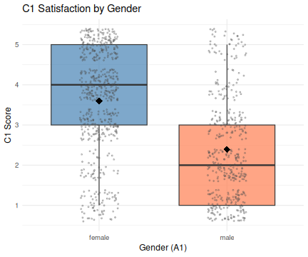

All in One View
Content from Introduction to R and RStudio
Last updated on 2026-04-23 | Edit this page
Estimated time: 45 minutes
Overview
Questions
- Why should you use
RandRStudio? - How do you get started working in
RandRStudio?
Objectives
- Understand the difference between
RandRStudio - Describe the purpose of the different
RStudiopanes - Organize files and directories into
RProjects
Acknowledgement
This workshop was adapted using material from the Data Carpentry
lessons R for Ecologists,
specifically introduction-r-rstudio.
Other Materials
What are R and RStudio?
R refers to a programming language as well as the
software that runs R code.
RStudio
is a software interface that can make it easier to write R scripts and
interact with the R software. It’s a very popular platform,
and RStudio also maintains the tidyverse series of
packages we will use in these workshops.
Why learn R?
You can walk through this analogy if you want, or skip over it if you don’t find it useful.
You’re working on a project when your advisor suggests that you begin working with one of their long-time collaborators. According to your advisor, this collaborator is very talented, but only speaks a language that you don’t know. Your advisor assures you that this is ok, the collaborator won’t judge you for starting to learn the language, and will happily answer your questions. However, the collaborator is also quite pedantic. While they don’t mind that you don’t speak their language fluently yet, they are always going to answer you quite literally.
You decide to reach out to the collaborator. You find that they email you back very quickly, almost immediately most of the time. Since you’re just learning their language, you often make mistakes. Sometimes, they tell you that you’ve made a grammatical error or warn you that what you asked for doesn’t make a lot of sense. Sometimes these warnings are difficult to understand, because you don’t really have a grasp of the underlying grammar. Sometimes you get an answer back, with no warnings, but you realize that it doesn’t make sense, because what you asked for isn’t quite what you wanted. Since this collaborator responds almost immediately, without tiring, you can quickly reformulate your question and send it again.
In this way, you begin to learn the language your collaborator speaks, as well as the particular way they think about your work. Eventually, the two of you develop a good working relationship, where you understand how to ask them questions effectively, and how to work through any issues in communication that might arise.
This collaborator’s name is R.
When you send commands to R, you get a response back.
Sometimes, when you make mistakes, you will get back a nice, informative
error message or warning. However, sometimes the warnings seem to
reference a much “deeper” level of R than you’re familiar
with. Or, even worse, you may get the wrong answer with no warning
because the command you sent is perfectly valid, but isn’t what you
actually want. While you may first have some success working with
R by memorizing certain commands or reusing other scripts,
this is akin to using a collection of tourist phrases or pre-written
statements when having a conversation. You might make a mistake (like
getting directions to the library when you need a bathroom), and you are
going to be limited in your flexibility (like furiously paging through a
tourist guide looking for the term for “thrift store”).
This is all to say that we are going to spend a bit of time digging
into some of the more fundamental aspects of the R
language, and these concepts may not feel as immediately useful as, say,
learning to make plots with ggplot2. However, learning
these more fundamental concepts will help you develop an understanding
of how R thinks about data and code, how to interpret error
messages, and how to flexibly expand your skills to new situations.
R does not involve lots of pointing and clicking, and
that’s a good thing
Since R is a programming language, the results of your
analysis do not rely on remembering a succession of pointing and
clicking, but instead on a series of written commands, and that’s a good
thing! So, if you want to redo your analysis because you collected more
data, you don’t have to remember which button you clicked in which order
to obtain your results; you just have to run your script again.
Working with scripts makes the steps you used in your analysis clear, and the code you write can be inspected by someone else who can give you feedback and spot mistakes.
Working with scripts forces you to have a deeper understanding of what you are doing, and facilitates your learning and comprehension of the methods you use.
R code is great for reproducibility
Reproducibility is when someone else (including your future self) can obtain the same results from the same dataset when using the same analysis.
R integrates with other tools to generate manuscripts
from your code. If you collect more data, or fix a mistake in your
dataset, the figures and the statistical tests in your manuscript are
updated automatically.
An increasing number of journals and funding agencies expect analyses
to be reproducible, so knowing R will give you an edge with
these requirements.
R is interdisciplinary and extensible
With tens of thousands of packages that can be installed to extend
its capabilities, R provides a framework that allows you to
combine statistical approaches from many scientific disciplines to best
suit the analytical framework you need to analyze your data. For
instance, R has packages for image analysis, GIS, time
series, population genetics, and a lot more.
R works on data of all shapes and sizes
The skills you learn with R scale easily with the size
of your dataset. Whether your dataset has hundreds or millions of lines,
it won’t make much difference to you.
R is designed for data analysis. It comes with special
data structures and data types that make handling of missing data and
statistical factors convenient.
R can read data from many different file types,
including geospatial data, and connect to local and remote
databases.
R produces high-quality graphics
R has well-developed plotting capabilities, and the
ggplot2 package is one of, if not the most powerful pieces
of plotting software available today. We can learn to use
ggplot2 in future workshops if you wish.
R has a large and welcoming community
Thousands of people use R daily. Many of them are willing to help you
through mailing lists and websites such as Stack Overflow, or on
the RStudio community.
Since R is very popular among researchers, most of the
help communities and learning materials are aimed towards other
researchers. Python is a similar language to
R, and can accomplish many of the same tasks, but is widely
used by software developers and software engineers, so
Python resources and communities are not as oriented
towards researchers.
Navigating RStudio
We will use the RStudio integrated development
environment (IDE) to write code into scripts, run code in
R, navigate files on our computer, inspect objects we create in
R, and look at the plots we make. RStudio has many other
features that can help with things like version control, developing
R packages, and writing Shiny apps, but we
won’t cover those in this workshop.

In the above screenshot, we can see 4 “panes” in the default layout:
- Top-Left: the
Sourcepane that displays scripts and other files.- If you only have 3 panes, and the Console pane is in the top left,
press
Shift+Cmd+N(Mac) orShift+Ctrl+N(WindowsorLinux) to open a blankRscript, which should make theSourcepane appear.
- If you only have 3 panes, and the Console pane is in the top left,
press
- Top-Right: the
Environment/Historypane, which shows all the objects in your current R session (Environment) and your command history (History)- there are some other tabs here, including
Connections,Build,Tutorial, and possiblyGit - we won’t cover any of the other tabs, but
RStudiohas lots of other useful features
- there are some other tabs here, including
- Bottom-Left: the
Consolepane, where you can interact directly with anRconsole, which interpretsRcommands and prints the results- There are also tabs for
TerminalandJobs
- There are also tabs for
- Bottom-Right: the
Files/Plots/Help/Viewerpane to navigate files or view plots and help pages
You can customize the layout of these panes, as well as many settings
such as RStudio color scheme, font, and even keyboard
shortcuts. You can access these settings by going to the menu bar, then
clicking on Tools → Global Options.
RStudio puts most of the things you need to work in
R into a single window, and also includes features like
keyboard shortcuts, autocompletion of code, and syntax highlighting
(different types of code are colored differently, making it easier to
navigate your code).
Getting set up in RStudio
It is a good practice to organize your projects into self-contained folders right from the start, so we will start building that habit now. A well-organized project is easier to navigate, more reproducible, and easier to share with others. Your project should start with a top-level folder that contains everything necessary for the project, including data, scripts, and images, all organized into sub-folders.
RStudio provides a Projects feature that
can make it easier to work on individual projects in R. We
will create a project that we will keep everything for this
workshop.
- Start
RStudio(you should see a view similar to the screenshot above). - In the top right, you will see a blue 3D cube and the words
Project: (None). Click on this icon. - Click
New Projectfrom the dropdown menu. - Click
New Directory, thenNew Project - Type out a name for the project, such as
intro_r - Put it in a convenient location using the
Create project as a subdirectory of:section. We recommend yourDesktop. You can always move the project somewhere else later, because it will be self-contained. - Click
Create Projectand your new project will open.
Next time you open RStudio, you can click that 3D cube
icon, and you will see options to open existing projects, like the one
you just made.
One of the benefits to using RStudio Projects is that they
automatically set the working directory to the
top-level folder for the project. The working directory is the folder
where R is working, so it views the location of all files (including
data and scripts) as being relative to the working directory. You may
come across scripts that include something like
setwd("/Users/YourUserName/MyCoolProject"), which directly
sets a working directory. This is usually much less portable, since that
specific directory might not be found on someone else’s computer (they
probably don’t have the same username as you). Using
RStudio Projects means we don’t have to deal with manually
setting the working directory.
There are a few settings we will need to adjust to improve the
reproducibility of our work. Go to your menu bar, then click
Tools → Global Options to open up the Options
window.

Make sure your settings match those highlighted in yellow. We don’t
want RStudio to store the current status of our R session
and reload it the next time we startR. This might sound
convenient, but for the sake of reproducibility, we want to start with a
clean, empty R session every time we work. That means that we have to
record everything we do into scripts, save any data we need into files,
and store outputs like images as files. We want to get used to
everything we generate in a single R session being
disposable. We want our scripts to be able to regenerate things
we need, other than “raw materials” like data.
Organizing your project directory
If you are teaching remotely and sharing only the
RStudio window, the new windows that pop up while creating
folders will not be shared via Zoom. You can switch to sharing your
entire screen, which will allow learners to see the popup windows.
Using a consistent folder structure across all your new projects will help keep a growing project organized, and make it easy to find files in the future. This is especially beneficial if you are working on multiple projects, since you will know where to look for particular kinds of files.
We will use a basic structure for this workshop, which is often a good place to start, and can be extended to meet your specific needs. Here is a diagram describing the structure that we will end up with as we progress through the workshops:
intro_r
│
└── scripts
│
└── data
│ └── cleaned
│ └── raw
│
└─── images
│
└─── documentsWithin our project folder (intro_r), we first have a
scripts folder to hold any scripts we write. We will also
have a data folder containing cleaned and
raw subfolders. In general, you want to keep your
raw data completely untouched, so once you put data into
that folder, you do not modify it. Instead, you read it into R, and if
you make any modifications, you write that modified file into the
cleaned folder. We also have an images folder
for plots we make, and a documents folder for any other
documents you might produce.
Let’s start making our new script folder. Go to the
Files pane (bottom right), and check the
current directory. You should be in the directory for the project you
just made, in our case intro_r. You shouldn’t see any
folders in here yet.

Next, click the New Folder button, and
type in scripts to generate your scripts
folder. It should appear in the Files list now. It’s worth noting that
the Files pane helps you create, find, and
open files, but moving through your files won’t change where the
working directory of your project is.
Working in R and RStudio
The basis of programming is that we write down instructions for the computer to follow, and then we tell the computer to follow those instructions. We write these instructions in the form of code, which is a common language that is understood by the computer and humans (after some practice). We call these instructions commands, and we tell the computer to follow the instructions by running (also called executing) the commands.
Console vs. script
You can run commands directly in the R console, or you
can write them into an R script. It may help to think of
working in the console vs. working in a script as something like
cooking. The console is like making up a new recipe, but not writing
anything down. You can carry out a series of steps and produce a nice,
tasty dish at the end. However, because you didn’t write anything down,
it’s harder to figure out exactly what you did, and in what order.
Writing a script is like taking nice notes while cooking- you can tweak and edit the recipe all you want, you can come back in 6 months and try it again, and you don’t have to try to remember what went well and what didn’t. It’s actually even easier than cooking, since you can hit one button and the computer “cooks” the whole recipe for you!
An additional benefit of scripts is that you can leave
comments for yourself or others to read. Lines that
start with # are considered comments and will not be
interpreted as R code.
Console
- The
Rconsole is where code is run/executed - The prompt, which is the
>symbol, is where you can type commands - By pressing
Enter,Rwill execute those commands and print the result. - You can work here, and your history is saved in the
Historypane, but you can’t access it in the future
Script
- You can make a new
Rscript by clickingFile → New File → R Script, clicking the green+button in the top left corner ofRStudio, or pressingShift+Cmd+N(Mac) orShift+Ctrl+N(WindowsandLinux). It will be unsaved, and calledUntitled1 - If you type out lines of
Rcode in a script, you can send them to theRconsole to be evaluated-
Cmd+Enter(Mac) orCtrl+Enter(WindowsandLinux) will run the line of code that your cursor is on - If you highlight multiple lines of code, you can run all of them by
pressing
Cmd+Enter(Mac) orCtrl+Enter(WindowsandLinux) - By preserving commands in a script, you can edit and rerun them quickly, save them for later, and share them with others
- You can leave comments for yourself by starting a line with a
#
-
Example
Let’s try running some code in the console and in a script. First,
click down in the Console pane, and type out 1+1. Hit
Enter to run the code. You should see your
code echoed, and then the value of 2 returned.
Now click into your blank script, and type out 1+1. With
your cursor on that line, hit Cmd+Enter
(Mac) or Ctrl+Enter
(Windows and Linux) to run the code. You will
see that your code was sent from the script to the console, where it
returned a value of 2, just like when you ran your code
directly in the console.
-
Ris a programming language and software used to run commands in that language -
RStudiois software to make it easier to write and run code inR - Use
R Projectsto keep your work organized and self-contained - Write your code in scripts for reproducibility and portability
Content from Introduction to R Packages, Markdown and Notebooks
Last updated on 2026-04-23 | Edit this page
Estimated time: 60 minutes
Overview
Questions
- What is an
R package? - How to install
Rpackages? - What is
R MarkdownandR Notebooks? - How can I integrate my
Rcode with text and plots? - How can I convert
.Rmdfiles to.html?
Objectives
- Understand what an
R packageis - Install packages using the
packagestab. - Install packages using
Rcode. - Understand basic syntax of
R MarkdownandR Notebooks
Acknowledgement
This workshop was adapted using material from the Data Carpentry
lessons R for Social Scientists,
specifically lesson 00-intro
and lesson 06-rmarkdown.
Other Materials
What are R packages?
R Packages are the
fundamental units of reproducible R code. They are
collections of reusable R functions, sample data, and the
documentation that describes how to use the functions.
What is the difference between base R and
packages?
The base R package
contains the basic functions which let R function as a
language:
- Arithmetic
- Input/output
- Basic programming support, etc
The R software is distributed with the
base R package installed. In addition to the
base R installation, there are in excess of 20,000
additional packages which can be used to extend the functionality of
R. Many of these have been written by R users
and have been made available in central repositories, like the one
hosted at the Comprehensive R Archive Network CRAN,
for anyone to download and install into their own R
environment.
CRAN
is a network of ftp and web servers around the world that store
identical, up-to-date, versions of code and documentation for
R.
Installing packages using R code and the
packages tab
We’ll use the tidyverse and here packages
in this workshop.
You can install these packages from the console by typing the command
install.packages(), or from the packages
tab.
We’ll install tidyverse from the console, and
here from the packages tab.
R
install.packages("tidyverse")
OUTPUT
The following package(s) will be installed:
- tidyverse [2.0.0]
These packages will be installed into "/__w/irim-r-workshops/irim-r-workshops/renv/profiles/lesson-requirements/renv/library/linux-ubuntu-noble/R-4.5/x86_64-pc-linux-gnu".
# Installing packages --------------------------------------------------------
[32m✔[0m tidyverse 2.0.0 [linked from cache]
Successfully installed 1 package in 3.6 milliseconds.You can see if you have a package installed by looking in the
packages tab (on the lower-right by default). You can also
type the command installed.packages() into the console and
examine the output.

Packages can also be installed from the packages tab. On
the packages tab, click the Install icon and
start typing the name of the package you want in the text box. As you
type, packages matching your starting characters will be displayed in a
drop-down list so that you can select them.

At the bottom of the Install Packages window is a check
box to Install dependencies. This is ticked by default,
which is usually what you want. Packages can (and do) make use of
functionality built into other packages, so for the functionality
contained in the package you are installing to work properly, there may
be other packages which have to be installed with them. The
Install dependencies option makes sure that this
happens.
Exercise
Use the Packages tab to confirm that you have both the
tidyverse and here packages installed.
Scroll through packages tab down to tidyverse. You can
also type a few characters into the searchbox. The
tidyverse package is really a package of packages,
including ggplot2 and dplyr, both of which
require other packages to run correctly. All of these packages will be
installed automatically. Depending on what packages have previously been
installed in your R environment, the install of tidyverse
could be very quick or could take several minutes. As the install
proceeds, messages relating to its progress will be written to the
console. You will be able to see all of the packages which are actually
being installed.
Because the install process accesses the CRAN
repository, you will need an Internet connection to install
packages.
It is also possible to install packages from other repositories, as
well as Github or the local file system, but we won’t be
looking at these options in this workshop.
R Markdown and R Notebooks
R Markdown is a flexible type of document that allows
you to seamlessly combine executable R code, and its
output, with text in a single document.
An R Notebook is a specific interactive execution mode
for an R Markdown (Rmd) document. Code chunks
are executed independently and interactively within the
RStudio editor.
R Markdown documents can be readily converted to
multiple static and dynamic output formats, including PDF (.pdf), Word
(.docx), and HTML (.html).
The benefit of a well-prepared R Markdown or
Notebook document is full reproducibility. This also means
that, if you notice a data transcription error, or you are able to add
more data to your analysis, you will be able to recompile the report
without making any changes in the actual document.
Creating an R Notebook file
To create a new R Markdown document in
RStudio, click
File -> New File -> R Notebook. You may be prompted
to install required packages the first time you do this.
Basic components of an R Notebook
YAML Header
To control the output, a YAML (YAML Ain’t
Markup Language) header is needed:
---
title: "My Awesome Report"
output: html_document
---The header is defined by the three hyphens at the beginning
(---) and the three hyphens at the end
(---).
In the YAML, the only required field is the
output:, which specifies the type of output you want. This
can be an html_document, a pdf_document, or a
word_document. We will start with an HTML document and
discuss the other options later.
After the header, to begin the body of the document, you start typing
after the end of the YAML header (i.e. after the second
---).
Markdown syntax
Markdown is a popular markup language that allows you to
add formatting elements to text, such as bold,
italics, and code. The formatting will not be
immediately visible in a markdown (.md) document, like you would see in
a Word document. Rather, you add Markdown syntax to the
text, which can then be converted to various other files that can
translate the Markdown syntax. Markdown is
useful because it is lightweight, flexible, and platform
independent.
RStudio provides a real time preview of the formatting-
click the Visual tab to view the rendered
Markdown, or Source to view the raw
Markdown.
Headings
A # in front of text indicates to Markdown
that this text is a heading. Adding more #s make the
heading smaller, i.e. one # is a first level heading, two
##s is a second level heading, etc. up to the 6th level
heading.
# Title
## Section
### Sub-section
#### Sub-sub section
##### Sub-sub-sub section
###### Sub-sub-sub-sub section(only use a level if the one above is also in use)
Formatting
You can make things bold by surrounding the word
with double asterisks, **bold**, or double underscores,
__bold__; and italicize using single asterisks,
*italics*, or single underscores,
_italics_.
You can also combine bold and italics to
write something really important with
triple-asterisks, ***really***, or underscores,
___really___; and, if you’re feeling bold (pun intended),
you can also use a combination of asterisks and underscores,
**_really_**, **_really_**.
To create code-type font, surround the word with
backticks, `code-type`.
Code Chunks
Code chunks are blocks where you write and execute R code. They start
with ```{r} and end with ```.
To insert a Chunk, click the small arrow next to the
Insert button in the editor toolbar and select
R.
To run a Chunk, click the small green play arrow on the right side of
the chunk, or use the keyboard shortcut
Ctrl+Alt+I on Windows and
Linux (or Cmd+Option+I on
Mac).
Render and Share Your Notebook
Once your analysis is complete, you can generate a final, polished report.
Click the Preview (or Render) button in the
RStudio editor toolbar.
This creates a self-contained HTML file (or PDF/Word document,
depending on your settings in your YAML header) that
includes both the narrative text and the final results.
You can easily share this output file with others, even if they don’t
use R.
Now that we’ve learned a couple of things, it might be useful to implement them.
Create your own new R Notebook
Start by opening a new R Notebook:
Click File -> New File -> R Notebook
When you open a new R Notebook, some explanatory text is
provided. This can be deleted so you can enter your own text and
code.
Download data
We will be using a dataset called SAFI_clean.csv. The
direct download link for this file is: https://github.com/datacarpentry/r-socialsci/blob/main/episodes/data/SAFI_clean.csv.
This data is a slightly cleaned up version of the
SAFI Survey Results available on figshare.
First, we need to create a new folder called data to
store this dataset. Go to the Files pane, and create a new folder named
data, and two subfolders called cleaned and
raw.
intro_r
│
└── scripts
│
└── data
│ └── cleaned
│ └── raw
│
└─── images
│
└─── documentsYou can either download the SAFI_clean.csv dataset used
for this workshop from the GitHub link or with R. You can
download the file from this GitHub link
and save it as SAFI_clean.csv in the data/raw
directory you just created. Or you can do this directly from
R by copying and pasting this in your console:
download.file( "https://raw.githubusercontent.com/datacarpentry/r-socialsci/main/episodes/data/SAFI_clean.csv", "data/raw/SAFI_clean.csv", mode = "wb" )
Start an Introduction section
Make a header called Introduction, and insert some
explanatory text about the dataset that will be in your report. For
example:
This report uses the tidyverse package
along with the SAFI dataset, which has columns
that include:
- village
- interview_date
- no_members
- years_liv
- respondent_wall_type
- roomsYou can also create an ordered list using numbers:
1. village
2. interview_date
3. no_members
4. years_liv
5. respondent_wall_type
6. roomsAnd nested items by tab-indenting:
- village
- Name of village
- interview_date
- Date of interview
- no_members
- How many family members lived in a house
- years_liv
- How many years respondent has lived in village or neighbouring
village
- respondent_wall_type
- Type of wall of house
- rooms
- Number of rooms in houseFor more Markdown syntax see the following reference guide.
Now we can render the document into HTML by clicking the
preview button in the top of the Source
pane (top left). If you haven’t saved the document yet, you will be
prompted to do so when you preview for the
first time.
Writing an R Markdown report
Now we will add some R code to demonstrate (we will
learn more about this code in the next workshop!).
First, we need to make sure tidyverse
is loaded. It is not enough to load
tidyverse from the console, we will need
to load it within our R Notebook. The same applies to our
data. To load these, we will need to create a ‘code chunk’ at the top of
our document (below the YAML header).
A code chunk can be inserted by clicking
Code \> Insert Chunk, or by using the keyboard shortcuts
Ctrl+Alt+I on Windows and
Linux, and Cmd+Option+I on
Mac.
The syntax of a code chunk is:
An R Markdown document knows that this text is not part
of the report from the (```) that begins and ends the
chunk. It also knows that the code inside of the chunk is R code from
the r inside of the curly braces ({}). After
the r you can add a name for the code chunk . Naming a
chunk is optional, but recommended. Each chunk name must be unique, and
only contain alphanumeric characters and -.
To load tidyverse and our
SAFI_clean.csv file, we will insert a chunk and call it
‘setup’. Since we don’t want this code or the output to show in our
rendered HTML document, we add an include = FALSE option
after the code chunk name ({r setup, include = FALSE}).
MARKDOWN
```{r setup, include = FALSE}
library(tidyverse)
library(here)
interviews <- read_csv(here("data/raw/SAFI_clean.csv"), na = "NULL")
```Important Note!
The file paths you give in a .Rmd document, e.g. to load a .csv file, are relative to the .Rmd document, not the project root.
We highly recommend the use of the here() function to
keep the file paths consistent within your project.
Insert table
Next, we will create a table which shows the average household size
grouped by village and memb_assoc. We can do
this by creating a new code chunk and calling it ‘interview-tbl’. Or,
you can come up with something more creative (just remember to stick to
the naming rules).
We will learn more about this code later!
To see the output, run the code chunk with the green triangle in the
top right corner of the the chunk, or with the keyboard shortcuts:
Ctrl+Alt+C on Windows and
Linux, or Cmd+Option+C on
Mac.
To make sure the table is formatted nicely in our output document, we
will need to use the kable() function from the
knitr package. The kable()
function takes the output of your R code and knits it into a nice
looking HTML table. You can also specify different aspects of the table,
e.g. the column names, a caption, etc.
Run the code chunk to make sure you get the desired output.
R
interviews %>%
filter(!is.na(memb_assoc)) %>%
group_by(village, memb_assoc) %>%
summarize(mean_no_membrs = mean(no_membrs)) %>%
knitr::kable(caption = "We can also add a caption.",
col.names = c("Village", "Member Association",
"Mean Number of Members"))
| Village | Member Association | Mean Number of Members |
|---|---|---|
| Chirodzo | no | 8.062500 |
| Chirodzo | yes | 7.818182 |
| God | no | 7.133333 |
| God | yes | 8.000000 |
| Ruaca | no | 7.178571 |
| Ruaca | yes | 9.500000 |
Many different R packages can be used to generate
tables. Some of the more commonly used options are listed in the table
below.
| Name | Creator(s) | Description |
|---|---|---|
| condformat | Oller Moreno (2022) | Apply and visualize conditional formatting to data frames in R. It renders a data frame with cells formatted according to criteria defined by rules, using a tidy evaluation syntax. |
| DT | Xie et al. (2023) | Data objects in R can be rendered as HTML tables using the JavaScript library ‘DataTables’ (typically via R Markdown or Shiny). The ‘DataTables’ library has been included in this R package. |
| formattable | Ren and Russell (2021) | Provides functions to create formattable vectors and data frames. ‘Formattable’ vectors are printed with text formatting, and formattable data frames are printed with multiple types of formatting in HTML to improve the readability of data presented in tabular form rendered on web pages. |
| flextable | Gohel and Skintzos (2023) | Use a grammar for creating and customizing pretty tables. The following formats are supported: ‘HTML’, ‘PDF’, ‘RTF’, ‘Microsoft Word’, ‘Microsoft PowerPoint’ and R ‘Grid Graphics’. ‘R Markdown’, ‘Quarto’, and the package ‘officer’ can be used to produce the result files. |
| gt | Iannone et al. (2022) | Build display tables from tabular data with an easy-to-use set of functions. With its progressive approach, we can construct display tables with cohesive table parts. Table values can be formatted using any of the included formatting functions. |
| huxtable | Hugh-Jones (2022) | Creates styled tables for data presentation. Export to HTML, LaTeX, RTF, ‘Word’, ‘Excel’, and ‘PowerPoint’. Simple, modern interface to manipulate borders, size, position, captions, colours, text styles and number formatting. |
| pander | Daróczi and Tsegelskyi (2022) | Contains some functions catching all messages, ‘stdout’ and other useful information while evaluating R code and other helpers to return user specified text elements (e.g., header, paragraph, table, image, lists etc.) in ‘pandoc’ markdown or several types of R objects similarly automatically transformed to markdown format. |
| pixiedust | Nutter and Kretch (2021) | ‘pixiedust’ provides tidy data frames with a programming interface intended to be similar to ’ggplot2’s system of layers with fine-tuned control over each cell of the table. |
| reactable | Lin et al. (2023) | Interactive data tables for R, based on the ‘React Table’ JavaScript library. Provides an HTML widget that can be used in ‘R Markdown’ or ‘Quarto’ documents, ‘Shiny’ applications, or viewed from an R console. |
| rhandsontable | Owen et al. (2021) | An R interface to the ‘Handsontable’ JavaScript library, which is a minimalist Excel-like data grid editor. |
| stargazer | Hlavac (2022) | Produces LaTeX code, HTML/CSS code and ASCII text for well-formatted tables that hold regression analysis results from several models side-by-side, as well as summary statistics. |
| tables | Murdoch (2022) | Computes and displays complex tables of summary statistics. Output may be in LaTeX, HTML, plain text, or an R matrix for further processing. |
| tangram | Garbett et al. (2023) | Provides an extensible formula system to quickly and easily create production quality tables. The processing steps are a formula parser, statistical content generation from data defined by a formula, and rendering into a table. |
| xtable | Dahl et al. (2019) | Coerce data to LaTeX and HTML tables. |
| ztable | Moon (2021) | Makes zebra-striped tables (tables with alternating row colors) in LaTeX and HTML formats easily from a data.frame, matrix, lm, aov, anova, glm, coxph, nls, fitdistr, mytable and cbind.mytable objects. |
Customizing chunk output
We mentioned using include = FALSE in a code chunk to
prevent the code and output from printing in the knitted document. There
are additional options available to customize how the code-chunks are
presented in the output document. The options are entered in the code
chunk after chunk-name and separated by commas, e.g.
{r chunk-name, eval = FALSE, echo = TRUE}.
| Option | Options | Output |
|---|---|---|
eval |
TRUE or FALSE
|
Whether or not the code within the code chunk should be run. |
echo |
TRUE or FALSE
|
Choose if you want to show your code chunk in the output document.
echo = TRUE will show the code chunk. |
include |
TRUE or FALSE
|
Choose if the output of a code chunk should be included in the
document. FALSE means that your code will run, but will not
show up in the document. |
warning |
TRUE or FALSE
|
Whether or not you want your output document to display potential warning messages produced by your code. |
message |
TRUE or FALSE
|
Whether or not you want your output document to display potential messages produced by your code. |
fig.align |
default, left, right,
center
|
Where the figure from your R code chunk should be output on the page |
Exercise
Play around with the different options in the chunk with the code for the table, and see what each option does to the output.
What happens if you use eval = FALSE and
echo = FALSE? What is the difference between this and
include = FALSE?
Create a chunk with {r eval = FALSE, echo = FALSE}, then
create another chunk with {r include = FALSE} to compare.
eval = FALSE and echo = FALSE will neither run
the code in the chunk, nor show the code in the knitted document. The
code chunk essentially doesn’t exist in the rendered document as it was
never run. Whereas include = FALSE will run the code and
store the output for later use.
In-line R code
Now we will use some in-line R code to present some
descriptive statistics. To use in-line R code, we use the
same backticks that we used in the Markdown section, with
an r to specify that we are generating R-code. The
difference between in-line code and a code chunk is the number of
backticks. In-line R code uses one backtick
(`r`), whereas code chunks use three backticks
(```r```).
For example, today’s date is `r Sys.Date()`, will be
rendered as: today’s date is 2026-04-23.
The code will display today’s date in the output document (well,
technically the date the document was last knitted or previewed).
The best way to use in-line R code, is to minimize the amount of code you need to produce the in-line output by preparing the output in code chunks. Let’s say we’re interested in presenting the average household size in a village.
R
# create a summary data frame with the mean household size by village
mean_household <- interviews %>%
group_by(village) %>%
summarize(mean_no_membrs = mean(no_membrs))
# and select the village we want to use
mean_chirodzo <- mean_household %>%
filter(village == "Chirodzo")
Now we can make an informative statement on the means of each village, and include the mean values as in-line R-code. For example:
The average household size in the village of Chirodzo is
`r round(mean_chirodzo$mean_no_membrs, 2)`
becomes…
The average household size in the village of Chirodzo is 7.08.
Because we are using in-line R code instead of the
actual values, we have created a dynamic document that will
automatically update if we make changes to the dataset and/or code
chunks.
Plots
Finally, we will also include a plot, so our document is a little more colourful and a little less boring. We will create some code to use in the plotting.
R
interviews_plotting <- interviews %>%
## pivot wider by items_owned
separate_rows(items_owned, sep = ";") %>%
## if there were no items listed, changing NA to no_listed_items
replace_na(list(items_owned = "no_listed_items")) %>%
mutate(items_owned_logical = TRUE) %>%
pivot_wider(names_from = items_owned,
values_from = items_owned_logical,
values_fill = list(items_owned_logical = FALSE)) %>%
## pivot wider by months_lack_food
separate_rows(months_lack_food, sep = ";") %>%
mutate(months_lack_food_logical = TRUE) %>%
pivot_wider(names_from = months_lack_food,
values_from = months_lack_food_logical,
values_fill = list(months_lack_food_logical = FALSE)) %>%
## add some summary columns
mutate(number_months_lack_food = rowSums(select(., Jan:May))) %>%
mutate(number_items = rowSums(select(., bicycle:car)))
R
interviews_plotting %>%
ggplot(aes(x = respondent_wall_type)) +
geom_bar(aes(fill = village))

We can also create a caption with the chunk option
fig.cap.
R
interviews_plotting %>%
ggplot(aes(x = respondent_wall_type)) +
geom_bar(aes(fill = village), position = "dodge") +
labs(x = "Type of Wall in Home", y = "Count", fill = "Village Name") +
scale_fill_viridis_d() # add colour deficient friendly palette

Other output options
You can convert R Markdown to a PDF or a Word document
(among others). Click the little triangle next to the
Preview button to get a drop-down menu. Or
you could put pdf_document or word_document in
the initial header of the file.
---
title: "My Awesome Report"
author: "Author name"
date: ""
output: word_document
---Note: Creating PDF documents
Creating .pdf documents may require installation of some
extra software. The R package tinytex provides some tools
to help make this process easier for R users. With tinytex
installed, run tinytex::install_tinytex() to install the
required software (you’ll only need to do this once) and then when you
Knit to pdf tinytex will
automatically detect and install any additional LaTeX packages that are
needed to produce the pdf document. Visit the tinytex website for
more information.
Note: Inserting citations into an
R Markdown file
It is possible to insert citations into an R Markdown
file using the editor toolbar. The editor toolbar includes commonly seen
formatting buttons generally seen in text editors (e.g., bold and italic
buttons). The toolbar is accessible by using the settings dropdown menu
(next to the Preview dropdown menu) to select
Use Visual Editor, also accessible through the shortcut
Crtl+Shift+F4. From here, clicking
Insert allows Citation to be selected
(shortcut: Crtl+Shift+F8). For example,
searching 10.1007/978-3-319-24277-4 in
From DOI and inserting will provide the citation for
ggplot2 [@wickham2016]. This will also save
the citation(s) in ‘references.bib’ in the current working directory.
Visit the R Studio website
for more information. Tip: obtaining citation information from relevant
packages can be done by using citation("package").
Resources
R MarkdowndocumentationR Markdown cheat sheetGetting started with R MarkdownIntroduction to R Markdown-
R Markdown: The Definitive Guide(book byRstudioteam)
- Use
install.packages()to install packages (libraries) - Use
library()to load packages -
R Markdownis a useful language for creating reproducible documents combining text and executableRcode - Specify chunk options to control formatting of the output document
Content from Starting with Data
Last updated on 2026-04-23 | Edit this page
Estimated time: 72 minutes
The main goals for this lessons are:
- To make sure that learners understand the structure of a dataframe
- To expose learners to factors. Their behavior is not necessarily intuitive, and so it is important that they are guided through it the first time they are exposed to it. The content of the lesson should be enough for learners to avoid common mistakes with them.
Overview
Questions
- How does
Rstore data? - What is a data.frame?
- How can I read a complete
.csvfile intoR? - How can I get basic summary information about my dataset?
- How can I change the way
Rtreats strings in my dataset? - Why would I want strings to be treated differently?
- How are dates represented in
Rand how can I change the format?
Objectives
- Load external data from a
.csvfile into a data frame. - Explore the structure and content of data.frames
- Understand how
Rassigns values to objects - Understand vector types and missing data
- Describe the difference between a factor and a string.
- Create and convert factors
- Examine and change date formats.
Acknowledgement
This workshop was adapted using material from the Data Carpentry
lessons R for Social Scientists,
specifically lesson 02-starting-with-data,
and R for Ecologists,
specifically how-r-thinks-about-data.
Other Materials
Set up
Start by opening up your RStudio project that you
created in a previous workshop
(called intro_r). Open a new R Notebook:
Click File -> New File -> R Notebook. Save your
R Notebook with a filename that makes sense, such as
starting_with_data.Rmd, in the scripts
folder.
When you open a new R Notebook, some explanatory text is
provided. This can be deleted so you can enter your own text and
code.
What are data frames?
Data frames are the de facto data structure for tabular data
in R, and what we use for data processing, statistics, and
plotting.
A data frame is the representation of data in the format of a table
where the columns are vectors that all have the same length. Data frames
are analogous to the more familiar spreadsheet in programs such as
Excel, with one key difference. Because columns are
vectors, each column must contain a single type of data (e.g.,
characters, integers, factors). For example, here is a figure depicting
a data frame comprising a numeric, a character, and a logical
vector.

Data frames can be created by hand, but most commonly they are
generated by the functions read_csv() or
read_table(); in other words, when importing spreadsheets
from your hard drive (or the web). We will now demonstrate how to import
tabular data using read_csv().
Presentation of the SAFI Data
SAFI (Studying African Farmer-Led Irrigation) is a study
looking at farming and irrigation methods in Tanzania and Mozambique.
The survey data was collected through interviews conducted between
November 2016 and June 2017. For this lesson, we will be using a subset
of the available data. For information about the orginal dataset, see
the dataset description.
We will be using a subset of the dataset that has been provided
(data/raw/SAFI_clean.csv). In this dataset, the missing
data is encoded as NULL, each row holds information for a
single interview respondent, and the columns represent:
| column_name | description |
|---|---|
| key_id | Added to provide a unique Id for each observation. (The InstanceID field does this as well but it is not as convenient to use) |
| village | Village name |
| interview_date | Date of interview |
| no_membrs | How many members in the household? |
| years_liv | How many years have you been living in this village or neighboring village? |
| respondent_wall_type | What type of walls does their house have (from list) |
| rooms | How many rooms in the main house are used for sleeping? |
| memb_assoc | Are you a member of an irrigation association? |
| affect_conflicts | Have you been affected by conflicts with other irrigators in the area? |
| liv_count | Number of livestock owned. |
| items_owned | Which of the following items are owned by the household? (list) |
| no_meals | How many meals do people in your household normally eat in a day? |
| months_lack_food | Indicate which months, In the last 12 months have you faced a situation when you did not have enough food to feed the household? |
| instanceID | Unique identifier for the form data submission |
Download the data
If you did not previously downloaded the SAFI_clean.csv
dataset in the previous workshop,
please follow the instructions below to download it. If you already have
the file in your data/raw/ folder, jump to the
Importing data section.
We will be using a dataset called SAFI_clean.csv. The
direct download link for this file is: https://github.com/datacarpentry/r-socialsci/blob/main/episodes/data/SAFI_clean.csv.
This data is a slightly cleaned up version of the SAFI Survey Results
available on figshare.
First, we need to create a new folder called data to
store this dataset. Go to the Files pane, and create a new folder named
data, and two subfolders called cleaned and
raw.
intro_r
│
└── scripts
│
└── data
│ └── cleaned
│ └── raw
│
└─── images
│
└─── documentsYou can either download the SAFI_clean.csv dataset used
for this workshop from the GitHub link or with
R. You can download the file from this GitHub link
and save it as SAFI_clean.csv in the data/raw
directory you just created. Or you can do this directly from
R by copying and pasting this in your console:
download.file( "https://raw.githubusercontent.com/datacarpentry/r-socialsci/main/episodes/data/SAFI_clean.csv", "data/raw/SAFI_clean.csv", mode = "wb" )
Importing data
You are going to load the data in R’s memory using the
function read_csv() from the
readr package, which is part of the
tidyverse; learn more about the
tidyverse collection of packages here.
readr gets installed as part as the
tidyverse installation. When you load the
tidyverse
(library(tidyverse)), the core packages (the packages used
in most data analyses) get loaded, including
readr.
Before proceeding, however, this is a good opportunity to talk about
conflicts. Certain packages we load can end up introducing function
names that are already in use by pre-loaded R packages. For
instance, when we load the tidyverse package below, we will introduce
two conflicting functions: filter() and lag().
This happens because filter and lag are
already functions used by the stats package (already pre-loaded in
R). What will happen now is that if we, for example, call
the filter() function, R will use the
dplyr::filter() version and not the
stats::filter() one. This happens because, if conflicted,
by default R uses the function from the most recently
loaded package. Conflicted functions may cause you some trouble in the
future, so it is important that we are aware of them so that we can
properly handle them, if we want.
To do so, we just need the following functions from the conflicted package:
-
conflicted::conflict_scout(): Shows us any conflicted functions.
-
conflict_prefer("function", "package_prefered"): Allows us to choose the default function we want from now on.
It is also important to know that we can, at any time, just call the
function directly from the package we want, such as
stats::filter().
Even with the use of an RStudio project, it can be
difficult to learn how to specify paths to file locations. Enter the
here package! The here package creates
paths relative to the top-level directory (your RStudio project). These
relative paths work regardless of where the associated source
file lives inside your project, like analysis projects with data and
reports in different subdirectories. This is an important contrast to
using setwd(), which depends on the way you order your
files on your computer.
Before we can use the read_csv() and here()
functions, we need to load the tidyverse and
here packages.
Add a new code chunk in your notebook, load the
tidyverse and here packages, and read in the
SAFI dataset. We’ll assign the dataset to
an object called interviews.
If you recall, the missing data is encoded as NULL in
the dataset. We’ll tell this to the read_csv() function, so
R will automatically convert all the NULL
entries in the dataset into NA.
R
library(tidyverse)
library(here)
interviews <- read_csv(
here("data", "raw", "SAFI_clean.csv"),
na = "NULL")
In the above code, we notice the here() function takes
folder and file names as inputs (e.g., "data",
"SAFI_clean.csv"), each enclosed in quotations
("") and separated by a comma. The here() will
accept as many names as are necessary to navigate to a particular file
(e.g., here("data", "raw", "SAFI_clean.csv)).
The here() function can accept the folder and file names
in an alternate format, using a slash (“/”) rather than commas to
separate the names. The two methods are equivalent, so that
here("data", "raw", "SAFI_clean.csv") and
here("data/raw/SAFI_clean.csv") produce the same result.
(The slash is used on all operating systems; backslashes are not
used.)
Assigning objects
In R, we can assign inputs to a named
object. We do this using the assignment
arrow <-, Alt+-
(Windows and Linux) or
Option+- (Mac).What we are
doing here is taking the result of the code on the right side of the
arrow (reading in the csv file), and assigning it to an object whose
name is on the left side of the arrow (interviews).
You may notice that the contents of the interviews data frame do not
display below the code cell. This is because assignments
(<-) don’t display anything. If we want to check that
our data has been loaded, we can see the contents of the data frame by
typing its name: interviews into a new code chunk.
R
interviews
## Try also
## view(interviews)
## head(interviews)
OUTPUT
# A tibble: 131 × 14
key_ID village interview_date no_membrs years_liv respondent_wall_type
<dbl> <chr> <dttm> <dbl> <dbl> <chr>
1 1 God 2016-11-17 00:00:00 3 4 muddaub
2 2 God 2016-11-17 00:00:00 7 9 muddaub
3 3 God 2016-11-17 00:00:00 10 15 burntbricks
4 4 God 2016-11-17 00:00:00 7 6 burntbricks
5 5 God 2016-11-17 00:00:00 7 40 burntbricks
6 6 God 2016-11-17 00:00:00 3 3 muddaub
7 7 God 2016-11-17 00:00:00 6 38 muddaub
8 8 Chirodzo 2016-11-16 00:00:00 12 70 burntbricks
9 9 Chirodzo 2016-11-16 00:00:00 8 6 burntbricks
10 10 Chirodzo 2016-12-16 00:00:00 12 23 burntbricks
# ℹ 121 more rows
# ℹ 8 more variables: rooms <dbl>, memb_assoc <chr>, affect_conflicts <chr>,
# liv_count <dbl>, items_owned <chr>, no_meals <dbl>, months_lack_food <chr>,
# instanceID <chr>Exploring data frames
When working with the output of a new function, it’s often a good
idea to check the class():
R
class(interviews)
OUTPUT
[1] "spec_tbl_df" "tbl_df" "tbl" "data.frame" Whoa! What is this thing? It has multiple
classesspec_tbl_df, tbl_df, tbl,
and data.frame? Well, it’s called a tibble,
and it is the tidyverse version of a data.frame. It
is a data.frame, but with some added perks. It prints out a
little more nicely, it highlights NA values and negative
values in red, and it will generally communicate with you more (in terms
of warnings and errors, which is a good thing).
As a tibble, the type of data included in each column is
listed in an abbreviated fashion below the column names. For instance,
here key_ID is a column of floating point numbers
(abbreviated <dbl> for the word ‘double’),
respondent_wall_type is a column of characters (
<chr>) and theinterview_date is a column
in the “date and time” format (<dttm>).
tidyverse vs. base R
As we begin to delve more deeply into the tidyverse, we
should briefly pause to mention some of the reasons for focusing on the
tidyverse set of tools. In R, there are often many ways to
get a job done, and there are other approaches that can accomplish tasks
similar to the tidyverse.
The phrase base R is used to refer to
approaches that utilize functions contained in R’s default
packages. We will use some base R functions, such as
str(), head(), and nrow(), and we
will be using more scattered throughout this workshop. However, there
are some key base R approaches we will not be teaching.
These include square bracket subsetting. You may come across code
written by other people that looks like
interviews[1:10, 2], which is a base R
command. If you’re interested in learning more about these approaches,
you can check out other Carpentries lessons like the Software Carpentry Programming with R
lesson.
We choose to teach the tidyverse set of packages because
they share a similar syntax and philosophy, making them consistent and
producing highly readable code. They are also very flexible and
powerful, with a growing number of packages designed according to
similar principles and to work well with the rest of the packages. The
tidyverse packages tend to have very clear documentation
and wide array of learning materials that tend to be written with novice
users in mind. Finally, the tidyverse has only continued to
grow, and has strong support from RStudio, which implies
that these approaches will be relevant into the future.
Note
read_csv() assumes that fields are delimited by commas.
However, in several countries, the comma is used as a decimal separator
and the semicolon (;) is used as a field delimiter. If you want to read
in this type of files in R, you can use the
read_csv2 function. It behaves exactly like
read_csv but uses different parameters for the decimal and
the field separators. If you are working with another format, they can
be both specified by the user. Check out the help for
read_csv() by typing ?read_csv to learn more.
There is also the read_tsv() for tab-separated data files,
and read_delim() allows you to specify more details about
the structure of your file.
Inspecting data frames
When calling a tbl_df object (like
interviews), there is already a lot of information about
our data frame being displayed such as the number of rows, the number of
columns, the names of the columns, and as we just saw the class of data
stored in each column. However, there are functions to extract this
information from data frames. Here is a non-exhaustive list of some of
these functions. Let’s try them out!
Size:
-
dim(interviews)- returns a vector with the number of rows as the first element, and the number of columns as the second element (thedimensions of the object) -
nrow(interviews)- returns the number of rows -
ncol(interviews)- returns the number of columns
Content:
-
head(interviews)- shows the first 6 rows -
tail(interviews)- shows the last 6 rows
Names:
-
names(interviews)- returns the column names (synonym ofcolnames()fordata.frameobjects)
Summary:
-
str(interviews)- structure of the object and information about the class, length and content of each column -
summary(interviews)- summary statistics for each column -
glimpse(interviews)- returns the number of columns and rows of the tibble, the names and class of each column, and previews as many values will fit on the screen. Unlike the other inspecting functions listed above,glimpse()is not abase Rfunction so you need to have thetidyversepackage loaded to be able to execute it.
Note: most of these functions are “generic.” They can be used on other types of objects besides data frames or tibbles.
Using functions
We can view the first few rows with the head() function,
and the last few rows with the tail() function:
R
head(interviews)
OUTPUT
# A tibble: 6 × 14
key_ID village interview_date no_membrs years_liv respondent_wall_type
<dbl> <chr> <dttm> <dbl> <dbl> <chr>
1 1 God 2016-11-17 00:00:00 3 4 muddaub
2 2 God 2016-11-17 00:00:00 7 9 muddaub
3 3 God 2016-11-17 00:00:00 10 15 burntbricks
4 4 God 2016-11-17 00:00:00 7 6 burntbricks
5 5 God 2016-11-17 00:00:00 7 40 burntbricks
6 6 God 2016-11-17 00:00:00 3 3 muddaub
# ℹ 8 more variables: rooms <dbl>, memb_assoc <chr>, affect_conflicts <chr>,
# liv_count <dbl>, items_owned <chr>, no_meals <dbl>, months_lack_food <chr>,
# instanceID <chr>R
tail(interviews)
OUTPUT
# A tibble: 6 × 14
key_ID village interview_date no_membrs years_liv respondent_wall_type
<dbl> <chr> <dttm> <dbl> <dbl> <chr>
1 192 Chirodzo 2017-06-03 00:00:00 9 20 burntbricks
2 126 Ruaca 2017-05-18 00:00:00 3 7 burntbricks
3 193 Ruaca 2017-06-04 00:00:00 7 10 cement
4 194 Ruaca 2017-06-04 00:00:00 4 5 muddaub
5 199 Chirodzo 2017-06-04 00:00:00 7 17 burntbricks
6 200 Chirodzo 2017-06-04 00:00:00 8 20 burntbricks
# ℹ 8 more variables: rooms <dbl>, memb_assoc <chr>, affect_conflicts <chr>,
# liv_count <dbl>, items_owned <chr>, no_meals <dbl>, months_lack_food <chr>,
# instanceID <chr>We used these functions with just one argument, the object
interviews, and we didn’t give the argument a name. In
R, a function’s arguments come in a particular order, and
if you put them in the correct order, you don’t need to name them. In
this case, the name of the argument is x, so we can name it
if we want, but since we know it’s the first argument, we don’t need
to.
Some arguments are optional. For example, the n argument
in head() specifies the number of rows to print. It
defaults to 6, but we can override that by specifying a different
number:
R
head(interviews, n = 10)
OUTPUT
# A tibble: 10 × 14
key_ID village interview_date no_membrs years_liv respondent_wall_type
<dbl> <chr> <dttm> <dbl> <dbl> <chr>
1 1 God 2016-11-17 00:00:00 3 4 muddaub
2 2 God 2016-11-17 00:00:00 7 9 muddaub
3 3 God 2016-11-17 00:00:00 10 15 burntbricks
4 4 God 2016-11-17 00:00:00 7 6 burntbricks
5 5 God 2016-11-17 00:00:00 7 40 burntbricks
6 6 God 2016-11-17 00:00:00 3 3 muddaub
7 7 God 2016-11-17 00:00:00 6 38 muddaub
8 8 Chirodzo 2016-11-16 00:00:00 12 70 burntbricks
9 9 Chirodzo 2016-11-16 00:00:00 8 6 burntbricks
10 10 Chirodzo 2016-12-16 00:00:00 12 23 burntbricks
# ℹ 8 more variables: rooms <dbl>, memb_assoc <chr>, affect_conflicts <chr>,
# liv_count <dbl>, items_owned <chr>, no_meals <dbl>, months_lack_food <chr>,
# instanceID <chr>If we order them correctly, we don’t have to name either:
R
head(interviews, 10)
OUTPUT
# A tibble: 10 × 14
key_ID village interview_date no_membrs years_liv respondent_wall_type
<dbl> <chr> <dttm> <dbl> <dbl> <chr>
1 1 God 2016-11-17 00:00:00 3 4 muddaub
2 2 God 2016-11-17 00:00:00 7 9 muddaub
3 3 God 2016-11-17 00:00:00 10 15 burntbricks
4 4 God 2016-11-17 00:00:00 7 6 burntbricks
5 5 God 2016-11-17 00:00:00 7 40 burntbricks
6 6 God 2016-11-17 00:00:00 3 3 muddaub
7 7 God 2016-11-17 00:00:00 6 38 muddaub
8 8 Chirodzo 2016-11-16 00:00:00 12 70 burntbricks
9 9 Chirodzo 2016-11-16 00:00:00 8 6 burntbricks
10 10 Chirodzo 2016-12-16 00:00:00 12 23 burntbricks
# ℹ 8 more variables: rooms <dbl>, memb_assoc <chr>, affect_conflicts <chr>,
# liv_count <dbl>, items_owned <chr>, no_meals <dbl>, months_lack_food <chr>,
# instanceID <chr>Additionally, if we name them, we can put them in any order we want:
R
head(n = 10, x = interviews)
OUTPUT
# A tibble: 10 × 14
key_ID village interview_date no_membrs years_liv respondent_wall_type
<dbl> <chr> <dttm> <dbl> <dbl> <chr>
1 1 God 2016-11-17 00:00:00 3 4 muddaub
2 2 God 2016-11-17 00:00:00 7 9 muddaub
3 3 God 2016-11-17 00:00:00 10 15 burntbricks
4 4 God 2016-11-17 00:00:00 7 6 burntbricks
5 5 God 2016-11-17 00:00:00 7 40 burntbricks
6 6 God 2016-11-17 00:00:00 3 3 muddaub
7 7 God 2016-11-17 00:00:00 6 38 muddaub
8 8 Chirodzo 2016-11-16 00:00:00 12 70 burntbricks
9 9 Chirodzo 2016-11-16 00:00:00 8 6 burntbricks
10 10 Chirodzo 2016-12-16 00:00:00 12 23 burntbricks
# ℹ 8 more variables: rooms <dbl>, memb_assoc <chr>, affect_conflicts <chr>,
# liv_count <dbl>, items_owned <chr>, no_meals <dbl>, months_lack_food <chr>,
# instanceID <chr>Generally, it’s good practice to start with the required arguments, like the data.frame whose rows you want to see, and then to name the optional arguments. If you are ever unsure, it never hurts to explicitly name an argument.
Aside: Getting Help
To learn more about a function, you can type a ? in
front of the name of the function, which will bring up the official
documentation for that function:
R
?head
Function documentation is written by the authors of the functions, so they can vary pretty widely in their style and readability. The first section, Description, gives you a concise description of what the function does, but it may not always be enough. The Arguments section defines all the arguments for the function and is usually worth reading thoroughly. Finally, the Examples section at the end will often have some helpful examples that you can run to get a sense of what the function is doing.
Another great source of information is package
vignettes. Many packages have vignettes, which are like
tutorials that introduce the package, specific functions, or general
methods. You can run vignette(package = "package_name") to
see a list of vignettes in that package. Once you have a name, you can
run vignette("vignette_name", "package_name") to view that
vignette. You can also use a web browser to go to
https://cran.r-project.org/web/packages/package_name/vignettes/
where you will find a list of links to each vignette. Some packages will
have their own websites, which often have nicely formatted vignettes and
tutorials.
Finally, learning to search for help is probably the most useful
skill for any R user. The key skill is figuring out what
you should actually search for. It’s often a good idea to start your
search with R or R programming. If you have
the name of a package you want to use, start with
R package_name.
Let’s investigate str a bit more.
R
str(interviews)
OUTPUT
spc_tbl_ [131 × 14] (S3: spec_tbl_df/tbl_df/tbl/data.frame)
$ key_ID : num [1:131] 1 2 3 4 5 6 7 8 9 10 ...
$ village : chr [1:131] "God" "God" "God" "God" ...
$ interview_date : POSIXct[1:131], format: "2016-11-17" "2016-11-17" ...
$ no_membrs : num [1:131] 3 7 10 7 7 3 6 12 8 12 ...
$ years_liv : num [1:131] 4 9 15 6 40 3 38 70 6 23 ...
$ respondent_wall_type: chr [1:131] "muddaub" "muddaub" "burntbricks" "burntbricks" ...
$ rooms : num [1:131] 1 1 1 1 1 1 1 3 1 5 ...
$ memb_assoc : chr [1:131] NA "yes" NA NA ...
$ affect_conflicts : chr [1:131] NA "once" NA NA ...
$ liv_count : num [1:131] 1 3 1 2 4 1 1 2 3 2 ...
$ items_owned : chr [1:131] "bicycle;television;solar_panel;table" "cow_cart;bicycle;radio;cow_plough;solar_panel;solar_torch;table;mobile_phone" "solar_torch" "bicycle;radio;cow_plough;solar_panel;mobile_phone" ...
$ no_meals : num [1:131] 2 2 2 2 2 2 3 2 3 3 ...
$ months_lack_food : chr [1:131] "Jan" "Jan;Sept;Oct;Nov;Dec" "Jan;Feb;Mar;Oct;Nov;Dec" "Sept;Oct;Nov;Dec" ...
$ instanceID : chr [1:131] "uuid:ec241f2c-0609-46ed-b5e8-fe575f6cefef" "uuid:099de9c9-3e5e-427b-8452-26250e840d6e" "uuid:193d7daf-9582-409b-bf09-027dd36f9007" "uuid:148d1105-778a-4755-aa71-281eadd4a973" ...
- attr(*, "spec")=
.. cols(
.. key_ID = col_double(),
.. village = col_character(),
.. interview_date = col_datetime(format = ""),
.. no_membrs = col_double(),
.. years_liv = col_double(),
.. respondent_wall_type = col_character(),
.. rooms = col_double(),
.. memb_assoc = col_character(),
.. affect_conflicts = col_character(),
.. liv_count = col_double(),
.. items_owned = col_character(),
.. no_meals = col_double(),
.. months_lack_food = col_character(),
.. instanceID = col_character()
.. )
- attr(*, "problems")=<externalptr> We get quite a bit of useful information here. First, we are told that we have a data.frame of 131 observations, or rows, and 14 variables, or columns.
Next, we get a bit of information on each variable, including its
type (int or chr) and a quick peek at the
first 10 values. You might ask why there is a $ in front of
each variable. This is because the $ is an operator that
allows us to select individual columns from a data.frame.
The $ operator also allows you to use tab-completion to
quickly select which variable you want from a given data.frame. For
example, to get the village variable, we can type
interviews$ and then hit Tab.
We get a list of the variables that we can move through with up and down
arrow keys. Hit Enter when you reach
village, which should finish this code:
R
interviews$village
OUTPUT
[1] "God" "God" "God" "God" "God" "God"
[7] "God" "Chirodzo" "Chirodzo" "Chirodzo" "God" "God"
[13] "God" "God" "God" "God" "God" "God"
[19] "God" "God" "God" "God" "Ruaca" "Ruaca"
[25] "Ruaca" "Ruaca" "Ruaca" "Ruaca" "Ruaca" "Ruaca"
[31] "Ruaca" "Ruaca" "Ruaca" "Chirodzo" "Chirodzo" "Chirodzo"
[37] "Chirodzo" "God" "God" "God" "God" "God"
[43] "Chirodzo" "Chirodzo" "Chirodzo" "Chirodzo" "Chirodzo" "Chirodzo"
[49] "Chirodzo" "Chirodzo" "Chirodzo" "Chirodzo" "Chirodzo" "Chirodzo"
[55] "Chirodzo" "Chirodzo" "Chirodzo" "Chirodzo" "Chirodzo" "Chirodzo"
[61] "Chirodzo" "Chirodzo" "Chirodzo" "Chirodzo" "Chirodzo" "Chirodzo"
[67] "Chirodzo" "Chirodzo" "Chirodzo" "Chirodzo" "Ruaca" "Chirodzo"
[73] "Ruaca" "Ruaca" "Ruaca" "God" "Ruaca" "God"
[79] "Ruaca" "God" "God" "God" "God" "God"
[85] "God" "God" "God" "God" "God" "Ruaca"
[91] "Ruaca" "Ruaca" "Ruaca" "Ruaca" "God" "God"
[97] "Ruaca" "Ruaca" "Ruaca" "Ruaca" "Ruaca" "Ruaca"
[103] "God" "God" "Ruaca" "Ruaca" "Ruaca" "Ruaca"
[109] "Ruaca" "Ruaca" "God" "Ruaca" "Ruaca" "Ruaca"
[115] "Ruaca" "Ruaca" "God" "God" "Ruaca" "Ruaca"
[121] "Ruaca" "Ruaca" "Ruaca" "Ruaca" "Ruaca" "Chirodzo"
[127] "Ruaca" "Ruaca" "Ruaca" "Chirodzo" "Chirodzo"Vectors: the building block of data
You might have noticed that our last result looked different from
when we printed out the interviews data.frame itself.
That’s because it is not a data.frame, it is a vector.
A vector is a 1-dimensional series of values, in this case a vector of
characters representing the village name.
Data.frames are made up of vectors; each column in a data.frame is a
vector. Vectors are the basic building blocks of all data in
R. Basically, everything in R is a vector, a
bunch of vectors stitched together in some way, or a function.
Understanding how vectors work is crucial to understanding how
R treats data, so we will spend some time learning about
them.
There are 4 main types of vectors (also known as atomic vectors):
"character"for strings of characters, like ourvillageorrespondent_wall_typecolumns. Each entry in a character vector is wrapped in quotes. In other programming languages, this type of data may be referred to as “strings”."integer"for integers. All the numeric values ininterviewsare integers. You may sometimes see integers represented like2Lor20L. TheLindicates toRthat it is an integer, instead of the next data type,"numeric"."numeric", aka"double", vectors can contain numbers including decimals. Other languages may refer to these as “float” or “floating point” numbers."logical"forTRUEandFALSE, which can also be represented asTandF. In other contexts, these may be referred to as “Boolean” data.
Vectors can only be of a single type. Since each
column in a data.frame is a vector, this means an accidental character
following a number, like 29, can change the type of the
whole vector. Mixing up vector types is one of the most common mistakes
in R, and it can be tricky to figure out. It’s often very
useful to check the types of vectors.
To create a vector from scratch, we can use the c()
function, putting values inside, separated by commas.
R
c(1, 2, 5, 12, 4)
OUTPUT
[1] 1 2 5 12 4As you can see, those values get printed out in the console, just
like with interviews$village. To store this vector so we
can continue to work with it, we need to assign it to an object.
R
num <- c(1, 2, 5, 12, 4)
You can check what kind of object num is with the
class() function.
R
class(num)
OUTPUT
[1] "numeric"We see that num is a numeric vector.
Let’s try making a character vector:
R
char <- c("apple", "pear", "grape")
class(char)
OUTPUT
[1] "character"Remember that each entry, like "apple", needs to be
surrounded by quotes, and entries are separated with commas. If you do
something like "apple, pear, grape", you will have only a
single entry containing that whole string.
Finally, let’s make a logical vector:
R
logi <- c(TRUE, FALSE, TRUE, TRUE)
class(logi)
OUTPUT
[1] "logical"Challenge 1: Coercion
Since vectors can only hold one type of data, something has to be done when we try to combine different types of data into one vector.
- What type will each of these vectors be? Try to guess without
running any code at first, then run the code and use
class()to verify your answers.
R
num_logi <- c(1, 4, 6, TRUE)
num_char <- c(1, 3, "10", 6)
char_logi <- c("a", "b", TRUE)
tricky <- c("a", "b", "1", FALSE)
R
class(num_logi)
OUTPUT
[1] "numeric"R
class(num_char)
OUTPUT
[1] "character"R
class(char_logi)
OUTPUT
[1] "character"R
class(tricky)
OUTPUT
[1] "character"R will automatically convert values in a vector so that
they are all the same type, a process called
coercion.
Challenge 1: Coercion (continued)
- How many values in
combined_logicalare"TRUE"(as a character)?
R
combined_logical <- c(num_logi, char_logi)
R
combined_logical
OUTPUT
[1] "1" "4" "6" "1" "a" "b" "TRUE"R
class(combined_logical)
OUTPUT
[1] "character"Only one value is "TRUE". Coercion happens when each
vector is created, so the TRUE in num_logi
becomes a 1, while the TRUE in
char_logi becomes "TRUE". When these two
vectors are combined, R doesn’t remember that the 1 in
num_logi used to be a TRUE, it will just
coerce the 1 to "1".
Challenge 1: Coercion (continued)
- Now that you’ve seen a few examples of coercion, you might have started to see that there are some rules about how types get converted. There is a hierarchy to coercion. Can you draw a diagram that represents the hierarchy of what types get converted to other types?
logical → integer → numeric → character
Logical vectors can only take on two values: TRUE or
FALSE. Integer vectors can only contain integers, so
TRUE and FALSE can be coerced to
1 and 0. Numeric vectors can contain numbers
with decimals, so integers can be coerced from, say, 6 to
6.0 (though R will still display a numeric 6
as 6.). Finally, any string of characters can be
represented as a character vector, so any of the other types can be
coerced to a character vector.
Coercion is not something you will often do intentionally; rather,
when combining vectors or reading data into R, a stray
character that you missed may change an entire numeric vector into a
character vector. It is a good idea to check the class() of
your results frequently, particularly if you are running into confusing
error messages.
Missing data
One of the great things about R is how it handles
missing data, which can be tricky in other programming languages.
R represents missing data as NA, without
quotes, in vectors of any type. Let’s make a numeric vector with an
NA value:
R
weights <- c(25, 34, 12, NA, 42)
R doesn’t make assumptions about how you want to handle
missing data, so if we pass this vector to a numeric function like
min(), it won’t know what to do, so it returns
NA:
R
min(weights)
OUTPUT
[1] NAThis is a very good thing, since we won’t accidentally forget to
consider our missing data. If we decide to exclude our missing values,
many basic math functions have an argument to
r e
move them:
R
min(weights, na.rm = TRUE)
OUTPUT
[1] 12Building with vectors
We have now seen vectors in a few different forms: as columns in a data.frame and as single vectors. However, they can be manipulated into lots of other shapes and forms. Some other common forms are:
- matrices
- 2-dimensional numeric representations
- arrays
- many-dimensional numeric
- lists
- lists are very flexible ways to store vectors
- a list can contain vectors of many different types and lengths
- an entry in a list can be another list, so lists can get deeply nested
- a data.frame is a type of list where each column is an individual vector and each vector has to be the same length, since a data.frame has an entry in every column for each row
- factors
- a way to represent categorical data
- factors can be ordered or unordered
- they often look like character vectors, but behave differently
- under the hood, they are integers with character labels, called levels, for each integer
Factors
R has a special data class, called factor,
to deal with categorical data that you may encounter when creating plots
or doing statistical analyses. Factors are very useful and actually
contribute to making R particularly well suited to working
with data. So we are going to spend a little time introducing them.
Factors represent categorical data. They are stored as integers
associated with labels and they can be ordered (ordinal) or unordered
(nominal). Factors create a structured relation between the different
levels (values) of a categorical variable, such as days of the week or
responses to a question in a survey. This can make it easier to see how
one element relates to the other elements in a column. While factors
look (and often behave) like character vectors, they are actually
treated as integer vectors by R. So you need to be very
careful when treating them as strings.
Once created, factors can only contain a pre-defined set of values,
known as levels. By default, R always sorts levels
in alphabetical order. For instance, if you have a factor with 2
levels:
R
respondent_floor_type <- factor(c("earth", "cement", "cement", "earth"))
R will assign 1 to the level
"cement" and 2 to the level
"earth" (because c comes before
e, even though the first element in this vector is
"earth"). You can see this by using the function
levels() and you can find the number of levels using
nlevels():
R
levels(respondent_floor_type)
OUTPUT
[1] "cement" "earth" R
nlevels(respondent_floor_type)
OUTPUT
[1] 2Sometimes, the order of the factors does not matter. Other times you
might want to specify the order because it is meaningful (e.g.,
low, medium, high). It may
improve your visualization, or it may be required by a particular type
of analysis. Here, one way to reorder our levels in the
respondent_floor_type vector would be:
R
respondent_floor_type # current order
OUTPUT
[1] earth cement cement earth
Levels: cement earthR
respondent_floor_type <- factor(respondent_floor_type,
levels = c("earth", "cement"))
respondent_floor_type # after re-ordering
OUTPUT
[1] earth cement cement earth
Levels: earth cementIn R’s memory, these factors are represented by integers
(1, 2), but are more informative than integers because factors are self
describing: "cement", "earth" is more
descriptive than 1, and 2. Which one is
“earth”? You wouldn’t be able to tell just from the integer data.
Factors, on the other hand, have this information built in. It is
particularly helpful when there are many levels. It also makes renaming
levels easier. Let’s say we made a mistake and need to recode
cement to brick. We can do this using the
fct_recode() function from the
forcats package (included in the
tidyverse) which provides some extra tools
to work with factors.
R
levels(respondent_floor_type)
OUTPUT
[1] "earth" "cement"R
respondent_floor_type <- fct_recode(respondent_floor_type, brick = "cement")
## as an alternative, we could change the "cement" level directly using the
## levels() function, but we have to remember that "cement" is the second level
# levels(respondent_floor_type)[2] <- "brick"
levels(respondent_floor_type)
OUTPUT
[1] "earth" "brick"R
respondent_floor_type
OUTPUT
[1] earth brick brick earth
Levels: earth brickSo far, your factor is unordered, like a nominal variable.
R does not know the difference between a nominal and an
ordinal variable. You make your factor an ordered factor by using the
ordered=TRUE option inside your factor function. Note how
the reported levels changed from the unordered factor above to the
ordered version below. Ordered levels use the less than sign
< to denote level ranking.
R
respondent_floor_type_ordered <- factor(respondent_floor_type,
ordered = TRUE)
respondent_floor_type_ordered # after setting as ordered factor
OUTPUT
[1] earth brick brick earth
Levels: earth < brickConverting factors
If you need to convert a factor to a character vector, you use
as.character(x).
R
as.character(respondent_floor_type)
OUTPUT
[1] "earth" "brick" "brick" "earth"Converting factors where the levels appear as numbers (such as
concentration levels, or years) to a numeric vector is a little
trickier. The as.numeric() function returns the index
values of the factor, not its levels, so it will result in an entirely
new (and unwanted in this case) set of numbers. One method to avoid this
is to convert factors to characters, and then to numbers. Another method
is to use the levels() function. Compare:
R
year_fct <- factor(c(1990, 1983, 1977, 1998, 1990))
as.numeric(year_fct) # Wrong! And there is no warning...
OUTPUT
[1] 3 2 1 4 3R
as.numeric(as.character(year_fct)) # Works...
OUTPUT
[1] 1990 1983 1977 1998 1990R
as.numeric(levels(year_fct))[year_fct] # The recommended way.
OUTPUT
[1] 1990 1983 1977 1998 1990Notice that in the recommended levels() approach, three
important steps occur:
- We obtain all the factor levels using
levels(year_fct) - We convert these levels to numeric values using
as.numeric(levels(year_fct)) - We then access these numeric values using the underlying integers of
the vector
year_fctinside the square brackets
Renaming factors
When your data is stored as a factor, you can use the
plot() function to get a quick glance at the number of
observations represented by each factor level. Let’s extract the
memb_assoc column from our data frame, convert it into a
factor, and use it to look at the number of interview respondents who
were or were not members of an irrigation association:
R
## create a vector from the data frame column "memb_assoc"
memb_assoc <- interviews$memb_assoc
## convert it into a factor
memb_assoc <- as.factor(memb_assoc)
## let's see what it looks like
memb_assoc
OUTPUT
[1] <NA> yes <NA> <NA> <NA> <NA> no yes no no <NA> yes no <NA> yes
[16] <NA> <NA> <NA> <NA> <NA> no <NA> <NA> no no no <NA> no yes <NA>
[31] <NA> yes no yes yes yes <NA> yes <NA> yes <NA> no no <NA> no
[46] no yes <NA> <NA> yes <NA> no yes no <NA> yes no no <NA> no
[61] yes <NA> <NA> <NA> no yes no no no no yes <NA> no yes <NA>
[76] <NA> yes no no yes no no yes no yes no no <NA> yes yes
[91] yes yes yes no no no no yes no no yes yes no <NA> no
[106] no <NA> no no <NA> no <NA> <NA> no no no no yes no no
[121] no no no no no no no no no yes <NA>
Levels: no yesR
## bar plot of the number of interview respondents who were
## members of irrigation association:
plot(memb_assoc)

Looking at the plot compared to the output of the vector, we can see
that in addition to "no"s and "yes"s, there
are some respondents for whom the information about whether they were
part of an irrigation association hasn’t been recorded, and encoded as
missing data. These respondents do not appear on the plot. Let’s encode
them differently so they can be counted and visualized in our plot.
R
## Let's recreate the vector from the data frame column "memb_assoc"
memb_assoc <- interviews$memb_assoc
## replace the missing data with "undetermined"
memb_assoc[is.na(memb_assoc)] <- "undetermined"
## convert it into a factor
memb_assoc <- as.factor(memb_assoc)
## let's see what it looks like
memb_assoc
OUTPUT
[1] undetermined yes undetermined undetermined undetermined
[6] undetermined no yes no no
[11] undetermined yes no undetermined yes
[16] undetermined undetermined undetermined undetermined undetermined
[21] no undetermined undetermined no no
[26] no undetermined no yes undetermined
[31] undetermined yes no yes yes
[36] yes undetermined yes undetermined yes
[41] undetermined no no undetermined no
[46] no yes undetermined undetermined yes
[51] undetermined no yes no undetermined
[56] yes no no undetermined no
[61] yes undetermined undetermined undetermined no
[66] yes no no no no
[71] yes undetermined no yes undetermined
[76] undetermined yes no no yes
[81] no no yes no yes
[86] no no undetermined yes yes
[91] yes yes yes no no
[96] no no yes no no
[101] yes yes no undetermined no
[106] no undetermined no no undetermined
[111] no undetermined undetermined no no
[116] no no yes no no
[121] no no no no no
[126] no no no no yes
[131] undetermined
Levels: no undetermined yesR
## bar plot of the number of interview respondents who were
## members of irrigation association:
plot(memb_assoc)

Exercise
Rename the levels of the factor to have the first letter in uppercase:
No,Undetermined, andYes.Now that we have renamed the factor level to
Undetermined, can you recreate the barplot such thatUndeterminedis last (afterYes)?
R
## Rename levels.
memb_assoc <- fct_recode(memb_assoc, No = "no",
Undetermined = "undetermined", Yes = "yes")
## Reorder levels. Note we need to use the new level names.
memb_assoc <- factor(memb_assoc, levels = c("No", "Yes", "Undetermined"))
plot(memb_assoc)

Formatting Dates
One of the most common issues that new (and experienced!)
R users have is converting date and time information into a
variable that is appropriate and usable during analyses. A best practice
for dealing with date data is to ensure that each component of your date
is available as a separate variable. In our dataset, we have a column
interview_date which contains information about the year,
month, and day that the interview was conducted. Let’s convert those
dates into three separate columns.
R
str(interviews)
We are going to use the package
lubridate, which is included in the
tidyverse installation and should be
loaded by default.
The lubridate function ymd() takes a vector
representing year, month, and day, and converts it to a
Date vector. Date is a class of data
recognized by R as being a date and can be manipulated as
such. The argument that the function requires is flexible, but, as a
best practice, is a character vector formatted as
YYYY-MM-DD.
To learn more about lubridate after
this workshop, you may want to check out this handy lubridate cheatsheet.
Let’s extract our interview_date column and inspect the
structure:
R
dates <- interviews$interview_date
str(dates)
OUTPUT
POSIXct[1:131], format: "2016-11-17" "2016-11-17" "2016-11-17" "2016-11-17" "2016-11-17" ...When we imported the data in R, read_csv()
recognized that this column contained date information. We can now use
the day(), month() and year()
functions to extract this information from the date, and create new
columns in our data frame to store it:
R
interviews$day <- day(dates)
interviews$month <- month(dates)
interviews$year <- year(dates)
interviews
OUTPUT
# A tibble: 131 × 17
key_ID village interview_date no_membrs years_liv respondent_wall_type
<dbl> <chr> <dttm> <dbl> <dbl> <chr>
1 1 God 2016-11-17 00:00:00 3 4 muddaub
2 2 God 2016-11-17 00:00:00 7 9 muddaub
3 3 God 2016-11-17 00:00:00 10 15 burntbricks
4 4 God 2016-11-17 00:00:00 7 6 burntbricks
5 5 God 2016-11-17 00:00:00 7 40 burntbricks
6 6 God 2016-11-17 00:00:00 3 3 muddaub
7 7 God 2016-11-17 00:00:00 6 38 muddaub
8 8 Chirodzo 2016-11-16 00:00:00 12 70 burntbricks
9 9 Chirodzo 2016-11-16 00:00:00 8 6 burntbricks
10 10 Chirodzo 2016-12-16 00:00:00 12 23 burntbricks
# ℹ 121 more rows
# ℹ 11 more variables: rooms <dbl>, memb_assoc <chr>, affect_conflicts <chr>,
# liv_count <dbl>, items_owned <chr>, no_meals <dbl>, months_lack_food <chr>,
# instanceID <chr>, day <int>, month <dbl>, year <dbl>Notice the three new columns at the end of our data frame.
In our example above, the interview_date column was read
in correctly as a Date variable but generally that is not
the case. Date columns are often read in as character
variables and one can use the as_date() function to convert
them to the appropriate Date/POSIXctformat.
Let’s say we have a vector of dates in character format:
R
char_dates <- c("7/31/2012", "8/9/2014", "4/30/2016")
str(char_dates)
OUTPUT
chr [1:3] "7/31/2012" "8/9/2014" "4/30/2016"We can convert this vector to dates as :
R
as_date(char_dates, format = "%m/%d/%Y")
OUTPUT
[1] "2012-07-31" "2014-08-09" "2016-04-30"Argument format tells the function the order to parse
the characters and identify the month, day and year. The format above is
the equivalent of mm/dd/yyyy. A wrong format can lead to
parsing errors or incorrect results.
For example, observe what happens when we use a lower case
y instead of upper case Y for the year.
R
as_date(char_dates, format = "%m/%d/%y")
WARNING
Warning: 3 failed to parse.OUTPUT
[1] NA NA NAHere, the %y part of the format stands for a two-digit
year instead of a four-digit year, and this leads to parsing errors.
Or in the following example, observe what happens when the month and day elements of the format are switched.
R
as_date(char_dates, format = "%d/%m/%y")
WARNING
Warning: 3 failed to parse.OUTPUT
[1] NA NA NASince there is no month numbered 30 or 31, the first and third dates cannot be parsed.
We can also use functions ymd(), mdy() or
dmy() to convert character variables to date.
R
mdy(char_dates)
OUTPUT
[1] "2012-07-31" "2014-08-09" "2016-04-30"- Use
read_csvto read tabular data inR. - Use
factorsto represent categorical data inR.
Content from Manipulating Data with dplyr and tidyr
Last updated on 2026-04-24 | Edit this page
Estimated time: 90 minutes
- This lesson works better if you have graphics demonstrating
dplyrcommands. You can modifythis Google Slides deckand use it for your workshop. - For this lesson make sure that learners are comfortable using pipes.
- There is also sometimes some confusion on what the arguments of
group_byshould be, and when to usefilter()andselect().
Overview
Questions
- How can I select specific rows and/or columns from a dataframe?
- How can I combine multiple commands into a single command?
- How can I create new columns or remove existing columns from a dataframe?
- How can I reformat a data frame to meet my needs?
Objectives
- Select certain columns in a dataframe with the
dplyrfunctionselect. - Select certain rows in a dataframe according to filtering conditions
with the
dplyrfunctionfilter. - Link the output of one
dplyrfunction to the input of another function with the ‘pipe’ operator%>%. - Add new columns to a dataframe that are functions of existing
columns with
mutate. - Use the split-apply-combine concept for data analysis.
- Use
summarize,group_by, andcountto split a dataframe into groups of observations, apply a summary statistics for each group, and then combine the results. - Describe the concept of a wide and a long table format and for which purpose those formats are useful.
- Describe the roles of variable names and their associated values when a table is reshaped.
- Reshape a dataframe from long to wide format and back with the
pivot_widerandpivot_longercommands from thetidyrpackage. - Export a dataframe to a
.csvfile.
dplyr is a package for making tabular
data wrangling easier by using a limited set of functions that can be
combined to extract and summarize insights from your data. It is a part
of the tidyverse, and is automatically loaded when you load the
tidyverse with libary(tidyverse).
dplyr pairs nicely with
tidyr which enables you to swiftly convert
between different data formats (long vs. wide) for plotting and
analysis.
Note
The packages in the tidyverse dplyr,
tidyr accept both the British
(e.g. summarise) and American (e.g. summarize)
spelling variants of different function and option names. For this
lesson, we utilize the American spellings of different functions;
however, feel free to use the regional variant for where you are
teaching.
To learn more about dplyr after this
workshop, you may want to check out this handy data transformation with **dplyr** cheatsheet.
To learn more about tidyr after the
workshop, you may want to check out this handy data tidying with **tidyr** cheatsheet.
Note
There are alternatives to the tidyverse packages for
data wrangling, including the package data.table.
See this comparison
for example to get a sense of the differences between using
base, tidyverse, and
data.table.
Acknowledgement
This workshop was adapted using material from the Data Carpentry
lessons R for Social Scientists,
specifically lesson 03-dplyr,
and lesson 04-tidyr
Other Materials
See Workshop 4 recording here - 1
Set up
Start by opening up your RStudio project that you
created in a previous
workshop, called intro_r, in a new session. Ensure your
global environment is empty! You can also ‘sweep’ your
global environment by clicking the broom
icon.

Open a new R Notebook:
Click File -> New File -> R Notebook. Save your
R Notebook with a filename that makes sense, such as
manipulating_data.Rmd, in the scripts
folder.
When you open a new R Notebook, some explanatory text is
provided. This can be deleted so you can enter your own text and
code.
Read in the SAFI dataset that we downloaded earlier in a previous workshop.
R
## load the tidyverse
library(tidyverse)
library(here)
interviews <- read_csv(here("data", "raw", "SAFI_clean.csv"), na = "NULL")
interviews # preview the data
Learning dplyr
We’re going to learn some of the most common
dplyr functions:
-
select(): subset columns -
filter(): subset rows on conditions -
mutate(): create new columns by using information from other columns -
group_by()andsummarize(): create summary statistics on grouped data -
arrange(): sort results -
count(): count discrete values
Selecting columns and filtering rows
To select columns of a dataframe, use select(). The
first argument to this function is the dataframe
(interviews), and the subsequent arguments are the columns
to keep, separated by commas. Alternatively, if you are selecting
columns adjacent to each other, you can use a : to select a
range of columns, read as “select columns from ___ to ___.”
R
# to select columns throughout the dataframe
select(interviews, village, no_membrs, months_lack_food)
# to do the same thing with subsetting
interviews[c("village","no_membrs","months_lack_food")]
# to select a series of connected columns
select(interviews, village:respondent_wall_type)
To choose rows based on specific criteria, we can use the
filter() function. The argument after the dataframe is the
condition we want our final dataframe to adhere to (e.g. village name is
Chirodzo):
R
# filters observations where village name is "Chirodzo"
filter(interviews, village == "Chirodzo")
OUTPUT
# A tibble: 39 × 14
key_ID village interview_date no_membrs years_liv respondent_wall_type
<dbl> <chr> <dttm> <dbl> <dbl> <chr>
1 8 Chirodzo 2016-11-16 00:00:00 12 70 burntbricks
2 9 Chirodzo 2016-11-16 00:00:00 8 6 burntbricks
3 10 Chirodzo 2016-12-16 00:00:00 12 23 burntbricks
4 34 Chirodzo 2016-11-17 00:00:00 8 18 burntbricks
5 35 Chirodzo 2016-11-17 00:00:00 5 45 muddaub
6 36 Chirodzo 2016-11-17 00:00:00 6 23 sunbricks
7 37 Chirodzo 2016-11-17 00:00:00 3 8 burntbricks
8 43 Chirodzo 2016-11-17 00:00:00 7 29 muddaub
9 44 Chirodzo 2016-11-17 00:00:00 2 6 muddaub
10 45 Chirodzo 2016-11-17 00:00:00 9 7 muddaub
# ℹ 29 more rows
# ℹ 8 more variables: rooms <dbl>, memb_assoc <chr>, affect_conflicts <chr>,
# liv_count <dbl>, items_owned <chr>, no_meals <dbl>, months_lack_food <chr>,
# instanceID <chr>We can also specify multiple conditions within the
filter() function. We can combine conditions using either
“and” or “or” statements. In an “and” statement, an observation (row)
must meet every criteria to be included in the
resulting dataframe. To form “and” statements within dplyr, we can pass
our desired conditions as arguments in the filter()
function, separated by commas:
R
# filters observations with "and" operator (comma)
# output dataframe satisfies ALL specified conditions
filter(interviews, village == "Chirodzo",
rooms > 1,
no_meals > 2)
OUTPUT
# A tibble: 10 × 14
key_ID village interview_date no_membrs years_liv respondent_wall_type
<dbl> <chr> <dttm> <dbl> <dbl> <chr>
1 10 Chirodzo 2016-12-16 00:00:00 12 23 burntbricks
2 49 Chirodzo 2016-11-16 00:00:00 6 26 burntbricks
3 52 Chirodzo 2016-11-16 00:00:00 11 15 burntbricks
4 56 Chirodzo 2016-11-16 00:00:00 12 23 burntbricks
5 65 Chirodzo 2016-11-16 00:00:00 8 20 burntbricks
6 66 Chirodzo 2016-11-16 00:00:00 10 37 burntbricks
7 67 Chirodzo 2016-11-16 00:00:00 5 31 burntbricks
8 68 Chirodzo 2016-11-16 00:00:00 8 52 burntbricks
9 199 Chirodzo 2017-06-04 00:00:00 7 17 burntbricks
10 200 Chirodzo 2017-06-04 00:00:00 8 20 burntbricks
# ℹ 8 more variables: rooms <dbl>, memb_assoc <chr>, affect_conflicts <chr>,
# liv_count <dbl>, items_owned <chr>, no_meals <dbl>, months_lack_food <chr>,
# instanceID <chr>We can also form “and” statements with the &
operator instead of commas:
R
# filters observations with "&" logical operator
# output dataframe satisfies ALL specified conditions
filter(interviews, village == "Chirodzo" &
rooms > 1 &
no_meals > 2)
OUTPUT
# A tibble: 10 × 14
key_ID village interview_date no_membrs years_liv respondent_wall_type
<dbl> <chr> <dttm> <dbl> <dbl> <chr>
1 10 Chirodzo 2016-12-16 00:00:00 12 23 burntbricks
2 49 Chirodzo 2016-11-16 00:00:00 6 26 burntbricks
3 52 Chirodzo 2016-11-16 00:00:00 11 15 burntbricks
4 56 Chirodzo 2016-11-16 00:00:00 12 23 burntbricks
5 65 Chirodzo 2016-11-16 00:00:00 8 20 burntbricks
6 66 Chirodzo 2016-11-16 00:00:00 10 37 burntbricks
7 67 Chirodzo 2016-11-16 00:00:00 5 31 burntbricks
8 68 Chirodzo 2016-11-16 00:00:00 8 52 burntbricks
9 199 Chirodzo 2017-06-04 00:00:00 7 17 burntbricks
10 200 Chirodzo 2017-06-04 00:00:00 8 20 burntbricks
# ℹ 8 more variables: rooms <dbl>, memb_assoc <chr>, affect_conflicts <chr>,
# liv_count <dbl>, items_owned <chr>, no_meals <dbl>, months_lack_food <chr>,
# instanceID <chr>In an “or” statement, observations must meet at least one of the specified conditions. To form “or” statements we use the logical operator for “or,” which is the vertical bar (|):
R
# filters observations with "|" logical operator
# output dataframe satisfies AT LEAST ONE of the specified conditions
filter(interviews, village == "Chirodzo" | village == "Ruaca")
OUTPUT
# A tibble: 88 × 14
key_ID village interview_date no_membrs years_liv respondent_wall_type
<dbl> <chr> <dttm> <dbl> <dbl> <chr>
1 8 Chirodzo 2016-11-16 00:00:00 12 70 burntbricks
2 9 Chirodzo 2016-11-16 00:00:00 8 6 burntbricks
3 10 Chirodzo 2016-12-16 00:00:00 12 23 burntbricks
4 23 Ruaca 2016-11-21 00:00:00 10 20 burntbricks
5 24 Ruaca 2016-11-21 00:00:00 6 4 burntbricks
6 25 Ruaca 2016-11-21 00:00:00 11 6 burntbricks
7 26 Ruaca 2016-11-21 00:00:00 3 20 burntbricks
8 27 Ruaca 2016-11-21 00:00:00 7 36 burntbricks
9 28 Ruaca 2016-11-21 00:00:00 2 2 muddaub
10 29 Ruaca 2016-11-21 00:00:00 7 10 burntbricks
# ℹ 78 more rows
# ℹ 8 more variables: rooms <dbl>, memb_assoc <chr>, affect_conflicts <chr>,
# liv_count <dbl>, items_owned <chr>, no_meals <dbl>, months_lack_food <chr>,
# instanceID <chr>Pipes
What if you want to select and filter at the same time? There are three ways to do this: use intermediate steps, nested functions, or pipes.
With intermediate steps, you create a temporary dataframe and use that as input to the next function, like this:
R
interviews2 <- filter(interviews, village == "Chirodzo")
interviews_ch <- select(interviews2, village:respondent_wall_type)
This is readable, but can clutter up your workspace with lots of objects that you have to name individually. With multiple steps, that can be hard to keep track of.
You can also nest functions (i.e. one function inside of another), like this:
R
interviews_ch <- select(filter(interviews, village == "Chirodzo"),
village:respondent_wall_type)
This is handy, but can be difficult to read if too many functions are
nested, as R evaluates the expression from the inside out
(in this case, filtering, then selecting).
The last option are pipes. Pipes let you take the output of
one function and send it directly to the next, which is useful when you
need to do many things to the same dataset. We’ll use the
tidyverse pipe %>% which can be typed
with:
Ctrl+Shift+M (Windows and
Linux) or Cmd+Shift+M
(Mac).
R
# the following example is run using magrittr pipe but the output will be same with the native pipe
interviews %>%
filter(village == "Chirodzo") %>%
select(village:respondent_wall_type)
OUTPUT
# A tibble: 39 × 5
village interview_date no_membrs years_liv respondent_wall_type
<chr> <dttm> <dbl> <dbl> <chr>
1 Chirodzo 2016-11-16 00:00:00 12 70 burntbricks
2 Chirodzo 2016-11-16 00:00:00 8 6 burntbricks
3 Chirodzo 2016-12-16 00:00:00 12 23 burntbricks
4 Chirodzo 2016-11-17 00:00:00 8 18 burntbricks
5 Chirodzo 2016-11-17 00:00:00 5 45 muddaub
6 Chirodzo 2016-11-17 00:00:00 6 23 sunbricks
7 Chirodzo 2016-11-17 00:00:00 3 8 burntbricks
8 Chirodzo 2016-11-17 00:00:00 7 29 muddaub
9 Chirodzo 2016-11-17 00:00:00 2 6 muddaub
10 Chirodzo 2016-11-17 00:00:00 9 7 muddaub
# ℹ 29 more rowsR
#interviews |>
# filter(village == "Chirodzo") |>
# select(village:respondent_wall_type)
In the above code, we use the pipe to send the
interviews dataset first through filter() to
keep rows where village is Chirodzo, then
through select() to keep only the columns from
village to respondent_wall_type. Since
%>% takes the object on its left and passes it as the
first argument to the function on its right, we don’t need to explicitly
include the dataframe as an argument to the filter() and
select() functions any more.
Some may find it helpful to read the pipe like the word “then”. For
instance, in the above example, we take the dataframe
interviews, then we filter for rows
with village == "Chirodzo", then we
select columns village:respondent_wall_type.
The dplyr functions by themselves are
somewhat simple, but by combining them into linear workflows with the
pipe, we can accomplish more complex data wrangling operations.
If we want to create a new object with this smaller version of the data, we can assign it a new name:
R
interviews_ch <- interviews %>%
filter(village == "Chirodzo") %>%
select(village:respondent_wall_type)
interviews_ch
OUTPUT
# A tibble: 39 × 5
village interview_date no_membrs years_liv respondent_wall_type
<chr> <dttm> <dbl> <dbl> <chr>
1 Chirodzo 2016-11-16 00:00:00 12 70 burntbricks
2 Chirodzo 2016-11-16 00:00:00 8 6 burntbricks
3 Chirodzo 2016-12-16 00:00:00 12 23 burntbricks
4 Chirodzo 2016-11-17 00:00:00 8 18 burntbricks
5 Chirodzo 2016-11-17 00:00:00 5 45 muddaub
6 Chirodzo 2016-11-17 00:00:00 6 23 sunbricks
7 Chirodzo 2016-11-17 00:00:00 3 8 burntbricks
8 Chirodzo 2016-11-17 00:00:00 7 29 muddaub
9 Chirodzo 2016-11-17 00:00:00 2 6 muddaub
10 Chirodzo 2016-11-17 00:00:00 9 7 muddaub
# ℹ 29 more rowsNote that the final dataframe (interviews_ch) is the
leftmost part of this expression.
Exercise
Using pipes, subset the interviews data to include
interviews where respondents were members of an irrigation association
(memb_assoc) and retain only the columns
affect_conflicts, liv_count, and
no_meals.
R
interviews %>%
filter(memb_assoc == "yes") %>%
select(affect_conflicts, liv_count, no_meals)
OUTPUT
# A tibble: 33 × 3
affect_conflicts liv_count no_meals
<chr> <dbl> <dbl>
1 once 3 2
2 never 2 2
3 never 2 3
4 once 3 2
5 frequently 1 3
6 more_once 5 2
7 more_once 3 2
8 more_once 2 3
9 once 3 3
10 never 3 3
# ℹ 23 more rowsMutate
Frequently you’ll want to create new columns based on the values in
existing columns, for example to do unit conversions, or to find the
ratio of values in two columns. For this we’ll use
mutate().
We might be interested in the ratio of number of household members to rooms used for sleeping (i.e. the average number of people per room):
R
interviews %>%
mutate(people_per_room = no_membrs / rooms)
OUTPUT
# A tibble: 131 × 15
key_ID village interview_date no_membrs years_liv respondent_wall_type
<dbl> <chr> <dttm> <dbl> <dbl> <chr>
1 1 God 2016-11-17 00:00:00 3 4 muddaub
2 2 God 2016-11-17 00:00:00 7 9 muddaub
3 3 God 2016-11-17 00:00:00 10 15 burntbricks
4 4 God 2016-11-17 00:00:00 7 6 burntbricks
5 5 God 2016-11-17 00:00:00 7 40 burntbricks
6 6 God 2016-11-17 00:00:00 3 3 muddaub
7 7 God 2016-11-17 00:00:00 6 38 muddaub
8 8 Chirodzo 2016-11-16 00:00:00 12 70 burntbricks
9 9 Chirodzo 2016-11-16 00:00:00 8 6 burntbricks
10 10 Chirodzo 2016-12-16 00:00:00 12 23 burntbricks
# ℹ 121 more rows
# ℹ 9 more variables: rooms <dbl>, memb_assoc <chr>, affect_conflicts <chr>,
# liv_count <dbl>, items_owned <chr>, no_meals <dbl>, months_lack_food <chr>,
# instanceID <chr>, people_per_room <dbl>We may be interested in investigating whether being a member of an
irrigation association had any effect on the ratio of household members
to rooms. To look at this relationship, we will first remove data from
our dataset where the respondent didn’t answer the question of whether
they were a member of an irrigation association. These cases are
recorded as NULL in the dataset.
To remove these cases, we could insert a filter() in the
chain:
R
interviews %>%
filter(!is.na(memb_assoc)) %>%
mutate(people_per_room = no_membrs / rooms)
OUTPUT
# A tibble: 92 × 15
key_ID village interview_date no_membrs years_liv respondent_wall_type
<dbl> <chr> <dttm> <dbl> <dbl> <chr>
1 2 God 2016-11-17 00:00:00 7 9 muddaub
2 7 God 2016-11-17 00:00:00 6 38 muddaub
3 8 Chirodzo 2016-11-16 00:00:00 12 70 burntbricks
4 9 Chirodzo 2016-11-16 00:00:00 8 6 burntbricks
5 10 Chirodzo 2016-12-16 00:00:00 12 23 burntbricks
6 12 God 2016-11-21 00:00:00 7 20 burntbricks
7 13 God 2016-11-21 00:00:00 6 8 burntbricks
8 15 God 2016-11-21 00:00:00 5 30 sunbricks
9 21 God 2016-11-21 00:00:00 8 20 burntbricks
10 24 Ruaca 2016-11-21 00:00:00 6 4 burntbricks
# ℹ 82 more rows
# ℹ 9 more variables: rooms <dbl>, memb_assoc <chr>, affect_conflicts <chr>,
# liv_count <dbl>, items_owned <chr>, no_meals <dbl>, months_lack_food <chr>,
# instanceID <chr>, people_per_room <dbl>The ! symbol negates the result of the
is.na() function. Thus, if is.na() returns a
value of TRUE (because the memb_assoc is
missing), the ! symbol negates this and says we only want
values of FALSE, where memb_assoc is
not missing.
Exercise
Create a new dataframe from the interviews data that
meets the following criteria: contains only the village
column and a new column called total_meals containing a
value that is equal to the total number of meals served in the household
per day on average (no_membrs times no_meals).
Only the rows where total_meals is greater than 20 should
be shown in the final dataframe.
Hint: think about how the commands should be ordered to produce this data frame!
R
interviews_total_meals <- interviews %>%
mutate(total_meals = no_membrs * no_meals) %>%
filter(total_meals > 20) %>%
select(village, total_meals)
Split-apply-combine data analysis and the
summarize() function
Many data analysis tasks can be approached using the
split-apply-combine paradigm: split the data into
groups, apply some analysis to each group, and then combine the results.
dplyr makes this very easy through the use
of the group_by() function.
The summarize() function
group_by() is often used together with
summarize(), which collapses each group into a single-row
summary of that group. group_by() takes as arguments the
column names that contain the categorical variables for
which you want to calculate the summary statistics. So to compute the
average household size by village:
R
interviews %>%
group_by(village) %>%
summarize(mean_no_membrs = mean(no_membrs))
OUTPUT
# A tibble: 3 × 2
village mean_no_membrs
<chr> <dbl>
1 Chirodzo 7.08
2 God 6.86
3 Ruaca 7.57You can also group by multiple columns:
R
interviews %>%
group_by(village, memb_assoc) %>%
summarize(mean_no_membrs = mean(no_membrs))
OUTPUT
`summarise()` has regrouped the output.
ℹ Summaries were computed grouped by village and memb_assoc.
ℹ Output is grouped by village.
ℹ Use `summarise(.groups = "drop_last")` to silence this message.
ℹ Use `summarise(.by = c(village, memb_assoc))` for per-operation grouping
(`?dplyr::dplyr_by`) instead.OUTPUT
# A tibble: 9 × 3
# Groups: village [3]
village memb_assoc mean_no_membrs
<chr> <chr> <dbl>
1 Chirodzo no 8.06
2 Chirodzo yes 7.82
3 Chirodzo <NA> 5.08
4 God no 7.13
5 God yes 8
6 God <NA> 6
7 Ruaca no 7.18
8 Ruaca yes 9.5
9 Ruaca <NA> 6.22Note that the output is a grouped tibble of nine rows by three
columns which is indicated by the by two first lines with the
#. To obtain an ungrouped tibble, use the
ungroup function:
R
interviews %>%
group_by(village, memb_assoc) %>%
summarize(mean_no_membrs = mean(no_membrs)) %>%
ungroup()
OUTPUT
`summarise()` has regrouped the output.
ℹ Summaries were computed grouped by village and memb_assoc.
ℹ Output is grouped by village.
ℹ Use `summarise(.groups = "drop_last")` to silence this message.
ℹ Use `summarise(.by = c(village, memb_assoc))` for per-operation grouping
(`?dplyr::dplyr_by`) instead.OUTPUT
# A tibble: 9 × 3
village memb_assoc mean_no_membrs
<chr> <chr> <dbl>
1 Chirodzo no 8.06
2 Chirodzo yes 7.82
3 Chirodzo <NA> 5.08
4 God no 7.13
5 God yes 8
6 God <NA> 6
7 Ruaca no 7.18
8 Ruaca yes 9.5
9 Ruaca <NA> 6.22Notice that the second line with the # that previously
indicated the grouping has disappeared and we now only have a 9x3-tibble
without grouping. When grouping both by village and
membr_assoc, we see rows in our table for respondents who
did not specify whether they were a member of an irrigation association.
We can exclude those data from our table using a filter step.
R
interviews %>%
filter(!is.na(memb_assoc)) %>%
group_by(village, memb_assoc) %>%
summarize(mean_no_membrs = mean(no_membrs))
OUTPUT
`summarise()` has regrouped the output.
ℹ Summaries were computed grouped by village and memb_assoc.
ℹ Output is grouped by village.
ℹ Use `summarise(.groups = "drop_last")` to silence this message.
ℹ Use `summarise(.by = c(village, memb_assoc))` for per-operation grouping
(`?dplyr::dplyr_by`) instead.OUTPUT
# A tibble: 6 × 3
# Groups: village [3]
village memb_assoc mean_no_membrs
<chr> <chr> <dbl>
1 Chirodzo no 8.06
2 Chirodzo yes 7.82
3 God no 7.13
4 God yes 8
5 Ruaca no 7.18
6 Ruaca yes 9.5 Once the data are grouped, you can also summarize multiple variables at the same time (and not necessarily on the same variable). For instance, we could add a column indicating the minimum household size for each village for each group (members of an irrigation association vs not):
R
interviews %>%
filter(!is.na(memb_assoc)) %>%
group_by(village, memb_assoc) %>%
summarize(mean_no_membrs = mean(no_membrs),
min_membrs = min(no_membrs))
OUTPUT
`summarise()` has regrouped the output.
ℹ Summaries were computed grouped by village and memb_assoc.
ℹ Output is grouped by village.
ℹ Use `summarise(.groups = "drop_last")` to silence this message.
ℹ Use `summarise(.by = c(village, memb_assoc))` for per-operation grouping
(`?dplyr::dplyr_by`) instead.OUTPUT
# A tibble: 6 × 4
# Groups: village [3]
village memb_assoc mean_no_membrs min_membrs
<chr> <chr> <dbl> <dbl>
1 Chirodzo no 8.06 4
2 Chirodzo yes 7.82 2
3 God no 7.13 3
4 God yes 8 5
5 Ruaca no 7.18 2
6 Ruaca yes 9.5 5It is sometimes useful to rearrange the result of a query to inspect
the values. For instance, we can sort on min_membrs to put
the group with the smallest household first:
R
interviews %>%
filter(!is.na(memb_assoc)) %>%
group_by(village, memb_assoc) %>%
summarize(mean_no_membrs = mean(no_membrs),
min_membrs = min(no_membrs)) %>%
arrange(min_membrs)
OUTPUT
`summarise()` has regrouped the output.
ℹ Summaries were computed grouped by village and memb_assoc.
ℹ Output is grouped by village.
ℹ Use `summarise(.groups = "drop_last")` to silence this message.
ℹ Use `summarise(.by = c(village, memb_assoc))` for per-operation grouping
(`?dplyr::dplyr_by`) instead.OUTPUT
# A tibble: 6 × 4
# Groups: village [3]
village memb_assoc mean_no_membrs min_membrs
<chr> <chr> <dbl> <dbl>
1 Chirodzo yes 7.82 2
2 Ruaca no 7.18 2
3 God no 7.13 3
4 Chirodzo no 8.06 4
5 God yes 8 5
6 Ruaca yes 9.5 5To sort in descending order, we need to add the desc()
function. If we want to sort the results by decreasing order of minimum
household size:
R
interviews %>%
filter(!is.na(memb_assoc)) %>%
group_by(village, memb_assoc) %>%
summarize(mean_no_membrs = mean(no_membrs),
min_membrs = min(no_membrs)) %>%
arrange(desc(min_membrs))
OUTPUT
`summarise()` has regrouped the output.
ℹ Summaries were computed grouped by village and memb_assoc.
ℹ Output is grouped by village.
ℹ Use `summarise(.groups = "drop_last")` to silence this message.
ℹ Use `summarise(.by = c(village, memb_assoc))` for per-operation grouping
(`?dplyr::dplyr_by`) instead.OUTPUT
# A tibble: 6 × 4
# Groups: village [3]
village memb_assoc mean_no_membrs min_membrs
<chr> <chr> <dbl> <dbl>
1 God yes 8 5
2 Ruaca yes 9.5 5
3 Chirodzo no 8.06 4
4 God no 7.13 3
5 Chirodzo yes 7.82 2
6 Ruaca no 7.18 2Counting
When working with data, we often want to know the number of
observations found for each factor or combination of factors. For this
task, dplyr provides count().
For example, if we wanted to count the number of rows of data for each
village, we would do:
R
interviews %>%
count(village)
OUTPUT
# A tibble: 3 × 2
village n
<chr> <int>
1 Chirodzo 39
2 God 43
3 Ruaca 49For convenience, count() provides the sort
argument to get results in decreasing order:
R
interviews %>%
count(village, sort = TRUE)
OUTPUT
# A tibble: 3 × 2
village n
<chr> <int>
1 Ruaca 49
2 God 43
3 Chirodzo 39Exercise
How many households in the survey have an average of two meals per day? Three meals per day? Are there any other numbers of meals represented?
R
interviews %>%
count(no_meals)
OUTPUT
# A tibble: 2 × 2
no_meals n
<dbl> <int>
1 2 52
2 3 79Exercise (continued)
Use group_by() and summarize() to find the
mean, min, and max number of household members for each village. Also
add the number of observations (hint: see ?n).
R
interviews %>%
group_by(village) %>%
summarize(
mean_no_membrs = mean(no_membrs),
min_no_membrs = min(no_membrs),
max_no_membrs = max(no_membrs),
n = n()
)
OUTPUT
# A tibble: 3 × 5
village mean_no_membrs min_no_membrs max_no_membrs n
<chr> <dbl> <dbl> <dbl> <int>
1 Chirodzo 7.08 2 12 39
2 God 6.86 3 15 43
3 Ruaca 7.57 2 19 49Exercise (continued)
What was the largest household interviewed in each month?
R
# if not already included, add month, year, and day columns
library(lubridate) # load lubridate if not already loaded
interviews %>%
mutate(month = month(interview_date),
day = day(interview_date),
year = year(interview_date)) %>%
group_by(year, month) %>%
summarize(max_no_membrs = max(no_membrs))
OUTPUT
`summarise()` has regrouped the output.
ℹ Summaries were computed grouped by year and month.
ℹ Output is grouped by year.
ℹ Use `summarise(.groups = "drop_last")` to silence this message.
ℹ Use `summarise(.by = c(year, month))` for per-operation grouping
(`?dplyr::dplyr_by`) instead.OUTPUT
# A tibble: 5 × 3
# Groups: year [2]
year month max_no_membrs
<dbl> <dbl> <dbl>
1 2016 11 19
2 2016 12 12
3 2017 4 17
4 2017 5 15
5 2017 6 15Learning tidyr
Reshaping with pivot_wider() and
pivot_longer()
There are essentially three rules that define a “tidy” dataset:
- Each variable has its own column
- Each observation has its own row
- Each value must have its own cell
This graphic visually represents the three rules that define a “tidy” dataset:
 R for Data Science,
Wickham H and Grolemund G (https://r4ds.had.co.nz/index.html) © Wickham, Grolemund
2017 This image is licenced under Attribution-NonCommercial-NoDerivs 3.0
United States (CC-BY-NC-ND 3.0 US)
R for Data Science,
Wickham H and Grolemund G (https://r4ds.had.co.nz/index.html) © Wickham, Grolemund
2017 This image is licenced under Attribution-NonCommercial-NoDerivs 3.0
United States (CC-BY-NC-ND 3.0 US)
In this section we will explore how these rules are linked to the
different data formats researchers are often interested in: “wide” and
“long”. This tutorial will help you efficiently transform your data
shape regardless of original format. First we will explore qualities of
the interviews data and how they relate to these different
types of data formats.
Long and wide data formats
In the interviews data, each row contains the values of
variables associated with each record collected (each interview in the
villages). It is stated that the key_ID was “added to
provide a unique Id for each observation” and the
instanceID “does this as well but it is not as convenient
to use.”
Once we have established that key_ID and
instanceID are both unique we can use either variable as an
identifier corresponding to the 131 interview records.
R
interviews %>%
select(key_ID) %>%
distinct() %>%
nrow()
OUTPUT
[1] 131As seen in the code below, for each interview date in each village no
instanceIDs are the same. Thus, this format is what is
called a “long” data format, where each observation occupies only one
row in the dataframe.
R
interviews %>%
filter(village == "Chirodzo") %>%
select(key_ID, village, interview_date, instanceID) %>%
sample_n(size = 10)
OUTPUT
# A tibble: 10 × 4
key_ID village interview_date instanceID
<dbl> <chr> <dttm> <chr>
1 57 Chirodzo 2016-11-16 00:00:00 uuid:a7184e55-0615-492d-9835-8f44f3b03a71
2 10 Chirodzo 2016-12-16 00:00:00 uuid:8f4e49bc-da81-4356-ae34-e0d794a23721
3 53 Chirodzo 2016-11-16 00:00:00 uuid:cc7f75c5-d13e-43f3-97e5-4f4c03cb4b12
4 34 Chirodzo 2016-11-17 00:00:00 uuid:14c78c45-a7cc-4b2a-b765-17c82b43feb4
5 59 Chirodzo 2016-11-16 00:00:00 uuid:1936db62-5732-45dc-98ff-9b3ac7a22518
6 65 Chirodzo 2016-11-16 00:00:00 uuid:143f7478-0126-4fbc-86e0-5d324339206b
7 199 Chirodzo 2017-06-04 00:00:00 uuid:ffc83162-ff24-4a87-8709-eff17abc0b3b
8 51 Chirodzo 2016-11-16 00:00:00 uuid:18ac8e77-bdaf-47ab-85a2-e4c947c9d3ce
9 192 Chirodzo 2017-06-03 00:00:00 uuid:f94409a6-e461-4e4c-a6fb-0072d3d58b00
10 200 Chirodzo 2017-06-04 00:00:00 uuid:aa77a0d7-7142-41c8-b494-483a5b68d8a7We notice that the layout or format of the interviews
data is in a format that adheres to rules 1-3, where
- each column is a variable
- each row is an observation
- each value has its own cell
This is called a “long” data format. But, we notice that each column represents a different variable. In the “longest” data format there would only be three columns, one for the id variable, one for the observed variable, and one for the observed value (of that variable). This data format is quite unsightly and difficult to work with, so you will rarely see it in use.
Alternatively, in a “wide” data format we see modifications to rule 1, where each column no longer represents a single variable. Instead, columns can represent different levels/values of a variable. For instance, in some data you encounter the researchers may have chosen for every survey date to be a different column.
These may sound like dramatically different data layouts, but there
are some tools that make transitions between these layouts much simpler
than you might think! The gif below shows how these two
formats relate to each other, and gives you an idea of how we can use
R to shift from one format to the other.

Long and wide dataframe layouts mainly affect readability. You may
find that visually you may prefer the “wide” format, since you can see
more of the data on the screen. However, all of the R
functions we have used thus far expect for your data to be in a “long”
data format. This is because the long format is more machine readable
and is closer to the formatting of databases.
Questions which warrant different data formats
In interviews, each row contains the values of variables associated with each record (the unit), values such as the village of the respondent, the number of household members, or the type of wall their house had. This format allows for us to make comparisons across individual surveys, but what if we wanted to look at differences in households grouped by different types of items owned?
To facilitate this comparison we would need to create a new table
where each row (the unit) was comprised of values of variables
associated with items owned (i.e., items_owned). In
practical terms this means the values of the items in
items_owned (e.g. bicycle, radio, table, etc.) would become
the names of column variables and the cells would contain values of
TRUE or FALSE, for whether that household had
that item.
Once we we’ve created this new table, we can explore the relationship within and between villages. The key point here is that we are still following a tidy data structure, but we have reshaped the data according to the observations of interest.
Alternatively, if the interview dates were spread across multiple columns, and we were interested in visualizing, within each village, how irrigation conflicts have changed over time. This would require for the interview date to be included in a single column rather than spread across multiple columns. Thus, we would need to transform the column names into values of a variable.
We can do both of these transformations with two tidyr
functions, pivot_wider() and
pivot_longer().
Pivoting wider
pivot_wider() takes three principal arguments:
- the
data - the
names_fromcolumn variable whose values will become new column names. - the
values_fromcolumn variable whose values will fill the new column variables.
Further arguments include values_fill which, if set,
fills in missing values with the value provided.
Let’s use pivot_wider() to transform interviews to
create new columns for each item owned by a household. There are a
couple of new concepts in this transformation, so let’s walk through it
line by line. First we create a new object
(interviews_items_owned) based on the
interviews data frame.
Then we will actually need to make our data frame longer, because we
have multiple items in a single cell. We will use a new function,
separate_longer_delim(), from the
tidyr package to separate the values of
items_owned based on the presence of semi-colons
(;). The values of this variable were multiple items
separated by semi-colons, so this action creates a row for each item
listed in a household’s possession. Thus, we end up with a long format
version of the dataset, with multiple rows for each respondent. For
example, if a respondent has a television and a solar panel, that
respondent will now have two rows, one with “television” and the other
with “solar panel” in the items_owned column.
After this transformation, you may notice that the
items_owned column contains NA values. This is
because some of the respondents did not own any of the items in the
interviewer’s list. We can use the replace_na() function to
change these NA values to something more meaningful. The
replace_na() function expects for you to give it a
list() of columns that you would like to replace the
NA values in, and the value that you would like to replace
the NAs. This ends up looking like this:
Next, we create a new variable named
items_owned_logical, which has one value
(TRUE) for every row. This makes sense, since each item in
every row was owned by that household. We are constructing this variable
so that when we spread the items_owned across multiple
columns, we can fill the values of those columns with logical values
describing whether the household did (TRUE) or did not
(FALSE) own that particular item.

At this point, we can also count the number of items owned by each
household, which is equivalent to the number of rows per
key_ID. We can do this with a group_by() and
mutate() pipeline that works similar to
group_by() and summarize() discussed in the
previous episode but instead of creating a summary table, we will add
another column called number_items. We use the
n() function to count the number of rows within each group.
However, there is one difficulty we need to take into account, namely
those households that did not list any items. These households now have
"no_listed_items" under items_owned. We do not
want to count this as an item but instead show zero items. We can
accomplish this using dplyr’s
if_else() function that evaluates a condition and returns
one value if true and another if false. Here, if the
items_owned column is "no_listed_items", then
a 0 is returned, otherwise, the number of rows per group is returned
using n().
Lastly, we use pivot_wider() to switch from long format
to wide format. This creates a new column for each of the unique values
in the items_owned column, and fills those columns with the
values of items_owned_logical. We also declare that for
items that are missing, we want to fill those cells with the value of
FALSE instead of NA.
R
pivot_wider(names_from = items_owned,
values_from = items_owned_logical,
values_fill = list(items_owned_logical = FALSE))
![Two tables shown side-by-side. The 'items owned' column is highlighted in blue on the left table, and the column names are highlighted in blue on the right table to show how the values of the 'items owned' become the column names in the output of the pivot wider function. The 'items owned logical' column is highlighted in yellow on the left table, and the values of the bicycle, television, and solar panel columns are highlighted in yellow on the right table to show how the values of the 'items owned logical' column became the values of all three of the aforementioned columns.](../fig/pivot_wider.png)
Combining the above steps, the chunk looks like this. Note that two
new columns are created within the same mutate() call.
R
interviews_items_owned <- interviews %>%
separate_longer_delim(items_owned, delim = ";") %>%
replace_na(list(items_owned = "no_listed_items")) %>%
group_by(key_ID) %>%
mutate(items_owned_logical = TRUE,
number_items = if_else(items_owned == "no_listed_items", 0, n())) %>%
pivot_wider(names_from = items_owned,
values_from = items_owned_logical,
values_fill = list(items_owned_logical = FALSE))
View the interviews_items_owned data frame. It should
have 131 rows (the same number of rows you had originally), but extra
columns for each item. How many columns were added? Notice that there is
no longer a column titled items_owned. This is because
there is a default parameter in pivot_wider() that drops
the original column. The values that were in that column have now become
columns named television, solar_panel,
table, etc. You can use dim(interviews) and
dim(interviews_wide) to see how the number of columns has
changed between the two datasets.
This format of the data allows us to do interesting things, like make a table showing the number of respondents in each village who owned a particular item:
R
interviews_items_owned %>%
filter(bicycle) %>%
group_by(village) %>%
count(bicycle)
OUTPUT
# A tibble: 3 × 3
# Groups: village [3]
village bicycle n
<chr> <lgl> <int>
1 Chirodzo TRUE 17
2 God TRUE 23
3 Ruaca TRUE 20Or below we calculate the average number of items from the list owned
by respondents in each village using the number_items
column we created to count the items listed by each household.
R
interviews_items_owned %>%
group_by(village) %>%
summarize(mean_items = mean(number_items))
OUTPUT
# A tibble: 3 × 2
village mean_items
<chr> <dbl>
1 Chirodzo 4.54
2 God 3.98
3 Ruaca 5.57Exercise
We created interviews_items_owned by reshaping the data:
first longer and then wider. Replicate this process with the
months_lack_food column in the interviews
dataframe. Create a new dataframe with columns for each of the months
filled with logical vectors (TRUE or FALSE)
and a summary column called number_months_lack_food that
calculates the number of months each household reported a lack of
food.
Note that if the household did not lack food in the previous 12
months, the value input was none.
R
months_lack_food <- interviews %>%
separate_longer_delim(months_lack_food, delim = ";") %>%
group_by(key_ID) %>%
mutate(months_lack_food_logical = TRUE,
number_months_lack_food = if_else(months_lack_food == "none", 0, n())) %>%
pivot_wider(names_from = months_lack_food,
values_from = months_lack_food_logical,
values_fill = list(months_lack_food_logical = FALSE))
Pivoting longer
The opposing situation could occur if we had been provided with data
in the form of interviews_wide, where the items owned are
column names, but we wish to treat them as values of an
items_owned variable instead.
In this situation we are gathering these columns turning them into a pair of new variables. One variable includes the column names as values, and the other variable contains the values in each cell previously associated with the column names. We will do this in two steps to make this process a bit clearer.
pivot_longer() takes four principal arguments:
- the
data -
colsare the names of the columns we use to fill the a new values variable (or to drop). - the
names_tocolumn variable we wish to create from thecolsprovided. - the
values_tocolumn variable we wish to create and fill with values associated with thecolsprovided.
R
interviews_long <- interviews_items_owned %>%
pivot_longer(cols = bicycle:car,
names_to = "items_owned",
values_to = "items_owned_logical")
View both interviews_long and
interviews_items_owned and compare their structure.
Exercise
We created some summary tables on interviews_items_owned
using count and summarise. We can create the
same tables on interviews_long, but this will require a
different process.
Make a table showing the number of respondents in each village who
owned a particular item, and include all items. The difference between
this format and the wide format is that you can now count
all the items using the items_owned variable.
R
interviews_long %>%
filter(items_owned_logical) %>%
group_by(village) %>%
count(items_owned)
OUTPUT
# A tibble: 47 × 3
# Groups: village [3]
village items_owned n
<chr> <chr> <int>
1 Chirodzo bicycle 17
2 Chirodzo computer 2
3 Chirodzo cow_cart 6
4 Chirodzo cow_plough 20
5 Chirodzo electricity 1
6 Chirodzo fridge 1
7 Chirodzo lorry 1
8 Chirodzo mobile_phone 25
9 Chirodzo motorcyle 13
10 Chirodzo no_listed_items 3
# ℹ 37 more rowsApplying what we learned to clean our data
Now we have simultaneously learned about pivot_longer()
and pivot_wider(), and fixed a problem in the way our data
is structured. In this dataset, we have another column that stores
multiple values in a single cell. Some of the cells in the
months_lack_food column contain multiple months which, as
before, are separated by semi-colons (;).
To create a data frame where each of the columns contain only one
value per cell, we can repeat the steps we applied to
items_owned and apply them to
months_lack_food. We can use this data for plotting figures
(in a future workshop), so we will call it
interviews_plotting.
R
## Plotting data ##
interviews_plotting <- interviews %>%
## pivot wider by items_owned
separate_longer_delim(items_owned, delim = ";") %>%
replace_na(list(items_owned = "no_listed_items")) %>%
## Use of grouped mutate to find number of rows
group_by(key_ID) %>%
mutate(items_owned_logical = TRUE,
number_items = if_else(items_owned == "no_listed_items", 0, n())) %>%
pivot_wider(names_from = items_owned,
values_from = items_owned_logical,
values_fill = list(items_owned_logical = FALSE)) %>%
## pivot wider by months_lack_food
separate_longer_delim(months_lack_food, delim = ";") %>%
mutate(months_lack_food_logical = TRUE,
number_months_lack_food = if_else(months_lack_food == "none", 0, n())) %>%
pivot_wider(names_from = months_lack_food,
values_from = months_lack_food_logical,
values_fill = list(months_lack_food_logical = FALSE))
Exporting data
Now that you have learned how to use
dplyr and
tidyr to wrangle your raw data, you may
want to export these new datasets to share them with your collaborators
or for archival purposes.
Similar to the read_csv() function used for reading CSV
files into R, there is a write_csv() function that
generates CSV files from data frames.
Before using write_csv(), we are going to create a new
folder, data/cleaned, in our working directory that will
store this generated dataset, if you did not create this folder in a previous workshop
We don’t want to write generated datasets in the same directory as
our raw data. It’s good practice to keep them separate. The
data/raw folder should only contain the raw, unaltered data
we downloaded, and should be left alone to make sure we don’t delete or
modify it. In contrast, our script will generate the contents of the
data/cleaned directory, so even if the files it contains
are deleted, we can always re-generate them.
In preparation for our next lesson on plotting, we created a version
of the dataset where each of the columns includes only one data value.
Now we can save this data frame to our data/cleaned
directory.
R
write_csv(interviews_plotting, file = "data/cleaned/interviews_plotting.csv")
- Use the
dplyrpackage to manipulate dataframes. - Use
select()to choose variables from a dataframe. - Use
filter()to choose data based on values. - Use
group_by()andsummarize()to work with subsets of data. - Use
mutate()to create new variables. - Use the
tidyrpackage to change the layout of data frames. - Use
pivot_wider()to go from long to wide format. - Use
pivot_longer()to go from wide to long format.
Content from Quantitative Data Analysis in R
Last updated on 2026-05-12 | Edit this page
Estimated time: 90 minutes
Overview
Questions
- What statistical tests should I use?
- How can I run multiple tests at once?
Objectives
- Read in data and ensure variables have the correct data type
- Perform exploratory data analysis
- Identify the correct statistical test for a given variable type and research question
- Run
Chi-square testsandFisher's exact testsinRNotebooks - Interpret p-values, test statistics, and effect sizes in context
- Write clear explanatory text in
R Notebooksto document analytical decisions - Recognise the assumptions underlying each test and check them in
R
Other materials
See Workshop 5 recording here - 1
See Workshop 5 recording here - 3](https://irimmn.sharepoint.com/:v:/s/IRIMRWorkshops/IQBKtAImgAyrTboVkJvlEbnyAYUqq9E9m7LOcf_qypficNs?e=m1qfu8)
Dataset overview
This workshop uses a generated (made-up) dataset containing 1005 responses to a survey on flexible working and work-life balance, with a number of different data types.
The schema is included in the following table.
Flexible working and work-life balance survey data schema
| Section | Variable | Type | Description |
|---|---|---|---|
| A (Demographics) | A1 – Gender | Factor (male, female) | What is your gender? |
| A2 – Age Group | Ordered Factor (18–34, 35–54, 55+) | What is your age? | |
| A3 – Education | Ordered Factor (primary, secondary, tertiary+) | What is your highest level of education? | |
| A4 – Income | Ordered Factor (low, middle, high) | What is your annual income? | |
| A5 – Region | Factor (region 1, 2, 3) | What is your region of residence? | |
| A6 – Area Type | Factor (rural, urban) | Is your region of residence urban or rural? | |
| B (Policy Views) | B1 | Character | What should be the main goal of flexible working policies? (Select up to 3) |
| B1_1 | Logical | Improve employee wellbeing & work-life balance | |
| B1_2 | Logical | Boost productivity & business performance | |
| B1_3 | Logical | Attract & retain top talent | |
| B1_4 | Logical | Reduce costs & office overhead | |
| B1_5 | Logical | Support diversity, equity & inclusion | |
| B2 | Character | Who should benefit most from flexible working arrangements? (Select up to 3) | |
| B2_1 | Logical | All employees equally, regardless of role or seniority | |
| B2_2 | Logical | Parents and caregivers with dependants | |
| B2_3 | Logical | Employees with disabilities or chronic health conditions | |
| B2_4 | Logical | Junior/entry-level employees building their careers | |
| B2_5 | Logical | Senior/experienced employees with proven track records | |
| B2_6 | Logical | Employees with long commutes or remote locations | |
| B2_7 | Logical | Employees from underrepresented or marginalised groups | |
| B2_8 | Logical | High performers and those meeting targets consistently | |
| C (Satisfaction) | C1 | Integer (1–5) | How satisfied are you with your current flexible working arrangements? (1 = least satisfied, 5 = most satisfied) |
| C2 | Integer (1–5) | To what extent do flexible working options improve your work-life balance? (1 = very little, 5 = very much) | |
| C3 | Integer (1–5) | How strongly do you agree that your employer supports flexible working in practice? (1 = very little, 5 = very much) | |
| D (Commute) | D1 | Numeric | What is your commute time to work in minutes? |
| D2 | Numeric | What is your commute distance in km? | |
| E (Outcomes) | E1 | Ordered Factor (strongly dissatisfied → strongly satisfied) | How satisfied are you with your current work-life balance? |
| E2 | Free text | What makes you most satisfied in your personal life? |
Set up
Start by opening up your RStudio project that you
created in a previous
workshop, called intro_r, in a new session. Ensure your
global environment is empty! You can also ‘sweep’ your
global environment by clicking the broom
icon.
Open a new R Notebook:
Click File -> New File -> R Notebook. Save your
R Notebook with a filename that makes sense, such as
quantitative_analysis.Rmd, in the scripts
folder.
When you open a new R Notebook, some explanatory text is
provided. This can be deleted so you can enter your own text and
code.
Load packages and download data
Download packages (if needed) and load libraries. We’ll be using the
gtsummary package for the first time, so this will need to
be installed.
R
for (pkg in c("tidyverse", "here", "gtsummary", "scales", "corrplot", "epitools", "rcompanion")) {
if (!requireNamespace(pkg, quietly = TRUE)) install.packages(pkg)
}
OUTPUT
- Querying repositories for available source packages ... Done!
The following package(s) will be installed:
- bigD [0.3.1]
- bitops [1.0-9]
- cards [0.7.1]
- cardx [0.3.2]
- gt [1.3.0]
- gtsummary [2.5.0]
- juicyjuice [0.1.0]
- reactable [0.4.5]
- reactR [0.6.1]
These packages will be installed into "/__w/irim-r-workshops/irim-r-workshops/renv/profiles/lesson-requirements/renv/library/linux-ubuntu-noble/R-4.5/x86_64-pc-linux-gnu".
# Downloading packages -------------------------------------------------------
[32m✔[0m bitops 1.0-9 [11 kB in 0.25s]
[32m✔[0m bigD 0.3.1 [1.3 MB in 0.25s]
[32m✔[0m cards 0.7.1 [321 kB in 0.26s]
[32m✔[0m cardx 0.3.2 [200 kB in 0.26s]
[32m✔[0m gtsummary 2.5.0 [935 kB in 0.26s]
[32m✔[0m reactR 0.6.1 [712 kB in 0.27s]
[32m✔[0m juicyjuice 0.1.0 [1.1 MB in 0.27s]
[32m✔[0m reactable 0.4.5 [981 kB in 0.28s]
[32m✔[0m gt 1.3.0 [3.4 MB in 0.3s]
Successfully downloaded 9 packages in 0.58 seconds.
# Installing packages --------------------------------------------------------
[32m✔[0m juicyjuice 0.1.0 [built from source in 5.6s]
[32m✔[0m bitops 1.0-9 [built from source in 8.1s]
[32m✔[0m reactR 0.6.1 [built from source in 5.9s]
[32m✔[0m reactable 0.4.5 [built from source in 7.3s]
[32m✔[0m cards 0.7.1 [built from source in 22s]
[32m✔[0m bigD 0.3.1 [built from source in 26s]
[32m✔[0m cardx 0.3.2 [built from source in 11s]
[32m✔[0m gt 1.3.0 [built from source in 22s]
[32m✔[0m gtsummary 2.5.0 [built from source in 10s]
Successfully installed 9 packages in 59 seconds.
The following package(s) will be installed:
- corrplot [0.95]
These packages will be installed into "/__w/irim-r-workshops/irim-r-workshops/renv/profiles/lesson-requirements/renv/library/linux-ubuntu-noble/R-4.5/x86_64-pc-linux-gnu".
# Downloading packages -------------------------------------------------------
[32m✔[0m corrplot 0.95 [3.7 MB in 0.41s]
Successfully downloaded 1 package in 0.7 seconds.
# Installing packages --------------------------------------------------------
[32m✔[0m corrplot 0.95 [built from source in 2.5s]
Successfully installed 1 package in 2.6 seconds.
The following package(s) will be installed:
- epitools [0.5-10.1]
These packages will be installed into "/__w/irim-r-workshops/irim-r-workshops/renv/profiles/lesson-requirements/renv/library/linux-ubuntu-noble/R-4.5/x86_64-pc-linux-gnu".
# Downloading packages -------------------------------------------------------
[32m✔[0m epitools 0.5-10.1 [91 kB in 55s]
Successfully downloaded 1 package in 0.34 seconds.
# Installing packages --------------------------------------------------------
[32m✔[0m epitools 0.5-10.1 [built from source in 4.0s]
Successfully installed 1 package in 4.1 seconds.
The following package(s) will be installed:
- coin [1.4-3]
- DescTools [0.99.60]
- e1071 [1.7-17]
- Exact [3.3]
- expm [1.0-0]
- gld [2.6.8]
- libcoin [1.0-12]
- lmom [3.3]
- lmtest [0.9-40]
- matrixStats [1.5.0]
- modeltools [0.2-24]
- multcomp [1.4-30]
- multcompView [0.1-11]
- mvtnorm [1.3-7]
- nortest [1.0-4]
- plyr [1.8.9]
- proxy [0.4-29]
- rcompanion [2.5.2]
- rootSolve [1.8.2.4]
- sandwich [3.1-1]
- TH.data [1.1-5]
- zoo [1.8-15]
These packages will be installed into "/__w/irim-r-workshops/irim-r-workshops/renv/profiles/lesson-requirements/renv/library/linux-ubuntu-noble/R-4.5/x86_64-pc-linux-gnu".
# Downloading packages -------------------------------------------------------
[32m✔[0m nortest 1.0-4 [6 kB in 0.41s]
[32m✔[0m expm 1.0-0 [141 kB in 0.41s]
[32m✔[0m gld 2.6.8 [55 kB in 0.41s]
[32m✔[0m multcompView 0.1-11 [157 kB in 0.41s]
[32m✔[0m modeltools 0.2-24 [15 kB in 0.41s]
[32m✔[0m plyr 1.8.9 [401 kB in 0.42s]
[32m✔[0m lmom 3.3 [347 kB in 0.42s]
[32m✔[0m e1071 1.7-17 [318 kB in 0.42s]
[32m✔[0m rcompanion 2.5.2 [162 kB in 0.42s]
[32m✔[0m rootSolve 1.8.2.4 [504 kB in 0.42s]
[32m✔[0m mvtnorm 1.3-7 [976 kB in 0.43s]
[32m✔[0m multcomp 1.4-30 [689 kB in 0.43s]
[32m✔[0m coin 1.4-3 [1.0 MB in 0.43s]
[32m✔[0m Exact 3.3 [45 kB in 31s]
[32m✔[0m matrixStats 1.5.0 [212 kB in 35s]
[32m✔[0m sandwich 3.1-1 [1.4 MB in 0.45s]
[32m✔[0m DescTools 0.99.60 [2.7 MB in 0.45s]
[32m✔[0m zoo 1.8-15 [806 kB in 42s]
[32m✔[0m lmtest 0.9-40 [230 kB in 33s]
[32m✔[0m proxy 0.4-29 [71 kB in 42s]
[32m✔[0m libcoin 1.0-12 [866 kB in 41s]
[32m✔[0m TH.data 1.1-5 [8.6 MB in 0.49s]
Successfully downloaded 22 packages in 0.77 seconds.
# Installing packages --------------------------------------------------------
[32m✔[0m modeltools 0.2-24 [built from source in 14s]
[32m✔[0m lmom 3.3 [built from source in 23s]
[32m✔[0m multcompView 0.1-11 [built from source in 10s]
[32m✔[0m expm 1.0-0 [built from source in 32s]
[32m✔[0m nortest 1.0-4 [built from source in 7.2s]
[32m✔[0m proxy 0.4-29 [built from source in 16s]
[32m✔[0m mvtnorm 1.3-7 [built from source in 32s]
[32m✔[0m matrixStats 1.5.0 [built from source in 1.1m]
[32m✔[0m TH.data 1.1-5 [built from source in 16s]
[32m✔[0m plyr 1.8.9 [built from source in 42s]
[32m✔[0m rootSolve 1.8.2.4 [built from source in 41s]
[32m✔[0m libcoin 1.0-12 [built from source in 21s]
[32m✔[0m zoo 1.8-15 [built from source in 28s]
[32m✔[0m e1071 1.7-17 [built from source in 32s]
[32m✔[0m Exact 3.3 [built from source in 18s]
[32m✔[0m lmtest 0.9-40 [built from source in 16s]
[32m✔[0m sandwich 3.1-1 [built from source in 16s]
[32m✔[0m gld 2.6.8 [built from source in 12s]
[32m✔[0m multcomp 1.4-30 [built from source in 11s]
[32m✔[0m coin 1.4-3 [built from source in 17s]
[32m✔[0m DescTools 0.99.60 [built from source in 57s]
[32m✔[0m rcompanion 2.5.2 [built from source in 10s]
Successfully installed 22 packages in 190 seconds.R
library(tidyverse)
library(here)
library(gtsummary) # summary tables
library(scales) # percent formatting for axes
library(corrplot) # correlation plots
library(rcompanion) # Cramér's V effect size
library(epitools) # odds ratios for 2×2 tables
Then, download the the generated survey dataset using the following code:
R
download.file("https://raw.githubusercontent.com/IRIM-Mongolia/irim-r-workshops/main/episodes/data/raw/generated_survey_data.csv", here("data/raw/generated_survey_data.csv"), mode = "wb")
Then, read in the survey csv file and preview the data.
R
survey <- read_csv(here("data", "raw", "generated_survey_data.csv"))
OUTPUT
Rows: 1005 Columns: 28
── Column specification ────────────────────────────────────────────────────────
Delimiter: ","
chr (10): A1, A2, A3, A4, A5, A6, B1, B2, E1, E2
dbl (5): C1, C2, C3, D1, D2
lgl (13): B1_1, B1_2, B1_3, B1_4, B1_5, B2_1, B2_2, B2_3, B2_4, B2_5, B2_6, ...
ℹ Use `spec()` to retrieve the full column specification for this data.
ℹ Specify the column types or set `show_col_types = FALSE` to quiet this message.R
survey # preview the data
OUTPUT
# A tibble: 1,005 × 28
A1 A2 A3 A4 A5 A6 B1 B1_1 B1_2 B1_3 B1_4 B1_5 B2
<chr> <chr> <chr> <chr> <chr> <chr> <chr> <lgl> <lgl> <lgl> <lgl> <lgl> <chr>
1 male 18-34 seco… low regi… Urban <NA> FALSE FALSE FALSE FALSE FALSE 1 4 7
2 male 35-54 seco… midd… regi… Rural 2 4 5 FALSE TRUE FALSE TRUE TRUE 1 4 6
3 fema… 35-54 tert… low regi… Rural 2 3 4 FALSE TRUE TRUE TRUE FALSE 3 6 7
4 male 18-34 tert… low regi… Urban 5 FALSE FALSE FALSE FALSE TRUE 3 5 8
5 male 35-54 seco… high regi… Rural 5 FALSE FALSE FALSE FALSE TRUE 2 5 6
6 fema… 18-34 tert… high regi… Urban 1 3 5 TRUE FALSE TRUE FALSE TRUE 3 6
7 male 35-54 seco… high regi… Urban 2 4 5 FALSE TRUE FALSE TRUE TRUE 2 6 7
8 fema… 18-34 tert… midd… regi… Rural 3 4 5 FALSE FALSE TRUE TRUE TRUE 6 7 8
9 male 18-34 tert… low regi… Urban 2 4 FALSE TRUE FALSE TRUE FALSE 2 5 8
10 male 18-34 prim… midd… regi… Urban 5 FALSE FALSE FALSE FALSE TRUE 5 8
# ℹ 995 more rows
# ℹ 15 more variables: B2_1 <lgl>, B2_2 <lgl>, B2_3 <lgl>, B2_4 <lgl>,
# B2_5 <lgl>, B2_6 <lgl>, B2_7 <lgl>, B2_8 <lgl>, C1 <dbl>, C2 <dbl>,
# C3 <dbl>, D1 <dbl>, D2 <dbl>, E1 <chr>, E2 <chr>Process data
Let’s inspect the dataframe and see how R classified the data types.
R
str(survey)
OUTPUT
spc_tbl_ [1,005 × 28] (S3: spec_tbl_df/tbl_df/tbl/data.frame)
$ A1 : chr [1:1005] "male" "male" "female" "male" ...
$ A2 : chr [1:1005] "18-34" "35-54" "35-54" "18-34" ...
$ A3 : chr [1:1005] "secondary" "secondary" "tertiary or higher" "tertiary or higher" ...
$ A4 : chr [1:1005] "low" "middle" "low" "low" ...
$ A5 : chr [1:1005] "region3" "region1" "region1" "region3" ...
$ A6 : chr [1:1005] "Urban" "Rural" "Rural" "Urban" ...
$ B1 : chr [1:1005] NA "2 4 5" "2 3 4" "5" ...
$ B1_1: logi [1:1005] FALSE FALSE FALSE FALSE FALSE TRUE ...
$ B1_2: logi [1:1005] FALSE TRUE TRUE FALSE FALSE FALSE ...
$ B1_3: logi [1:1005] FALSE FALSE TRUE FALSE FALSE TRUE ...
$ B1_4: logi [1:1005] FALSE TRUE TRUE FALSE FALSE FALSE ...
$ B1_5: logi [1:1005] FALSE TRUE FALSE TRUE TRUE TRUE ...
$ B2 : chr [1:1005] "1 4 7" "1 4 6" "3 6 7" "3 5 8" ...
$ B2_1: logi [1:1005] TRUE TRUE FALSE FALSE FALSE FALSE ...
$ B2_2: logi [1:1005] FALSE FALSE FALSE FALSE TRUE FALSE ...
$ B2_3: logi [1:1005] FALSE FALSE TRUE TRUE FALSE TRUE ...
$ B2_4: logi [1:1005] TRUE TRUE FALSE FALSE FALSE FALSE ...
$ B2_5: logi [1:1005] FALSE FALSE FALSE TRUE TRUE FALSE ...
$ B2_6: logi [1:1005] FALSE TRUE TRUE FALSE TRUE TRUE ...
$ B2_7: logi [1:1005] TRUE FALSE TRUE FALSE FALSE FALSE ...
$ B2_8: logi [1:1005] FALSE FALSE FALSE TRUE FALSE FALSE ...
$ C1 : num [1:1005] 5 1 4 1 1 5 3 4 4 3 ...
$ C2 : num [1:1005] 3 5 3 3 2 2 3 5 3 2 ...
$ C3 : num [1:1005] 3 1 2 3 4 4 1 1 1 5 ...
$ D1 : num [1:1005] 99 44 52 77 80 99 56 102 79 86 ...
$ D2 : num [1:1005] 40 34 12 43 13 25 36 37 48 28 ...
$ E1 : chr [1:1005] "Neutral" "Strongly satisfied" "Dissatisfied" "Neutral" ...
$ E2 : chr [1:1005] "I really enjoy meeting up with friends and would recommend it" "I really enjoy meeting up with friends and find it rewarding" "I would say reading in my spare time as much as I can" "I often find myself cooking at home and would recommend it" ...
- attr(*, "spec")=
.. cols(
.. A1 = col_character(),
.. A2 = col_character(),
.. A3 = col_character(),
.. A4 = col_character(),
.. A5 = col_character(),
.. A6 = col_character(),
.. B1 = col_character(),
.. B1_1 = col_logical(),
.. B1_2 = col_logical(),
.. B1_3 = col_logical(),
.. B1_4 = col_logical(),
.. B1_5 = col_logical(),
.. B2 = col_character(),
.. B2_1 = col_logical(),
.. B2_2 = col_logical(),
.. B2_3 = col_logical(),
.. B2_4 = col_logical(),
.. B2_5 = col_logical(),
.. B2_6 = col_logical(),
.. B2_7 = col_logical(),
.. B2_8 = col_logical(),
.. C1 = col_double(),
.. C2 = col_double(),
.. C3 = col_double(),
.. D1 = col_double(),
.. D2 = col_double(),
.. E1 = col_character(),
.. E2 = col_character()
.. )
- attr(*, "problems")=<externalptr> From the information available in our data schema, we know that we
have several columns that will need to be converted to factors before we
can proceed with our analysis. We’ll use mutate and
factor to convert the columns as needed.
We’ll start with the Demographic data in section A.
R
survey <- survey %>%
mutate(
A1 = factor(A1,
levels = c("male", "female")),
A2 = factor(A2,
levels = c("18-34", "35-54", "55+"),
ordered = TRUE),
A3 = factor(A3,
levels = c("primary", "secondary", "tertiary or higher"),
ordered = TRUE),
A4 = factor(A4,
levels = c("low", "middle", "high"),
ordered = TRUE),
A5 = factor(A5,
levels = c("region1", "region2", "region3")),
A6 = factor(A6,
levels = c("Rural", "Urban"))
)
Let’s take a quick look at the dataframe.
R
str(survey)
OUTPUT
tibble [1,005 × 28] (S3: tbl_df/tbl/data.frame)
$ A1 : Factor w/ 2 levels "male","female": 1 1 2 1 1 2 1 2 1 1 ...
$ A2 : Ord.factor w/ 3 levels "18-34"<"35-54"<..: 1 2 2 1 2 1 2 1 1 1 ...
$ A3 : Ord.factor w/ 3 levels "primary"<"secondary"<..: 2 2 3 3 2 3 2 3 3 1 ...
$ A4 : Ord.factor w/ 3 levels "low"<"middle"<..: 1 2 1 1 3 3 3 2 1 2 ...
$ A5 : Factor w/ 3 levels "region1","region2",..: 3 1 1 3 1 3 3 1 3 3 ...
$ A6 : Factor w/ 2 levels "Rural","Urban": 2 1 1 2 1 2 2 1 2 2 ...
$ B1 : chr [1:1005] NA "2 4 5" "2 3 4" "5" ...
$ B1_1: logi [1:1005] FALSE FALSE FALSE FALSE FALSE TRUE ...
$ B1_2: logi [1:1005] FALSE TRUE TRUE FALSE FALSE FALSE ...
$ B1_3: logi [1:1005] FALSE FALSE TRUE FALSE FALSE TRUE ...
$ B1_4: logi [1:1005] FALSE TRUE TRUE FALSE FALSE FALSE ...
$ B1_5: logi [1:1005] FALSE TRUE FALSE TRUE TRUE TRUE ...
$ B2 : chr [1:1005] "1 4 7" "1 4 6" "3 6 7" "3 5 8" ...
$ B2_1: logi [1:1005] TRUE TRUE FALSE FALSE FALSE FALSE ...
$ B2_2: logi [1:1005] FALSE FALSE FALSE FALSE TRUE FALSE ...
$ B2_3: logi [1:1005] FALSE FALSE TRUE TRUE FALSE TRUE ...
$ B2_4: logi [1:1005] TRUE TRUE FALSE FALSE FALSE FALSE ...
$ B2_5: logi [1:1005] FALSE FALSE FALSE TRUE TRUE FALSE ...
$ B2_6: logi [1:1005] FALSE TRUE TRUE FALSE TRUE TRUE ...
$ B2_7: logi [1:1005] TRUE FALSE TRUE FALSE FALSE FALSE ...
$ B2_8: logi [1:1005] FALSE FALSE FALSE TRUE FALSE FALSE ...
$ C1 : num [1:1005] 5 1 4 1 1 5 3 4 4 3 ...
$ C2 : num [1:1005] 3 5 3 3 2 2 3 5 3 2 ...
$ C3 : num [1:1005] 3 1 2 3 4 4 1 1 1 5 ...
$ D1 : num [1:1005] 99 44 52 77 80 99 56 102 79 86 ...
$ D2 : num [1:1005] 40 34 12 43 13 25 36 37 48 28 ...
$ E1 : chr [1:1005] "Neutral" "Strongly satisfied" "Dissatisfied" "Neutral" ...
$ E2 : chr [1:1005] "I really enjoy meeting up with friends and would recommend it" "I really enjoy meeting up with friends and find it rewarding" "I would say reading in my spare time as much as I can" "I often find myself cooking at home and would recommend it" ...We have one more column E1 to convert to a factor. If
we’re not sure of the levels we need to set, we can use
unique to extract the unique responses from the column. You
can use the $ operator to subset the column, or double
brackets [["colname"]].
R
unique(survey$E1)
OUTPUT
[1] "Neutral" "Strongly satisfied" "Dissatisfied"
[4] "Strongly dissatisfied" "Satisfied" NA R
unique(survey[["E1"]])
OUTPUT
[1] "Neutral" "Strongly satisfied" "Dissatisfied"
[4] "Strongly dissatisfied" "Satisfied" NA Now let’s convert E1 to an ordered factor.
R
survey <- survey %>%
mutate(E1 = factor(E1,
levels = c("Strongly dissatisfied", "Dissatisfied", "Neutral", "Satisfied", "Strongly satisfied"),
ordered = TRUE))
And check column E1.
R
class(survey[["E1"]])
OUTPUT
[1] "ordered" "factor" R
levels(survey[["E1"]])
OUTPUT
[1] "Strongly dissatisfied" "Dissatisfied" "Neutral"
[4] "Satisfied" "Strongly satisfied" Exploratory data analysis
Before running any statistical tests, it is important to carry out some exploratory data analysis (EDA) to understand the structure and quality of your data.
EDA helps you check that variables have been read in with the correct types, identify missing values, spot unexpected categories or data entry errors, and understand the distribution of responses across key variables.
For categorical variables like those in the survey data, frequency
tables and proportion summaries reveal how respondents are spread across
groups, which is important, as some tests (like Chi-square)
require minimum cell counts to be valid.
Let’s investigate the proportion of missing data NA in
our columns.
R
survey %>%
summarise(across(everything(), ~ sum(is.na(.)))) %>%
pivot_longer(everything(),
names_to = "variable",
values_to = "n_missing") %>%
mutate(pct_missing = round(n_missing / nrow(survey) * 100, 1)) %>%
filter(n_missing > 0) %>%
arrange(desc(n_missing))
OUTPUT
# A tibble: 3 × 3
variable n_missing pct_missing
<chr> <int> <dbl>
1 B1 23 2.3
2 E1 4 0.4
3 B2 1 0.1Frequency tables and proportions for categorical responses
Before stratifying by any grouping variable, it is useful to first examine the overall distribution of responses across all categorical variables in the dataset.
We’ll use the function tbl_summary() from the
gtsummary package to produce a single frequency table
covering every factor column, displaying counts and column percentages
for each response category.
This gives us a quick snapshot of sample composition and response patterns, such as how respondents are distributed across age groups, income levels, and regions.
R
# Overall frequency table for all factor columns
survey %>%
select(where(is.factor)) %>%
tbl_summary(
statistic = list(all_categorical() ~ "{n} ({p}%)"), # count and proportion
missing = "ifany" # show missing if present
)
| Characteristic | N = 1,0051 |
|---|---|
| A1 |
|
| male | 422 (42%) |
| female | 583 (58%) |
| A2 |
|
| 18-34 | 497 (49%) |
| 35-54 | 416 (41%) |
| 55+ | 92 (9.2%) |
| A3 |
|
| primary | 101 (10%) |
| secondary | 545 (54%) |
| tertiary or higher | 359 (36%) |
| A4 |
|
| low | 394 (39%) |
| middle | 326 (32%) |
| high | 285 (28%) |
| A5 |
|
| region1 | 327 (33%) |
| region2 | 201 (20%) |
| region3 | 477 (47%) |
| A6 |
|
| Rural | 528 (53%) |
| Urban | 477 (47%) |
| E1 |
|
| Strongly dissatisfied | 220 (22%) |
| Dissatisfied | 217 (22%) |
| Neutral | 205 (20%) |
| Satisfied | 216 (22%) |
| Strongly satisfied | 143 (14%) |
| Unknown | 4 |
| 1 n (%) | |
The survey data has a slightly female-majority, with a younger age distribution. We should keep this in mind when interpreting any later results that break down by gender and age.
Breakdown by demographics
We can also use the tbl_summary() function to add
statistical tests by using add_p().
Adding add_p() runs a Chi-square test (or Fisher’s exact
test where cell counts are small) for each categorical variable
automatically, allowing us to quickly identify which variables show
statistically significant differences by gender before conducting more
detailed analysis.
We’ll select all of the demographics columns that start with “A”, and the multi-select columns for questions “B1” and “B2”.
R
# Breakdown by demographics (section A)
survey %>%
select(starts_with("A"), matches("_\\d+$")) %>%
tbl_summary(
by = A1,
statistic = list(all_categorical() ~ "{n} ({p}%)"),
missing = "ifany"
) %>%
add_p() %>% # adds Chi-square/Fisher's automatically
add_overall() %>% # adds total column
bold_labels()
| Characteristic |
Overall N = 1,0051 |
male N = 4221 |
female N = 5831 |
p-value2 |
|---|---|---|---|---|
| A2 |
|
|
|
0.071 |
| 18-34 | 497 (49%) | 203 (48%) | 294 (50%) |
|
| 35-54 | 416 (41%) | 170 (40%) | 246 (42%) |
|
| 55+ | 92 (9.2%) | 49 (12%) | 43 (7.4%) |
|
| A3 |
|
|
|
0.7 |
| primary | 101 (10%) | 39 (9.2%) | 62 (11%) |
|
| secondary | 545 (54%) | 234 (55%) | 311 (53%) |
|
| tertiary or higher | 359 (36%) | 149 (35%) | 210 (36%) |
|
| A4 |
|
|
|
0.2 |
| low | 394 (39%) | 154 (36%) | 240 (41%) |
|
| middle | 326 (32%) | 137 (32%) | 189 (32%) |
|
| high | 285 (28%) | 131 (31%) | 154 (26%) |
|
| A5 |
|
|
|
0.2 |
| region1 | 327 (33%) | 141 (33%) | 186 (32%) |
|
| region2 | 201 (20%) | 73 (17%) | 128 (22%) |
|
| region3 | 477 (47%) | 208 (49%) | 269 (46%) |
|
| A6 |
|
|
|
0.3 |
| Rural | 528 (53%) | 214 (51%) | 314 (54%) |
|
| Urban | 477 (47%) | 208 (49%) | 269 (46%) |
|
| B1_1 | 552 (55%) | 80 (19%) | 472 (81%) | <0.001 |
| B1_2 | 276 (27%) | 120 (28%) | 156 (27%) | 0.6 |
| B1_3 | 470 (47%) | 30 (7.1%) | 440 (75%) | <0.001 |
| B1_4 | 495 (49%) | 180 (43%) | 315 (54%) | <0.001 |
| B1_5 | 507 (50%) | 347 (82%) | 160 (27%) | <0.001 |
| B2_1 | 298 (30%) | 215 (51%) | 83 (14%) | <0.001 |
| B2_2 | 206 (20%) | 81 (19%) | 125 (21%) | 0.4 |
| B2_3 | 417 (41%) | 29 (6.9%) | 388 (67%) | <0.001 |
| B2_4 | 362 (36%) | 194 (46%) | 168 (29%) | <0.001 |
| B2_5 | 358 (36%) | 259 (61%) | 99 (17%) | <0.001 |
| B2_6 | 469 (47%) | 66 (16%) | 403 (69%) | <0.001 |
| B2_7 | 389 (39%) | 170 (40%) | 219 (38%) | 0.4 |
| B2_8 | 377 (38%) | 190 (45%) | 187 (32%) | <0.001 |
| 1 n (%) | ||||
| 2 Pearson’s Chi-squared test | ||||
We can expand this code further to use a for loop to
generate summary tables stratified by each demographic column. We’ll
select all of the demographics columns that start with “A”, the
multi-select columns for questions B1 and B2,
and column E1. When running locally in RStudio, 6 tables
will print out in the output.
R
demo_vars <- survey %>%
select(starts_with("A")) %>% # names of all demographic columns
names()
tables_list <- list() # initialise empty list first
for (by_var in demo_vars) {
row_vars <- survey %>%
select(starts_with("A"), matches("_\\d+$"), "E1") %>%
select(-all_of(by_var)) %>%
names()
tables_list[[by_var]] <- survey %>%
tbl_summary(
by = all_of(by_var),
include = all_of(row_vars),
statistic = list(all_categorical() ~ "{n} ({p}%)"),
missing = "ifany"
) %>%
add_p() %>%
add_overall() %>%
bold_labels() %>%
modify_caption(glue::glue("**Stratified by {by_var}**"))
}
walk(tables_list, print) # prints each table in the list
OUTPUT
[1] "Stratified by A1"| Characteristic |
Overall N = 1,0051 |
male N = 4221 |
female N = 5831 |
p-value2 |
|---|---|---|---|---|
| A2 |
|
|
|
0.071 |
| 18-34 | 497 (49%) | 203 (48%) | 294 (50%) |
|
| 35-54 | 416 (41%) | 170 (40%) | 246 (42%) |
|
| 55+ | 92 (9.2%) | 49 (12%) | 43 (7.4%) |
|
| A3 |
|
|
|
0.7 |
| primary | 101 (10%) | 39 (9.2%) | 62 (11%) |
|
| secondary | 545 (54%) | 234 (55%) | 311 (53%) |
|
| tertiary or higher | 359 (36%) | 149 (35%) | 210 (36%) |
|
| A4 |
|
|
|
0.2 |
| low | 394 (39%) | 154 (36%) | 240 (41%) |
|
| middle | 326 (32%) | 137 (32%) | 189 (32%) |
|
| high | 285 (28%) | 131 (31%) | 154 (26%) |
|
| A5 |
|
|
|
0.2 |
| region1 | 327 (33%) | 141 (33%) | 186 (32%) |
|
| region2 | 201 (20%) | 73 (17%) | 128 (22%) |
|
| region3 | 477 (47%) | 208 (49%) | 269 (46%) |
|
| A6 |
|
|
|
0.3 |
| Rural | 528 (53%) | 214 (51%) | 314 (54%) |
|
| Urban | 477 (47%) | 208 (49%) | 269 (46%) |
|
| B1_1 | 552 (55%) | 80 (19%) | 472 (81%) | <0.001 |
| B1_2 | 276 (27%) | 120 (28%) | 156 (27%) | 0.6 |
| B1_3 | 470 (47%) | 30 (7.1%) | 440 (75%) | <0.001 |
| B1_4 | 495 (49%) | 180 (43%) | 315 (54%) | <0.001 |
| B1_5 | 507 (50%) | 347 (82%) | 160 (27%) | <0.001 |
| B2_1 | 298 (30%) | 215 (51%) | 83 (14%) | <0.001 |
| B2_2 | 206 (20%) | 81 (19%) | 125 (21%) | 0.4 |
| B2_3 | 417 (41%) | 29 (6.9%) | 388 (67%) | <0.001 |
| B2_4 | 362 (36%) | 194 (46%) | 168 (29%) | <0.001 |
| B2_5 | 358 (36%) | 259 (61%) | 99 (17%) | <0.001 |
| B2_6 | 469 (47%) | 66 (16%) | 403 (69%) | <0.001 |
| B2_7 | 389 (39%) | 170 (40%) | 219 (38%) | 0.4 |
| B2_8 | 377 (38%) | 190 (45%) | 187 (32%) | <0.001 |
| 1 n (%) | ||||
| 2 Pearson’s Chi-squared test | ||||
OUTPUT
[1] "Stratified by A2"| Characteristic |
Overall N = 1,0051 |
18-34 N = 4971 |
35-54 N = 4161 |
55+ N = 921 |
p-value2 |
|---|---|---|---|---|---|
| A1 |
|
|
|
|
0.071 |
| male | 422 (42%) | 203 (41%) | 170 (41%) | 49 (53%) |
|
| female | 583 (58%) | 294 (59%) | 246 (59%) | 43 (47%) |
|
| A3 |
|
|
|
|
0.4 |
| primary | 101 (10%) | 53 (11%) | 39 (9.4%) | 9 (9.8%) |
|
| secondary | 545 (54%) | 256 (52%) | 241 (58%) | 48 (52%) |
|
| tertiary or higher | 359 (36%) | 188 (38%) | 136 (33%) | 35 (38%) |
|
| A4 |
|
|
|
|
0.9 |
| low | 394 (39%) | 195 (39%) | 164 (39%) | 35 (38%) |
|
| middle | 326 (32%) | 159 (32%) | 136 (33%) | 31 (34%) |
|
| high | 285 (28%) | 143 (29%) | 116 (28%) | 26 (28%) |
|
| A5 |
|
|
|
|
0.3 |
| region1 | 327 (33%) | 168 (34%) | 132 (32%) | 27 (29%) |
|
| region2 | 201 (20%) | 108 (22%) | 78 (19%) | 15 (16%) |
|
| region3 | 477 (47%) | 221 (44%) | 206 (50%) | 50 (54%) |
|
| A6 |
|
|
|
|
0.12 |
| Rural | 528 (53%) | 276 (56%) | 210 (50%) | 42 (46%) |
|
| Urban | 477 (47%) | 221 (44%) | 206 (50%) | 50 (54%) |
|
| B1_1 | 552 (55%) | 264 (53%) | 241 (58%) | 47 (51%) | 0.3 |
| B1_2 | 276 (27%) | 139 (28%) | 108 (26%) | 29 (32%) | 0.5 |
| B1_3 | 470 (47%) | 233 (47%) | 201 (48%) | 36 (39%) | 0.3 |
| B1_4 | 495 (49%) | 243 (49%) | 207 (50%) | 45 (49%) |
0.9 |
| B1_5 | 507 (50%) | 237 (48%) | 215 (52%) | 55 (60%) | 0.083 |
| B2_1 | 298 (30%) | 149 (30%) | 124 (30%) | 25 (27%) | 0.9 |
| B2_2 | 206 (20%) | 99 (20%) | 87 (21%) | 20 (22%) | 0.9 |
| B2_3 | 417 (41%) | 205 (41%) | 183 (44%) | 29 (32%) | 0.089 |
| B2_4 | 362 (36%) | 186 (37%) | 142 (34%) | 34 (37%) | 0.6 |
| B2_5 | 358 (36%) | 182 (37%) | 136 (33%) | 40 (43%) | 0.12 |
| B2_6 | 469 (47%) | 228 (46%) | 204 (49%) | 37 (40%) | 0.3 |
| B2_7 | 389 (39%) | 193 (39%) | 153 (37%) | 43 (47%) | 0.2 |
| B2_8 | 377 (38%) | 172 (35%) | 166 (40%) | 39 (42%) | 0.2 |
| 1 n (%) | |||||
| 2 Pearson’s Chi-squared test | |||||
OUTPUT
[1] "Stratified by A3"| Characteristic |
Overall N = 1,0051 |
primary N = 1011 |
secondary N = 5451 |
tertiary or higher N = 3591 |
p-value2 |
|---|---|---|---|---|---|
| A1 |
|
|
|
|
0.7 |
| male | 422 (42%) | 39 (39%) | 234 (43%) | 149 (42%) |
|
| female | 583 (58%) | 62 (61%) | 311 (57%) | 210 (58%) |
|
| A2 |
|
|
|
|
0.4 |
| 18-34 | 497 (49%) | 53 (52%) | 256 (47%) | 188 (52%) |
|
| 35-54 | 416 (41%) | 39 (39%) | 241 (44%) | 136 (38%) |
|
| 55+ | 92 (9.2%) | 9 (8.9%) | 48 (8.8%) | 35 (9.7%) |
|
| A4 |
|
|
|
|
0.3 |
| low | 394 (39%) | 31 (31%) | 220 (40%) | 143 (40%) |
|
| middle | 326 (32%) | 42 (42%) | 173 (32%) | 111 (31%) |
|
| high | 285 (28%) | 28 (28%) | 152 (28%) | 105 (29%) |
|
| A5 |
|
|
|
|
0.9 |
| region1 | 327 (33%) | 30 (30%) | 178 (33%) | 119 (33%) |
|
| region2 | 201 (20%) | 23 (23%) | 104 (19%) | 74 (21%) |
|
| region3 | 477 (47%) | 48 (48%) | 263 (48%) | 166 (46%) |
|
| A6 |
|
|
|
|
0.8 |
| Rural | 528 (53%) | 53 (52%) | 282 (52%) | 193 (54%) |
|
| Urban | 477 (47%) | 48 (48%) | 263 (48%) | 166 (46%) |
|
| B1_1 | 552 (55%) | 56 (55%) | 305 (56%) | 191 (53%) | 0.7 |
| B1_2 | 276 (27%) | 29 (29%) | 142 (26%) | 105 (29%) | 0.5 |
| B1_3 | 470 (47%) | 51 (50%) | 250 (46%) | 169 (47%) | 0.7 |
| B1_4 | 495 (49%) | 52 (51%) | 271 (50%) | 172 (48%) | 0.8 |
| B1_5 | 507 (50%) | 44 (44%) | 274 (50%) | 189 (53%) | 0.3 |
| B2_1 | 298 (30%) | 26 (26%) | 171 (31%) | 101 (28%) | 0.4 |
| B2_2 | 206 (20%) | 21 (21%) | 110 (20%) | 75 (21%) |
0.9 |
| B2_3 | 417 (41%) | 42 (42%) | 227 (42%) | 148 (41%) |
0.9 |
| B2_4 | 362 (36%) | 32 (32%) | 193 (35%) | 137 (38%) | 0.4 |
| B2_5 | 358 (36%) | 41 (41%) | 188 (34%) | 129 (36%) | 0.5 |
| B2_6 | 469 (47%) | 50 (50%) | 253 (46%) | 166 (46%) | 0.8 |
| B2_7 | 389 (39%) | 43 (43%) | 221 (41%) | 125 (35%) | 0.2 |
| B2_8 | 377 (38%) | 39 (39%) | 192 (35%) | 146 (41%) | 0.2 |
| 1 n (%) | |||||
| 2 Pearson’s Chi-squared test | |||||
OUTPUT
[1] "Stratified by A4"| Characteristic |
Overall N = 1,0051 |
low N = 3941 |
middle N = 3261 |
high N = 2851 |
p-value2 |
|---|---|---|---|---|---|
| A1 |
|
|
|
|
0.2 |
| male | 422 (42%) | 154 (39%) | 137 (42%) | 131 (46%) |
|
| female | 583 (58%) | 240 (61%) | 189 (58%) | 154 (54%) |
|
| A2 |
|
|
|
|
0.9 |
| 18-34 | 497 (49%) | 195 (49%) | 159 (49%) | 143 (50%) |
|
| 35-54 | 416 (41%) | 164 (42%) | 136 (42%) | 116 (41%) |
|
| 55+ | 92 (9.2%) | 35 (8.9%) | 31 (9.5%) | 26 (9.1%) |
|
| A3 |
|
|
|
|
0.3 |
| primary | 101 (10%) | 31 (7.9%) | 42 (13%) | 28 (9.8%) |
|
| secondary | 545 (54%) | 220 (56%) | 173 (53%) | 152 (53%) |
|
| tertiary or higher | 359 (36%) | 143 (36%) | 111 (34%) | 105 (37%) |
|
| A5 |
|
|
|
|
0.7 |
| region1 | 327 (33%) | 127 (32%) | 99 (30%) | 101 (35%) |
|
| region2 | 201 (20%) | 76 (19%) | 69 (21%) | 56 (20%) |
|
| region3 | 477 (47%) | 191 (48%) | 158 (48%) | 128 (45%) |
|
| A6 |
|
|
|
|
0.6 |
| Rural | 528 (53%) | 203 (52%) | 168 (52%) | 157 (55%) |
|
| Urban | 477 (47%) | 191 (48%) | 158 (48%) | 128 (45%) |
|
| B1_1 | 552 (55%) | 231 (59%) | 172 (53%) | 149 (52%) | 0.2 |
| B1_2 | 276 (27%) | 99 (25%) | 89 (27%) | 88 (31%) | 0.3 |
| B1_3 | 470 (47%) | 191 (48%) | 156 (48%) | 123 (43%) | 0.3 |
| B1_4 | 495 (49%) | 193 (49%) | 169 (52%) | 133 (47%) | 0.4 |
| B1_5 | 507 (50%) | 185 (47%) | 167 (51%) | 155 (54%) | 0.2 |
| B2_1 | 298 (30%) | 115 (29%) | 91 (28%) | 92 (32%) | 0.5 |
| B2_2 | 206 (20%) | 78 (20%) | 70 (21%) | 58 (20%) | 0.9 |
| B2_3 | 417 (41%) | 175 (44%) | 130 (40%) | 112 (39%) | 0.3 |
| B2_4 | 362 (36%) | 129 (33%) | 123 (38%) | 110 (39%) | 0.2 |
| B2_5 | 358 (36%) | 131 (33%) | 119 (37%) | 108 (38%) | 0.4 |
| B2_6 | 469 (47%) | 193 (49%) | 153 (47%) | 123 (43%) | 0.3 |
| B2_7 | 389 (39%) | 159 (40%) | 128 (39%) | 102 (36%) | 0.5 |
| B2_8 | 377 (38%) | 140 (36%) | 127 (39%) | 110 (39%) | 0.6 |
| 1 n (%) | |||||
| 2 Pearson’s Chi-squared test | |||||
OUTPUT
[1] "Stratified by A5"| Characteristic |
Overall N = 1,0051 |
region1 N = 3271 |
region2 N = 2011 |
region3 N = 4771 |
p-value2 |
|---|---|---|---|---|---|
| A1 |
|
|
|
|
0.2 |
| male | 422 (42%) | 141 (43%) | 73 (36%) | 208 (44%) |
|
| female | 583 (58%) | 186 (57%) | 128 (64%) | 269 (56%) |
|
| A2 |
|
|
|
|
0.3 |
| 18-34 | 497 (49%) | 168 (51%) | 108 (54%) | 221 (46%) |
|
| 35-54 | 416 (41%) | 132 (40%) | 78 (39%) | 206 (43%) |
|
| 55+ | 92 (9.2%) | 27 (8.3%) | 15 (7.5%) | 50 (10%) |
|
| A3 |
|
|
|
|
0.9 |
| primary | 101 (10%) | 30 (9.2%) | 23 (11%) | 48 (10%) |
|
| secondary | 545 (54%) | 178 (54%) | 104 (52%) | 263 (55%) |
|
| tertiary or higher | 359 (36%) | 119 (36%) | 74 (37%) | 166 (35%) |
|
| A4 |
|
|
|
|
0.7 |
| low | 394 (39%) | 127 (39%) | 76 (38%) | 191 (40%) |
|
| middle | 326 (32%) | 99 (30%) | 69 (34%) | 158 (33%) |
|
| high | 285 (28%) | 101 (31%) | 56 (28%) | 128 (27%) |
|
| A6 |
|
|
|
|
<0.001 |
| Rural | 528 (53%) | 327 (100%) | 201 (100%) | 0 (0%) |
|
| Urban | 477 (47%) | 0 (0%) | 0 (0%) | 477 (100%) |
|
| B1_1 | 552 (55%) | 169 (52%) | 110 (55%) | 273 (57%) | 0.3 |
| B1_2 | 276 (27%) | 85 (26%) | 54 (27%) | 137 (29%) | 0.7 |
| B1_3 | 470 (47%) | 140 (43%) | 108 (54%) | 222 (47%) | 0.050 |
| B1_4 | 495 (49%) | 168 (51%) | 106 (53%) | 221 (46%) | 0.2 |
| B1_5 | 507 (50%) | 169 (52%) | 98 (49%) | 240 (50%) | 0.8 |
| B2_1 | 298 (30%) | 88 (27%) | 60 (30%) | 150 (31%) | 0.4 |
| B2_2 | 206 (20%) | 66 (20%) | 35 (17%) | 105 (22%) | 0.4 |
| B2_3 | 417 (41%) | 132 (40%) | 88 (44%) | 197 (41%) | 0.7 |
| B2_4 | 362 (36%) | 121 (37%) | 67 (33%) | 174 (36%) | 0.7 |
| B2_5 | 358 (36%) | 123 (38%) | 65 (32%) | 170 (36%) | 0.5 |
| B2_6 | 469 (47%) | 153 (47%) | 106 (53%) | 210 (44%) | 0.12 |
| B2_7 | 389 (39%) | 114 (35%) | 84 (42%) | 191 (40%) | 0.2 |
| B2_8 | 377 (38%) | 133 (41%) | 67 (33%) | 177 (37%) | 0.2 |
| 1 n (%) | |||||
| 2 Pearson’s Chi-squared test | |||||
OUTPUT
[1] "Stratified by A6"| Characteristic |
Overall N = 1,0051 |
Rural N = 5281 |
Urban N = 4771 |
p-value2 |
|---|---|---|---|---|
| A1 |
|
|
|
0.3 |
| male | 422 (42%) | 214 (41%) | 208 (44%) |
|
| female | 583 (58%) | 314 (59%) | 269 (56%) |
|
| A2 |
|
|
|
0.12 |
| 18-34 | 497 (49%) | 276 (52%) | 221 (46%) |
|
| 35-54 | 416 (41%) | 210 (40%) | 206 (43%) |
|
| 55+ | 92 (9.2%) | 42 (8.0%) | 50 (10%) |
|
| A3 |
|
|
|
0.8 |
| primary | 101 (10%) | 53 (10%) | 48 (10%) |
|
| secondary | 545 (54%) | 282 (53%) | 263 (55%) |
|
| tertiary or higher | 359 (36%) | 193 (37%) | 166 (35%) |
|
| A4 |
|
|
|
0.6 |
| low | 394 (39%) | 203 (38%) | 191 (40%) |
|
| middle | 326 (32%) | 168 (32%) | 158 (33%) |
|
| high | 285 (28%) | 157 (30%) | 128 (27%) |
|
| A5 |
|
|
|
<0.001 |
| region1 | 327 (33%) | 327 (62%) | 0 (0%) |
|
| region2 | 201 (20%) | 201 (38%) | 0 (0%) |
|
| region3 | 477 (47%) | 0 (0%) | 477 (100%) |
|
| B1_1 | 552 (55%) | 279 (53%) | 273 (57%) | 0.2 |
| B1_2 | 276 (27%) | 139 (26%) | 137 (29%) | 0.4 |
| B1_3 | 470 (47%) | 248 (47%) | 222 (47%) | 0.9 |
| B1_4 | 495 (49%) | 274 (52%) | 221 (46%) | 0.078 |
| B1_5 | 507 (50%) | 267 (51%) | 240 (50%) |
0.9 |
| B2_1 | 298 (30%) | 148 (28%) | 150 (31%) | 0.2 |
| B2_2 | 206 (20%) | 101 (19%) | 105 (22%) | 0.3 |
| B2_3 | 417 (41%) | 220 (42%) | 197 (41%) |
0.9 |
| B2_4 | 362 (36%) | 188 (36%) | 174 (36%) | 0.8 |
| B2_5 | 358 (36%) | 188 (36%) | 170 (36%) |
0.9 |
| B2_6 | 469 (47%) | 259 (49%) | 210 (44%) | 0.11 |
| B2_7 | 389 (39%) | 198 (38%) | 191 (40%) | 0.4 |
| B2_8 | 377 (38%) | 200 (38%) | 177 (37%) | 0.8 |
| 1 n (%) | ||||
| 2 Pearson’s Chi-squared test | ||||
We can see that there are some statistical differences when
stratifying by column A1, gender. We’ll explore these in
more detail shortly.
We can also look at the mean and standard deviation of our continuous
variables, stratified by demographics. Let’s loop through all
demographic variables for continuous variables D1
andD2. We’ll make a few changes with this code- we’ll only
display results for the variables D1 andD2,
and we’ll use the statistic all_continuous. When running
locally in RStudio, 6 tables will print out in the
output.
R
tables_cont_list <- list() # initialise empty list first
for (by_var in demo_vars) {
tables_cont_list[[by_var]] <- survey %>%
tbl_summary(
by = all_of(by_var),
include = c(D1, D2), # only these two rows
statistic = list(
all_continuous() ~ "{mean} ({sd})"
),
digits = all_continuous() ~ 1,
missing = "ifany",
label = list(
D1 ~ "D1 Commute time (minutes)",
D2 ~ "D2 Commute distance (km)"
)
) %>%
add_p() %>%
add_overall() %>%
bold_labels() %>%
modify_caption(glue::glue("**Stratified by {by_var}**"))
}
walk(tables_cont_list, print) # prints each table in the list
OUTPUT
[1] "Stratified by A1"| Characteristic |
Overall N = 1,0051 |
male N = 4221 |
female N = 5831 |
p-value2 |
|---|---|---|---|---|
| D1 Commute time (minutes) | 71.3 (27.4) | 69.2 (28.5) | 72.8 (26.5) | 0.074 |
| D2 Commute distance (km) | 30.0 (11.4) | 29.4 (11.5) | 30.4 (11.3) | 0.13 |
| 1 Mean (SD) | ||||
| 2 Wilcoxon rank sum test | ||||
OUTPUT
[1] "Stratified by A2"| Characteristic |
Overall N = 1,0051 |
18-34 N = 4971 |
35-54 N = 4161 |
55+ N = 921 |
p-value2 |
|---|---|---|---|---|---|
| D1 Commute time (minutes) | 71.3 (27.4) | 89.8 (17.2) | 58.9 (20.0) | 27.2 (16.4) | <0.001 |
| D2 Commute distance (km) | 30.0 (11.4) | 37.5 (7.2) | 24.9 (9.0) | 12.3 (6.6) | <0.001 |
| 1 Mean (SD) | |||||
| 2 Kruskal-Wallis rank sum test | |||||
OUTPUT
[1] "Stratified by A3"| Characteristic |
Overall N = 1,0051 |
primary N = 1011 |
secondary N = 5451 |
tertiary or higher N = 3591 |
p-value2 |
|---|---|---|---|---|---|
| D1 Commute time (minutes) | 71.3 (27.4) | 76.3 (27.5) | 70.3 (27.6) | 71.3 (27.0) | 0.086 |
| D2 Commute distance (km) | 30.0 (11.4) | 30.8 (12.5) | 29.5 (11.2) | 30.5 (11.4) | 0.2 |
| 1 Mean (SD) | |||||
| 2 Kruskal-Wallis rank sum test | |||||
OUTPUT
[1] "Stratified by A4"| Characteristic |
Overall N = 1,0051 |
low N = 3941 |
middle N = 3261 |
high N = 2851 |
p-value2 |
|---|---|---|---|---|---|
| D1 Commute time (minutes) | 71.3 (27.4) | 72.3 (26.7) | 70.2 (27.8) | 71.2 (27.8) | 0.7 |
| D2 Commute distance (km) | 30.0 (11.4) | 30.4 (11.9) | 29.9 (10.7) | 29.5 (11.5) | 0.5 |
| 1 Mean (SD) | |||||
| 2 Kruskal-Wallis rank sum test | |||||
OUTPUT
[1] "Stratified by A5"| Characteristic |
Overall N = 1,0051 |
region1 N = 3271 |
region2 N = 2011 |
region3 N = 4771 |
p-value2 |
|---|---|---|---|---|---|
| D1 Commute time (minutes) | 71.3 (27.4) | 71.4 (27.0) | 74.7 (28.6) | 69.7 (27.0) | 0.058 |
| D2 Commute distance (km) | 30.0 (11.4) | 30.2 (11.3) | 30.9 (10.8) | 29.4 (11.7) | 0.3 |
| 1 Mean (SD) | |||||
| 2 Kruskal-Wallis rank sum test | |||||
OUTPUT
[1] "Stratified by A6"| Characteristic |
Overall N = 1,0051 |
Rural N = 5281 |
Urban N = 4771 |
p-value2 |
|---|---|---|---|---|
| D1 Commute time (minutes) | 71.3 (27.4) | 72.7 (27.6) | 69.7 (27.0) | 0.063 |
| D2 Commute distance (km) | 30.0 (11.4) | 30.5 (11.1) | 29.4 (11.7) | 0.2 |
| 1 Mean (SD) | ||||
| 2 Wilcoxon rank sum test | ||||
We can see that there are some statistical differences when
stratifying by column A2, age group. We’ll explore these in
more detail shortly.
Statistical tests used by
gtsummary
Whenadd_p() is called, gtsummary
automatically selects a statistical test based on the variable type and
the number of groups being compared. It defaults to conservative
non-parametric tests for continuous variables. Specifically, for
continuous variables with two groups it applies a Wilcoxon rank-sum
test, and with three or more groups it applies a Kruskal-Wallis
test.
For categorical and logical variables, it uses a
Chi-square test, switching automatically to
Fisher's exact test when expected cell counts are too small
(typically when any cell has an expected count below 5).
These defaults can be overridden using the test argument in
add_p(). For example, specifying
test = list(all_continuous() ~ "aov") to use
ANOVA instead of Kruskal-Wallis.
The choice of whether to accept the default or override it should be
guided by checking your distributions first. If continuous variables are
approximately normally distributed and sample sizes are adequate,
parametric tests (t-test, ANOVA) are
appropriate and will generally be more statistically powerful than their
non-parametric equivalents.
Export processed data
Now that we’ve investigated the processed the data, we’ll write it
out into .rds, a file type that preserves everything we’ve
done to process the data (factor levels and order, custom classes,
attributes, column types). It’s the best option when the data will only
ever be used in R.
R
saveRDS(survey, here("data", "cleaned", "generated_survey_data_clean.rds"))
# read back in - retains all factor levels, ordered factors, etc.
survey <- readRDS(here("data", "cleaned", "generated_survey_data_clean.rds"))
File formats
Many different file formats can be read into and written (exported)
out of R, including SPSS files.
Some of the common file types, and their uses, are included in the table below.
| Format | Write | Read | Retains R types? | Readable outside R? | Best used for |
|---|---|---|---|---|---|
.rds |
saveRDS() |
readRDS() |
Yes | No | Saving single R objects between sessions |
.RData |
save() |
load() |
Yes | No | Saving multiple R objects at once |
.csv |
write_csv() |
read_csv() |
No | Yes | Sharing data with non-R users |
.parquet |
arrow::write_parquet() |
arrow::read_parquet() |
Mostly | Yes | Large datasets shared across languages |
.sav |
haven::write_sav() |
haven::read_sav() |
Mostly | Yes (SPSS) | Sharing data with SPSS users |
Analysing multi-select data
Proportions
Questions B1 and B2 allowed respondents to
select more than one answer (up to 3). Each option has been dummy-coded
into its own boolean column (TRUE = selected,
FALSE = not selected). The raw B1 and
B2 columns contain the original response strings and can be
ignored for analysis.
Let’s start by looking at the proportion of respondents who selected each option.
R
survey %>%
select(starts_with("B1_")) %>%
summarise(across(everything(), mean)) %>%
pivot_longer(everything(),
names_to = "option",
values_to = "proportion") %>%
ggplot(aes(x = reorder(option, proportion), y = proportion)) +
geom_col(fill = "steelblue") +
geom_text(aes(label = percent(proportion, accuracy = 1)),
hjust = -0.15, size = 3.5) +
coord_flip() +
scale_y_continuous(labels = percent, limits = c(0, 0.7)) +
labs(title = "B1: Proportion of respondents selecting each option",
x = NULL, y = "% selecting") +
theme_minimal(base_size = 12)

The reorder() call sorts the bars from lowest to highest
proportion, making it easy to rank options by popularity.
B1_1 is the most commonly selected option and
B1_2 the least- a difference worth investigating when we
run Chi-square tests shortly.
Let’s now plot the results for B2.
R
survey %>%
select(starts_with("B2_")) %>%
summarise(across(everything(), mean)) %>%
pivot_longer(everything(),
names_to = "option",
values_to = "proportion") %>%
ggplot(aes(x = reorder(option, proportion), y = proportion)) +
geom_col(fill = "coral") +
geom_text(aes(label = percent(proportion, accuracy = 1)),
hjust = -0.15, size = 3.5) +
coord_flip() +
scale_y_continuous(labels = percent, limits = c(0, 0.6)) +
labs(title = "B2: Proportion of respondents selecting each option",
x = NULL, y = "% selecting") +
theme_minimal(base_size = 12)

B2_6 is the most commonly selected option and
B2_2 the least.
Correlation matrix
A correlation matrix is a useful diagnostic tool when working with multiple-response (multi-select) questions. Although each boolean column is structurally independent (meaning there is no logical rule preventing a respondent from selecting any combination of options), respondents’ choices in practice often cluster together.
We can use a correlation plot from the corrplot package
to visualise the pairwise phi coefficients
(Pearson correlation applied to 0/1 data) for all
B1 and B2 option columns simultaneously.
The colour hue indicates direction: blue cells mean two options tend to be co-selected, while red cells mean selecting one option is associated with not selecting the other. Colour intensity encodes strength; darker shades indicate stronger associations, paler shades near-zero relationships.
As a practical guide, coefficients with an absolute value above 0.3 are worth flagging, and values above 0.6 suggest two options may be capturing the same underlying preference and could potentially be combined.
This step should always precede any analysis that treats the
B section columns as independent predictors, since strong
co-selection patterns can distort results if not investigated.
Let’s code a corrplot for B1_* columns. As
a reminder, the options were:
Question B1: What should be the main goal of flexible working policies? (Select up to 3)
- B1_1: Improve employee wellbeing & work-life balance
- B1_2: Boost productivity & business performance
- B1_3: Attract & retain top talent
- B1_4: Reduce costs & office overhead
- B1_5: Support diversity, equity & inclusion
R
survey %>%
select(starts_with("B1_")) %>%
mutate(across(everything(), as.integer)) %>% # TRUE/FALSE → 1/0
cor(method = "pearson") %>% # phi coefficient for binary vars
corrplot(method = "color", type = "upper",
addCoef.col = "black", tl.col = "black")

This corrplot demonstrates that questions
B1_1 and B1_3 show a mild positive
correlation, with a co-efficient of 0.38, meaning respondents
may be more likely to co-select these two options, while
B1_1 and B1_5 and B1_3 and
B1_5 show a mild negative correlation, meaning respondents
may be more likely to not co-select these two options. The coefficients
are all less than 0.6, but we’ll keep these associations in mind.
Now let’s code a corrplot for B2_* columns.
As a reminder, the options were:
Question B2: Who should benefit most from flexible working? (Select up to 3)
- B2_1: All employees equally, regardless of role or seniority
- B2_2: Parents and caregivers with dependants
- B2_3: Employees with disabilities or chronic health conditions
- B2_4: Junior/entry-level employees building their careers
- B2_5: Senior/experienced employees with proven track records
- B2_6: Employees with long commutes or remote locations
- B2_7: Employees from underrepresented or marginalised groups
- B2_8: High performers and those meeting targets consistently
R
survey %>%
select(starts_with("B2_")) %>%
mutate(across(everything(), as.integer)) %>% # TRUE/FALSE → 1/0
cor(method = "pearson") %>% # phi coefficient for binary vars
corrplot(method = "color", type = "upper",
addCoef.col = "black", tl.col = "black")

Again, no coefficients are > 0.6, but we’ll be mindful of any coefficients > 0.3.
Chi-square tests of independence
The Chi-square test of independence
(χ²) tests whether two categorical variables are associated
with each other, or whether any observed differences in proportions are
plausibly due to chance.
When to use a
Chi-Square Test
- Both variables are categorical (nominal or ordinal).
- You are testing association, not causation.
- Each cell in your contingency table should have an expected frequency of at least 5.
- Your sample size is reasonably large (n > 30 as a general guide).
When is the Chi-square test appropriate?
The Chi-square test of independence applies when:
- Observations are independent: each respondent contributes exactly one row.
- Both variables are categorical (nominal or ordinal).
- The expected count in each cell of the contingency table is at least 5 (the test becomes unreliable with smaller expected counts).
We will check assumption 3 explicitly for every test by examining
chisq.test()$expected.
Effect size: Cramér's V
A p-value only tells us whether an association exists; it does not
tell us how strong it is. Cramér's V is
the standard effect size for Chi-square tests. It ranges
from 0 (no association) to 1 (perfect association) and is comparable
across tables of different sizes.
| Cramér’s V | Interpretation |
|---|---|
| 0 | No association |
| 0.1 | Small effect |
| 0.3 | Medium effect |
| 0.5 | Large effect |
| 1 | Perfect association |
We compute it with cramerV() from the
rcompanion package.
Test 1: A boolean B-item × Gender (B1_1 × A1)
Let’s use the Chi-square test to answer this
Research question: Are men and women equally likely to
select option 1 of question B1?
R
tbl_B1_A1 <- table(survey$B1_1, survey$A1)
tbl_B1_A1
OUTPUT
male female
FALSE 342 111
TRUE 80 472R
chi1 <- chisq.test(tbl_B1_A1)
chi1
OUTPUT
Pearson's Chi-squared test with Yates' continuity correction
data: tbl_B1_A1
X-squared = 377.63, df = 1, p-value < 2.2e-16R
chi1$expected # for a 2×2 table, four cells
OUTPUT
male female
FALSE 190.2149 262.7851
TRUE 231.7851 320.2149R
cramerV(tbl_B1_A1)
OUTPUT
Cramer V
0.615 For a 2×2 contingency table, we can also compute an odds ratio to express the association in a more interpretable way: the odds of selecting B1_1 for one gender relative to the other.
R
oddsratio(tbl_B1_A1)$measure
OUTPUT
odds ratio with 95% C.I.
estimate lower upper
FALSE 1.00000 NA NA
TRUE 18.08038 13.20277 25.03645An odds ratio of 1 means equal odds for both groups. Values above 1
mean the first row group has higher odds; values below 1 mean lower
odds. The odds ratio is calculated relative to whichever factor level R
treats as the reference level, which is determined by the factor level
order. To check the factor level, use levels().
R
levels(survey[["A1"]])
OUTPUT
[1] "male" "female"The odds ratio of 18.08 is in the TRUE row, meaning TRUE has 18 times greater odds compared to FALSE, with male as the reference group for the column variable (as male is the first level).
So the correct interpretation is:
“With FALSE as the reference category and male as the reference group, the odds ratio of 18.08 means that the odds of selecting TRUE are 18 times greater for females than for males (95% CI [13.20, 25.04]).”
In other words the OR is comparing:
Rows: TRUE vs FALSE (FALSE = reference) Columns: female vs male (male
= reference, as confirmed by levels())
Reporting checklist
When writing up Chi-square results for a report, include
the following:
- The research question: what association are you testing?
- The contingency table: row percentages to show the pattern
-
Test statistic and degrees of freedom:
χ²(df)= X.XX. - p-value: exact value to three decimal places (or < .001)
- Assumption check: confirm expected counts ≥ 5 in all (or at least 80%) of cells
-
Effect size:
Cramér's Vwith interpretation (small / medium / large) - Odds ratio if significant): identify the association
- Standardised residuals (if significant): identify which cells drive the association
An example sentence:
“Gender was significantly associated with the selection of ‘Improve
employee wellbeing & work-life balance’ as a main goal of flexible
working policies (χ²(1) = 377.63, p < 0.001), with a large effect
size (Cramér's V = 0.615).
Female employees had substantially higher odds of selecting this
priority compared to their male counterparts (OR = 18.08,
95% CI [13.20, 25.04]), indicating that female employees were
approximately 18 times more likely to select this option than male
employees. This strong and statistically robust difference suggests that
improving employee wellbeing and work-life balance is a considerably
more pressing concern for female employees.”
We can expand on this code to run
Chi-square,Cramér's, and odd’s for all
B1_* columns, and report the results out in an easy to read
table.
Test 2: A boolean B-item × Gender (All B1_* × A1)
R
# Select all B1_ columns
b1_vars <- survey %>%
select(starts_with("B1_")) %>%
names()
results_B1_A1 <- tibble(b1_var = b1_vars) %>%
rowwise() %>%
mutate(
tbl = list(table(survey[[b1_var]], survey[["A1"]])),
chi_test = list(chisq.test(tbl)),
n_cells_low = sum(chi_test$expected < 5),
chi_stat = chi_test$statistic,
chi_df = chi_test$parameter,
chi_p = chi_test$p.value,
cramers_v = cramerV(tbl),
or_result = list(
tryCatch(
{
or_out <- oddsratio(tbl)$measure
tibble(
or = or_out[2, "estimate"],
or_lower = or_out[2, "lower"],
or_upper = or_out[2, "upper"]
)
},
error = function(e) tibble(or = NA_real_, or_lower = NA_real_, or_upper = NA_real_)
)
)
) %>%
unnest(or_result) %>%
ungroup() %>%
select(-tbl, -chi_test) %>%
mutate(across(c(chi_stat, chi_p, cramers_v, or, or_lower, or_upper), ~round(., 4)))
results_B1_A1
OUTPUT
# A tibble: 5 × 9
b1_var n_cells_low chi_stat chi_df chi_p cramers_v or or_lower or_upper
<chr> <int> <dbl> <int> <dbl> <dbl> <dbl> <dbl> <dbl>
1 B1_1 0 378. 1 0 0.615 18.1 13.2 25.0
2 B1_2 0 0.267 1 0.605 0.0186 0.919 0.695 1.22
3 B1_3 0 457. 1 0 0.676 39.8 26.7 61.5
4 B1_4 0 12.2 1 0.0005 0.112 1.58 1.23 2.03
5 B1_5 0 292. 1 0 0.541 0.0821 0.06 0.111Multiple comparisons
Running multiple Chi-square tests simultaneously
inflates the probability of at least one false positive. To address
this, we apply the
Benjamini-Hochberg False Discovery Rate (FDR)
correction using p.adjust(method = "fdr"), which controls
the expected proportion of false positives among significant
results.
Unlike the Bonferroni correction, which controls the
probability of any false positive and can be overly conservative when
running many correlated tests, FDR offers a better balance
between sensitivity and specificity, making it well suited to survey
data where items tend to be correlated. Adjusted p-values are
interpreted against the same α threshold of 0.05.
Let’s repeat our above analysis and include the
FDR correction.
R
results_B1_A1_fdr <- tibble(b1_var = b1_vars) %>%
rowwise() %>%
mutate(
tbl = list(table(survey[[b1_var]], survey[["A1"]])),
chi_test = list(chisq.test(tbl)),
n_cells_low = sum(chi_test$expected < 5),
chi_stat = chi_test$statistic,
chi_df = chi_test$parameter,
chi_p = chi_test$p.value,
cramers_v = cramerV(tbl),
or_result = list(
tryCatch(
{
or_out <- oddsratio(tbl)$measure
tibble(
or = or_out[2, "estimate"],
or_lower = or_out[2, "lower"],
or_upper = or_out[2, "upper"]
)
},
error = function(e) tibble(or = NA_real_, or_lower = NA_real_, or_upper = NA_real_)
)
)
) %>%
unnest(or_result) %>%
ungroup() %>%
select(-tbl, -chi_test) %>%
mutate(chi_p_fdr = p.adjust(chi_p, method = "fdr")) %>% # Use FDR correction
arrange(chi_p_fdr) %>%
mutate(across(c(chi_stat, chi_p, chi_p_fdr, cramers_v, or, or_lower, or_upper), ~round(., 4)))
results_B1_A1_fdr
OUTPUT
# A tibble: 5 × 10
b1_var n_cells_low chi_stat chi_df chi_p cramers_v or or_lower or_upper
<chr> <int> <dbl> <int> <dbl> <dbl> <dbl> <dbl> <dbl>
1 B1_3 0 457. 1 0 0.676 39.8 26.7 61.5
2 B1_1 0 378. 1 0 0.615 18.1 13.2 25.0
3 B1_5 0 292. 1 0 0.541 0.0821 0.06 0.111
4 B1_4 0 12.2 1 0.0005 0.112 1.58 1.23 2.03
5 B1_2 0 0.267 1 0.605 0.0186 0.919 0.695 1.22
# ℹ 1 more variable: chi_p_fdr <dbl>Our reporting would now include the fact that the p-value was
corrected. “After FDR correction, gender remained
significantly associated with the selection of ‘Improve employee
wellbeing & work-life balance’ as a main goal of flexible working
policies (χ²(1) = 377.63, p_adj < 0.001), with a large effect size
(Cramér's V = 0.615).
Female employees had substantially higher odds of selecting this
priority compared to their male counterparts (OR = 18.08,
95% CI [13.20, 25.04]), indicating that female employees were
approximately 18 times more likely to select this option than male
employees. This strong and statistically robust difference suggests that
improving employee wellbeing and work-life balance is a considerably
more pressing concern for female employees.”
When Chi-square assumptions fail:
Fisher's exact test
If any expected cell count falls below 5, the Chi-square
approximation becomes unreliable. This is most likely to happen with
small subgroups, such as when we cross region (three levels, potentially
unequal) with education (three levels) — some combinations may be
rare.
R
tbl_A5_A2 <- table(survey$A5, survey$A2)
chisq.test(tbl_A5_A2)$expected # check first
OUTPUT
18-34 35-54 55+
region1 161.7104 135.3552 29.93433
region2 99.4000 83.2000 18.40000
region3 235.8896 197.4448 43.66567If any expected count is below 5, switch to
Fisher's exact test (not necessary in our case, but let’s
write the code anyway as a demonstration). For tables larger than 2×2,
base R’s exact computation is impractical, so we use a
Monte Carlo simulation
(simulate.p.value = TRUE).
R
fisher.test(tbl_A5_A2,
simulate.p.value = TRUE,
B = 10000) # B = number of Monte Carlo replicates
OUTPUT
Fisher's Exact Test for Count Data with simulated p-value (based on
10000 replicates)
data: tbl_A5_A2
p-value = 0.3606
alternative hypothesis: two.sidedThe Monte Carlo p-value is based on 10,000 random
permutations of the table and is a reliable substitute for the
asymptotic Chi-square approximation when cell counts are
small.
For 2X2 tables, just use the Fisher's Exact Test with no
simulation. Again, our expected cell counts are > 5, so this is just
a demonstration.
R
tbl_A1_B1_1 <- table(survey$A1, survey$B1_1)
chisq.test(tbl_A1_B1_1)$expected # check first
OUTPUT
FALSE TRUE
male 190.2149 231.7851
female 262.7851 320.2149R
fisher.test(tbl_A1_B1_1)
OUTPUT
Fisher's Exact Test for Count Data
data: tbl_A1_B1_1
p-value < 2.2e-16
alternative hypothesis: true odds ratio is not equal to 1
95 percent confidence interval:
13.05339 25.35389
sample estimates:
odds ratio
18.09696 Interpreting a 2×3 table
A significant Chi-square result tells us that the overall pattern of income differs between urban and rural areas. It does not tell us which specific income category drives the difference. To find that, examine the standardised residuals (see Test 3 below).
Standardised residuals
Test 3: Satisfaction × Age group (E1 × A2)
Research question: Does overall satisfaction with work life balance (E1) vary across age groups (A2)?
This test introduces a powerful diagnostic tool: standardised
residuals. After a significant Chi-square test,
standardised residuals tell us which cells contribute most to the
result; that is, where the observed count differs most from what we
would expect under independence.
A standardised residual beyond ±2 (roughly corresponding to a
two-tailed p < 0.05) flags a cell that is “doing more than its share”
of the Chi-square statistic- where the associations are the
strongest.
R
# Note: 4 respondents have a missing E1 value; drop them with na.omit()
df_E1 <- survey %>%
filter(!is.na(E1)) %>%
mutate(E1 = factor(E1, levels = c(
"Strongly dissatisfied", "Dissatisfied",
"Neutral", "Satisfied", "Strongly satisfied"
)))
tbl_E1_A2 <- table(df_E1$E1, df_E1$A2)
chi3 <- chisq.test(tbl_E1_A2)
chi3
OUTPUT
Pearson's Chi-squared test
data: tbl_E1_A2
X-squared = 58.518, df = 8, p-value = 9.096e-10R
chi3$expected # check assumption
OUTPUT
18-34 35-54 55+
Strongly dissatisfied 109.2308 91.42857 19.34066
Dissatisfied 107.7413 90.18182 19.07692
Neutral 101.7832 85.19481 18.02198
Satisfied 107.2448 89.76623 18.98901
Strongly satisfied 71.0000 59.42857 12.57143R
cramerV(tbl_E1_A2)
OUTPUT
Cramer V
0.171 Now examine the standardised residuals:
R
round(chi3$stdres, 2)
OUTPUT
18-34 35-54 55+
Strongly dissatisfied 6.07 -4.25 -3.33
Dissatisfied 1.27 -0.18 -1.92
Neutral -2.16 2.19 -0.01
Satisfied -3.26 1.75 2.72
Strongly satisfied -2.35 0.65 3.01We can also visualise them using corrplot, which makes
the pattern immediately apparent:
R
corrplot(chi3$stdres,
is.corr = FALSE,
method = "color",
col = colorRampPalette(c("royalblue", "white", "firebrick"))(200),
tl.col = "black",
tl.srt = 45,
tl.cex = 0.85, # increase/decrease label size (default is 0.8)
cl.cex = 0.85, # match colour legend text size
cl.ratio = 0.4, # widens the legend bar giving labels more room
title = "Standardised residuals: E1 satisfaction × A2 age group",
mar = c(0, 0, 2, 0))

In this plot, red cells indicate that a combination is observed more often than expected under independence; blue cells indicate it is observed less often. Cells with residuals beyond ±2 are where the association is “happening”.
Example results sentence:
“Overall satisfaction with work life balance differed significantly
across age groups (χ²(8) = 58.52, p < 0.001), though the association
was small in magnitude (Cramér's V = 0.171). Satisfaction
tended to increase with age: older employees (55+) were more likely than
expected to report being satisfied (residual = 2.72) or strongly
satisfied (residual = 3.01), while younger employees (18-34) were
substantially more likely than expected to report strong dissatisfaction
(residual = 6.07) and less likely to report satisfaction (residual =
−3.26) or strong satisfaction (residual = −2.35). Employees aged 35–54
showed little deviation from expected counts, with only a modest
tendency toward neutrality (residual = 2.19).”
Content from T-Tests in R
Last updated on 2026-05-15 | Edit this page
Estimated time: 90 minutes
Overview
Questions
- When should I use a
t-testvs anANOVA? - How do I check whether my data meet the assumptions of these tests?
Objectives
- Distinguish between one-sample, independent-samples, and paired
t-tests - Run all three
t-testvariants inRand interpret their output - Check
t-testassumptions: normality and equal variances - Compute and interpret effect sizes:
Cohen's *d* - Report results clearly in a reproducible
R Notebook
Overview
This workshop and the next will cover the two most widely used parametric tests for comparing means of continuous variables:
-
T-Testscompare the mean of one or two groups to a reference value or to each other. -
ANOVA(Analysis of Variance) compares means across three or more groups simultaneously.
Both families of tests share a common logic: they ask whether the differences we observe between group means are larger than we would expect by chance alone.
Other materials
Dataset overview
This workshop uses a generated (made-up) dataset of 1,005
survey responses on flexible working and work-life balance. The
cleaned .rds file preserves all factor levels and ordered
factors set in the previous
lesson 5. Quantitative Data Analysis in R.
Survey schema (variables used in this workshop)
| Section | Variable | Type | Description |
|---|---|---|---|
| A (Demographics) | A1 – Gender | Factor (male, female) | What is your gender? |
| A2 – Age Group | Ordered Factor (18–34, 35–54, 55+) | What is your age? | |
| A3 – Education | Ordered Factor (primary, secondary, tertiary+) | Highest level of education? | |
| A4 – Income | Ordered Factor (low, middle, high) | Annual income level? | |
| A6 – Area Type | Factor (Rural, Urban) | Urban or rural residence? | |
| C (Satisfaction) | C1 | Integer (1–5) | Satisfaction with flexible working arrangements |
| C2 | Integer (1–5) | Extent flex working improves work-life balance | |
| C3 | Integer (1–5) | Employer support for flexible working in practice | |
| D (Commute) | D1 | Numeric | Commute time to work (minutes) |
| D2 | Numeric | Commute distance (km) |
Likert scale data vs categorical data
In practice, treating 5-point (1-5) Likert items such as
variables C1, C2 and C3 as
continuous is extremely common in the analysis or survey data
(especially when sample sizes are large), because it unlocks parametric
tests like t-tests and ANOVA that are more
powerful than their ordinal alternatives.
The key assumption is that the distance between points is meaningful and approximately equal: a 2 is “one unit more” than a 1, a 3 is “one unit more” than a 2, and so on. That equal-interval property allows you to compute a meaningful mean (e.g., “the average satisfaction was 3.09”), standard deviation, and differences between groups.
Categorical variables such as E1 uses labels: Strongly
dissatisfied, Dissatisfied, Neutral, Satisfied, Strongly satisfied.
These are ordered; we know Satisfied > Neutral, but there’s no
defensible claim that the gap between Neutral and Satisfied is the same
size as the gap between Dissatisfied and Neutral.
Because the distances between categories are unknown, you can’t take
a meaningful mean. Saying “the average satisfaction was 3.2 on the
Strongly dissatisfied–Strongly satisfied scale” doesn’t make sense the
way it does for a numbered scale. So E1 is classified as an
ordered factor and analysed with tests suited to ordinal or categorical
data (Chi-square, ordinal regression, etc.).
Set up
Start by opening your intro_r RStudio
project and start a new R Notebook
(File → New File → R Notebook). Save it as
t_tests_anova.Rmd in your scripts folder.
Ensure your global environment is empty! You can also
sweep’your global environment by clicking the
broom icon.
When you open a new R Notebook, some explanatory text is
provided. This can be deleted so you can enter your own text and
code.
Load packages and data
Download packages (if needed) and load libraries. We’ll be using the
rstatix and effectsize packages for the first
time, so they will need to be installed.
R
for (pkg in c("tidyverse", "here", "rstatix", "effectsize")) {
if (!requireNamespace(pkg, quietly = TRUE)) install.packages(pkg)
}
OUTPUT
- Querying repositories for available source packages ... Done!
The following package(s) will be installed:
- abind [1.4-8]
- car [3.1-5]
- carData [3.0-6]
- colorspace [2.1-2]
- corrplot [0.95]
- cowplot [1.2.0]
- Deriv [4.2.0]
- doBy [4.7.1]
- forecast [9.0.2]
- Formula [1.2-5]
- fracdiff [1.5-4]
- lme4 [2.0-1]
- lmtest [0.9-40]
- MatrixModels [0.5-4]
- microbenchmark [1.5.0]
- minqa [1.2.8]
- nloptr [2.2.1]
- numDeriv [2016.8-1.1]
- pbkrtest [0.5.5]
- quantreg [6.1]
- rbibutils [2.4.1]
- RcppEigen [0.3.4.0.2]
- Rdpack [2.6.6]
- reformulas [0.4.4]
- rstatix [0.7.3]
- SparseM [1.84-2]
- timeDate [4052.112]
- urca [1.3-4]
- zoo [1.8-15]
These packages will be installed into "/__w/irim-r-workshops/irim-r-workshops/renv/profiles/lesson-requirements/renv/library/linux-ubuntu-noble/R-4.5/x86_64-pc-linux-gnu".
# Downloading packages -------------------------------------------------------
[32m✔[0m microbenchmark 1.5.0 [62 kB in 0.38s]
[32m✔[0m numDeriv 2016.8-1.1 [76 kB in 0.38s]
[32m✔[0m abind 1.4-8 [22 kB in 0.38s]
[32m✔[0m reformulas 0.4.4 [85 kB in 0.38s]
[32m✔[0m Formula 1.2-5 [128 kB in 0.39s]
[32m✔[0m pbkrtest 0.5.5 [77 kB in 0.38s]
[32m✔[0m MatrixModels 0.5-4 [25 kB in 5.4s]
[32m✔[0m rstatix 0.7.3 [417 kB in 0.39s]
[32m✔[0m minqa 1.2.8 [55 kB in 6.8s]
[32m✔[0m forecast 9.0.2 [591 kB in 0.39s]
[32m✔[0m Rdpack 2.6.6 [379 kB in 0.39s]
[32m✔[0m SparseM 1.84-2 [553 kB in 0.4s]
[32m✔[0m cowplot 1.2.0 [1.6 MB in 0.42s]
[32m✔[0m colorspace 2.1-2 [2.1 MB in 36s]
[32m✔[0m RcppEigen 0.3.4.0.2 [1.8 MB in 0.43s]
[32m✔[0m Deriv 4.2.0 [39 kB in 39s]
[32m✔[0m rbibutils 2.4.1 [1.2 MB in 0.43s]
[32m✔[0m lmtest 0.9-40 [230 kB in 36s]
[32m✔[0m corrplot 0.95 [3.7 MB in 0.43s]
[32m✔[0m zoo 1.8-15 [806 kB in 46s]
[32m✔[0m urca 1.3-4 [681 kB in 40s]
[32m✔[0m timeDate 4052.112 [367 kB in 45s]
[32m✔[0m car 3.1-5 [379 kB in 52s]
[32m✔[0m carData 3.0-6 [996 kB in 48s]
[32m✔[0m fracdiff 1.5-4 [60 kB in 45s]
[32m✔[0m doBy 4.7.1 [4.5 MB in 0.45s]
[32m✔[0m lme4 2.0-1 [3.7 MB in 0.45s]
[32m✔[0m nloptr 2.2.1 [2.3 MB in 67s]
[32m✔[0m quantreg 6.1 [925 kB in 32s]
Successfully downloaded 29 packages in 0.79 seconds.
# Installing packages --------------------------------------------------------
[32m✔[0m abind 1.4-8 [built from source in 8.0s]
[32m✔[0m carData 3.0-6 [built from source in 10s]
[32m✔[0m corrplot 0.95 [built from source in 11s]
[32m✔[0m Formula 1.2-5 [built from source in 6.9s]
[32m✔[0m Deriv 4.2.0 [built from source in 14s]
[32m✔[0m fracdiff 1.5-4 [built from source in 15s]
[32m✔[0m colorspace 2.1-2 [built from source in 35s]
[32m✔[0m microbenchmark 1.5.0 [built from source in 15s]
[32m✔[0m MatrixModels 0.5-4 [built from source in 29s]
[32m✔[0m numDeriv 2016.8-1.1 [built from source in 7.4s]
[32m✔[0m cowplot 1.2.0 [built from source in 60s]
[32m✔[0m minqa 1.2.8 [built from source in 41s]
[32m✔[0m SparseM 1.84-2 [built from source in 49s]
[32m✔[0m rbibutils 2.4.1 [built from source in 1.3m]
[32m✔[0m urca 1.3-4 [built from source in 31s]
[32m✔[0m nloptr 2.2.1 [built from source in 2.2m]
[32m✔[0m timeDate 4052.112 [built from source in 56s]
[32m✔[0m zoo 1.8-15 [built from source in 26s]
[32m✔[0m Rdpack 2.6.6 [built from source in 18s]
[32m✔[0m lmtest 0.9-40 [built from source in 15s]
[32m✔[0m reformulas 0.4.4 [built from source in 22s]
[32m✔[0m quantreg 6.1 [built from source in 1.0m]
[32m✔[0m RcppEigen 0.3.4.0.2 [built from source in 2.9m]
[32m✔[0m lme4 2.0-1 [built from source in 1.5m]
[32m✔[0m forecast 9.0.2 [built from source in 2.0m]
[32m✔[0m doBy 4.7.1 [built from source in 15s]
[32m✔[0m pbkrtest 0.5.5 [built from source in 6.7s]
[32m✔[0m car 3.1-5 [built from source in 9.9s]
[32m✔[0m rstatix 0.7.3 [built from source in 5.8s]
Successfully installed 29 packages in 370 seconds.
The following package(s) will be installed:
- bayestestR [0.17.0]
- datawizard [1.3.1]
- effectsize [1.0.2]
- insight [1.5.0]
- parameters [0.29.0]
- performance [0.16.0]
These packages will be installed into "/__w/irim-r-workshops/irim-r-workshops/renv/profiles/lesson-requirements/renv/library/linux-ubuntu-noble/R-4.5/x86_64-pc-linux-gnu".
# Downloading packages -------------------------------------------------------
[32m✔[0m datawizard 1.3.1 [449 kB in 0.29s]
[32m✔[0m insight 1.5.0 [1.1 MB in 0.3s]
[32m✔[0m parameters 0.29.0 [690 kB in 0.3s]
[32m✔[0m bayestestR 0.17.0 [431 kB in 0.31s]
[32m✔[0m effectsize 1.0.2 [396 kB in 0.32s]
[32m✔[0m performance 0.16.0 [2.2 MB in 0.35s]
Successfully downloaded 6 packages in 0.62 seconds.
# Installing packages --------------------------------------------------------
[32m✔[0m insight 1.5.0 [built from source in 16s]
[32m✔[0m datawizard 1.3.1 [built from source in 6.6s]
[32m✔[0m bayestestR 0.17.0 [built from source in 6.9s]
[32m✔[0m performance 0.16.0 [built from source in 20s]
[32m✔[0m parameters 0.29.0 [built from source in 25s]
[32m✔[0m effectsize 1.0.2 [built from source in 4.9s]
Successfully installed 6 packages in 60 seconds.R
library(tidyverse)
library(here)
library(effectsize) # for repeated_measures_d
library(rstatix) # tidy statistical tests
Read in the cleaned survey data that was processed in the previous workshop.
Download the data first if you need to.
R
download.file("https://raw.githubusercontent.com/IRIM-Mongolia/irim-r-workshops/main/episodes/data/cleaned/generated_survey_data_clean.rds", here("data/cleaned/generated_survey_data_clean.rds"), mode = "wb")
R
survey <- readRDS(here("data", "cleaned", "generated_survey_data_clean.rds"))
survey
OUTPUT
# A tibble: 1,005 × 28
A1 A2 A3 A4 A5 A6 B1 B1_1 B1_2 B1_3 B1_4 B1_5 B2
<fct> <ord> <ord> <ord> <fct> <fct> <chr> <lgl> <lgl> <lgl> <lgl> <lgl> <chr>
1 male 18-34 seco… low regi… Urban <NA> FALSE FALSE FALSE FALSE FALSE 1 4 7
2 male 35-54 seco… midd… regi… Rural 2 4 5 FALSE TRUE FALSE TRUE TRUE 1 4 6
3 fema… 35-54 tert… low regi… Rural 2 3 4 FALSE TRUE TRUE TRUE FALSE 3 6 7
4 male 18-34 tert… low regi… Urban 5 FALSE FALSE FALSE FALSE TRUE 3 5 8
5 male 35-54 seco… high regi… Rural 5 FALSE FALSE FALSE FALSE TRUE 2 5 6
6 fema… 18-34 tert… high regi… Urban 1 3 5 TRUE FALSE TRUE FALSE TRUE 3 6
7 male 35-54 seco… high regi… Urban 2 4 5 FALSE TRUE FALSE TRUE TRUE 2 6 7
8 fema… 18-34 tert… midd… regi… Rural 3 4 5 FALSE FALSE TRUE TRUE TRUE 6 7 8
9 male 18-34 tert… low regi… Urban 2 4 FALSE TRUE FALSE TRUE FALSE 2 5 8
10 male 18-34 prim… midd… regi… Urban 5 FALSE FALSE FALSE FALSE TRUE 5 8
# ℹ 995 more rows
# ℹ 15 more variables: B2_1 <lgl>, B2_2 <lgl>, B2_3 <lgl>, B2_4 <lgl>,
# B2_5 <lgl>, B2_6 <lgl>, B2_7 <lgl>, B2_8 <lgl>, C1 <dbl>, C2 <dbl>,
# C3 <dbl>, D1 <dbl>, D2 <dbl>, E1 <ord>, E2 <chr>Choosing the right test
Before running any test, you need to answer three questions:
-
How many groups am I comparing?
- One group vs a fixed value →
one-sample t-test - Two groups →
independent-samplesorpaired t-test - Three or more groups →
ANOVA
- One group vs a fixed value →
-
Are the observations paired (matched)?
- Paired (same respondent measured twice, or matched pairs) →
paired t-test - Independent (different respondents in each group) →
independent t-testorANOVA
- Paired (same respondent measured twice, or matched pairs) →
-
Are the assumptions met? (normality, equal
variances)
- If not, consider non-parametric alternatives such as
WilcoxonorMann-Whitney U-Test.
- If not, consider non-parametric alternatives such as
| Research question | Test |
|---|---|
| Is mean satisfaction (C1) different from the scale midpoint of 3? | One-sample t-test |
| Do men and women score differently on C1? | Independent-samples t-test |
| Does satisfaction (C1) differ from work-life balance improvement (C2) within the same respondent? | Paired t-test |
| Does commute time (D1) differ across three age groups? | One-way ANOVA |
| Does satisfaction (C1) depend on both gender and income? | Two-way ANOVA |
T-Tests
The one-sample t-test
The one-sample t-test tests whether the
mean of a single continuous variable differs significantly from a
specified reference value (mu or µ₀).
Research question: Is the mean satisfaction score for flexible working arrangements (C1) significantly different from the scale midpoint of 3?
The scale midpoint of 3 represents a neutral response (“neither satisfied nor dissatisfied”). If the mean is significantly above or below 3, it indicates a consistent directional lean across the sample.
Assumptions
- Observations are independent (each row is one respondent).
- The variable is continuous (interval or ratio scale).
- The variable is approximately normally distributed or the sample is large (n > 30 by the Central Limit Theorem). With n = 1005, this is met.
Exploratory plot
Always visualise your data before running a test to inspect the data.
R
survey %>%
ggplot(aes(x = C1)) +
geom_histogram(binwidth = 1, fill = "steelblue", colour = "white") +
geom_vline(xintercept = 3, linetype = "dashed", colour = "red",
linewidth = 0.8) +
annotate("text", x = 3.15, y = 310, label = "µ₀ = 3", colour = "red",
hjust = 0, size = 4) +
labs(title = "Distribution of C1 (Satisfaction with Flexible Working)",
x = "C1 Score (1 = least, 5 = most satisfied)",
y = "Count") +
theme_minimal(base_size = 12)

The distribution looks roughly symmetric around 3, but the mean may differ slightly. Let us test this formally.
Running the t-test
We’ll use the function t_test from the
rstatix package, which works well with the
tidyverse.
The ~ 1 means “no grouping variable”. We are testing
C1 against a fixed value (mu = 3) rather than
comparing it across groups.
R
survey %>%
t_test(C1 ~ 1, mu = 3, detailed = TRUE)
OUTPUT
# A tibble: 1 × 12
estimate .y. group1 group2 n statistic p df conf.low conf.high
* <dbl> <chr> <chr> <chr> <int> <dbl> <dbl> <dbl> <dbl> <dbl>
1 3.09 C1 1 null mo… 1005 2.08 0.0375 1004 3.01 3.18
# ℹ 2 more variables: method <chr>, alternative <chr>Reading t-test output
The output contains:
-
estimate: the observed sample mean of the data,
this is the value being tested against
mu. - statistic: the t-statistic. Larger absolute values suggest stronger evidence against H₀.
- df: degrees of freedom (n − 1 for a one-sample test), used to determine the critical value of t.
- p: the p-value/probability of observing a t-statistic this extreme or more extreme if H₀ (µ = 3) were true.
-
conf.low / conf.high: the lower and upper bounds of
the 95% confidence interval; the plausible range for the true population
mean. If this interval does not include
mu= x, the result is significant at p < 0.05. -
mu: the reference value being tested against. -
alternative: the direction of the test; “two.sided”
means you are testing for any difference from
mu, rather than specifically above or below it.
The result is t(1004) = 2.08, p = 0.0375. With p < 0.05, we reject the null hypothesis and conclude the mean C1 score is significantly different from 3. The 95% confidence interval [3.005, 3.18] sits entirely above 3, confirming a small but statistically reliable positive lean.
Effect size: Cohen's *d*
We’ll use the function cohens_d from the
rstatix package to compute the effect size for the t-test.
Cohen's d is calculated as the difference between means or
mean minus mu divided by the estimated standardized
deviation.
Cohen's *d* measures how large a difference is in
practical terms, not just whether it’s statistically significant. It is
expressed as the number of standard deviations separating the two group
means.
| Cohen’s d | Interpretation |
|---|---|
| < 0.2 | Negligible / very small |
| 0.2 | Small |
| 0.5 | Medium |
| 0.8 | Large |
R
survey %>%
cohens_d(C1 ~ 1, mu = 3)
OUTPUT
# A tibble: 1 × 6
.y. group1 group2 effsize n magnitude
* <chr> <chr> <chr> <dbl> <int> <ord>
1 C1 1 null model 0.0657 1005 negligibleCohen's *d* < 0.1 indicates a
negligible effect. Statistical significance here is
partly a consequence of the large sample size, not a practically
important deviation. Always report effect sizes alongside p-values.
An example sentence:
“On average, respondents reported slightly higher than neutral satisfaction with their flexible working arrangements (mean score 3.09 out of 5). This positive lean is statistically reliable and unlikely to be a chance finding (t(1004) = 2.08, p = 0.0375). We can be 95% confident the true average across the population falls between 3.005 and 3.18, meaning satisfaction is consistently, if only marginally, above the midpoint.
However, the practical significance of this difference is negligible
(Cohen's *d*= 0.07), meaning that while the result is
statistically detectable, the deviation from neutral is too small to be
meaningful in practice.”
The independent-samples t-test
The independent-samples t-test
(unpaired t-test) compares the means of a continuous
variable across two independent groups. Let’s
investigate if there are differences between the satisfaction reported
by men and women to the question C1.
Research question: Do male and female respondents differ in their satisfaction with flexible working arrangements (C1)?
Assumptions
- The two groups are independent (a respondent appears in only one group).
- The continuous variable is approximately normally distributed within each group, or each group has n > 30 (both groups here are large).
- Equal variances (homoscedasticity): we will check this with
Levene'stest.
Check equal variances
Levene's test checks whether two or more groups have
similar spread (variance) in their data, which is a required assumption
for t-tests and ANOVA. If the test is
non-significant (p > 0.05), the variances are similar
enough to proceed with the standard test. If the test is significant
(p ≤ 0.05), the groups have unequal spread and you should
switch to Welch's t-test or Welch's ANOVA,
which don’t require equal variances
R
survey %>%
levene_test(C1 ~ A1)
OUTPUT
# A tibble: 1 × 4
df1 df2 statistic p
<int> <int> <dbl> <dbl>
1 1 1003 0.00147 0.969Levene’s test produces F and p values. If
p > 0.05, we retain the assumption of equal variances
and use the classic Student’s t-test. If p ≤ 0.05,
variances are unequal and we use Welch’s t-test
(var.equal = FALSE), which does not assume equal variances.
Note, t.test in base R and t_test
in rstatix default to Welch's t-test. We can
use the Student's t-test by including
var.equal = TRUE when running the test.
Exploratory plot
We’ll use a box-plot to plot the distribution of values for males and females.
A boxplot displays the distribution of a continuous variable through five summary statistics. The box spans the interquartile range (IQR) (the middle 50% of the data) with a line inside marking the median. The whiskers extend to the smallest and largest values within 1.5 times the IQR from the box edges, and any points beyond the whiskers are plotted individually as outliers. You can also plot the mean value on the graph as well.
R
survey %>%
ggplot(aes(x = A1, y = C1, fill = A1)) +
geom_boxplot(alpha = 0.7, outlier.shape = NA) +
geom_jitter(width = 0.15, size = 0.7, alpha = 0.3, colour = "grey30") +
stat_summary(fun = mean, geom = "point", shape = 18,
size = 4, colour = "black") +
labs(title = "C1 Satisfaction by Gender",
x = "Gender (A1)", y = "C1 Score") +
scale_fill_manual(values = c("steelblue", "coral")) +
theme_minimal(base_size = 12) +
theme(legend.position = "none")

The diamond shows the mean values of the to groups. From the boxplot, a clear difference between the two genders is visible.
Running the test
Running the test is similar to the one-sample t-test,
except we now include the grouping variable A1. The output
is also similar, but with the addition of some new estimate columns:
- estimate: the difference in means between the two groups (G1 - G1); this is the raw gap between the observed sample means of the two groups.
- estimate1: the observed sample mean for the first group.
- estimate2: the observed sample mean for the second group.
R
survey %>%
t_test(C1 ~ A1, var.equal = TRUE, detailed = TRUE) # when var.equal = FALSE, Welch's t-test is used
OUTPUT
# A tibble: 1 × 15
estimate estimate1 estimate2 .y. group1 group2 n1 n2 statistic
* <dbl> <dbl> <dbl> <chr> <chr> <chr> <int> <int> <dbl>
1 1.21 3.60 2.39 C1 female male 583 422 14.8
# ℹ 6 more variables: p <dbl>, df <dbl>, conf.low <dbl>, conf.high <dbl>,
# method <chr>, alternative <chr>The result is t(1003) = 14.77, p < 0.001. Female respondents score substantially higher on C1 (mean = 3.60) than male respondents (mean = 2.39).
Effect size
R
survey %>%
cohens_d(C1 ~ A1)
OUTPUT
# A tibble: 1 × 7
.y. group1 group2 effsize n1 n2 magnitude
* <chr> <chr> <chr> <dbl> <int> <int> <ord>
1 C1 female male 0.944 583 422 large Cohen's *d* = 0.94 is a large effect:
the gender difference in satisfaction represents nearly one full
standard deviation. This is substantively meaningful, not just
statistically significant.
Reporting checklist for independent t-tests
- Research question and grouping variable
- Group means and SDs
- Levene’s test result (and whether Welch or Student was used)
- Test statistic and degrees of freedom: t(df) = X.XX
- p-value (exact, or < .001)
- 95% confidence interval on the difference
- Cohen’s d with interpretation
Summary statistics
Unfortunately, t_test() from rstatix
doesn’t include the standard deviation in its output by default, so
we’ll run the summary statistics separately.
R
# summary statistics including SD
survey %>%
group_by(A1) %>%
summarise(
n = n(),
mean = round(mean(C1, na.rm = TRUE), 3),
sd = round(sd(C1, na.rm = TRUE), 3)
)
OUTPUT
# A tibble: 2 × 4
A1 n mean sd
<fct> <int> <dbl> <dbl>
1 female 583 3.60 1.28
2 male 422 2.39 1.27Example sentence: “Female respondents reported
significantly higher satisfaction with their flexible working
arrangements (mean = 3.60, sd = 1.28) compared to male respondents (mean
= 2.39, sd = 1.28), a difference of 1.21 points on the 5-point scale.
This gap is highly statistically significant (t(1003) = 14.77, p <
0.001, 95% CI [1.05, 1.37]) and represents a large practical effect
(Cohen's d = 0.94). Levene's test confirmed
that the two groups had equal variance (p = 0.969), so the
Student's t-test was used.”
The paired t-test
The paired t-test (also called the dependent-samples or repeated-measures t-test) compares means of two related measurements: either the same variable at two time points, or two variables measured on the same participants.
Research question: Do respondents score C1 (satisfaction with flexible working arrangements) differently from C2 (extent flexible working improves work-life balance)?
Both C1 and C2 are measured on the same 1-to-5 scale by the same respondents. A paired test correctly accounts for the correlation between these measurements within each person.
Why not an independent t-test?
Using an independent t-test here would ignore that both scores come from the same person. Pairing removes the between-person variance and gives a more precise and powerful test of the within-person difference.
Assumptions
- Observations are paired: each row contributes one value to both C1 and C2 (the same respondent answered both questions).
- The differences between paired values (C2 − C1) are approximately normally distributed, or the sample is large enough for the Central Limit Theorem to apply (n = 1,005 here).
- The pairs are independent of each other: one respondent’s answers do not influence another’s.
Exploratory plot
We’ll use a violin-plot to plot the distribution of values for responses to C1 and C2. A violin plot is used here because C1 and C2 are discrete 1–5 scale variables, meaning a boxplot alone would be misleading: with only five possible values, the box and whiskers can look identical between two variables even when their distributions are quite different.
The violin adds the full shape of the distribution, showing where responses cluster (wider = more respondents at that score), so you can immediately see whether responses pile up at the extremes or concentrate around the midpoint. The boxplot is layered on top to retain the familiar median and IQR summary, and the diamond marks the mean, giving you three layers of information in one plot.
R
survey %>%
select(C1, C2) %>%
pivot_longer(everything(), names_to = "Scale", values_to = "Score") %>%
ggplot(aes(x = Scale, y = Score, fill = Scale)) +
geom_violin(alpha = 0.5, trim = FALSE) +
geom_boxplot(width = 0.15, outlier.shape = NA, colour = "black") +
stat_summary(fun = mean, geom = "point", shape = 18,
size = 4, colour = "black") +
labs(title = "C1 vs C2: Paired Satisfaction Scores",
x = NULL, y = "Score (1–5)") +
scale_fill_manual(values = c("steelblue", "coral")) +
theme_minimal(base_size = 12) +
theme(legend.position = "none")

Running the test
To run a paired t-test using rstatix, the
data needs to be reshaped first to compare two continuous variables from
the same respondent.
Including the argument paired = TRUE ensures a
paired t-test is run.
R
survey %>%
select(C1, C2) %>%
mutate(id = row_number()) %>%
pivot_longer(c(C1, C2), names_to = "scale", values_to = "score") %>%
t_test(score ~ scale, paired = TRUE, detailed = TRUE)
OUTPUT
# A tibble: 1 × 13
estimate .y. group1 group2 n1 n2 statistic p df conf.low
* <dbl> <chr> <chr> <chr> <int> <int> <dbl> <dbl> <dbl> <dbl>
1 -0.209 score C1 C2 1005 1005 -3.90 0.000104 1004 -0.314
# ℹ 3 more variables: conf.high <dbl>, method <chr>, alternative <chr>Or, we can use the t.test function from the base
R stats package (no need to load additional
libraries, or reshape data).
R
t.test(survey$C1, survey$C2, paired = TRUE)
OUTPUT
Paired t-test
data: survey$C1 and survey$C2
t = -3.8962, df = 1004, p-value = 0.0001042
alternative hypothesis: true mean difference is not equal to 0
95 percent confidence interval:
-0.3141949 -0.1037155
sample estimates:
mean difference
-0.2089552 Summary statistics
R
survey %>%
summarise(
mean_C1 = round(mean(C1, na.rm = TRUE), 3),
mean_C2 = round(mean(C2, na.rm = TRUE), 3),
mean_diff = round(mean(C2 - C1, na.rm = TRUE), 3),
sd_diff = round(sd(C2 - C1, na.rm = TRUE), 3)
)
OUTPUT
# A tibble: 1 × 4
mean_C1 mean_C2 mean_diff sd_diff
<dbl> <dbl> <dbl> <dbl>
1 3.09 3.30 0.209 1.7The result is t(1004) = −3.90, p < 0.001. Respondents rate C2 (mean = 3.30) significantly higher than C1 (mean = 3.09) on average, with a mean difference of -0.21 points. While statistically significant, this is a small effect.
Effect size
R
survey %>%
pivot_longer(c(C1, C2), names_to = "scale", values_to = "score") %>%
cohens_d(score ~ scale, paired = TRUE)
OUTPUT
# A tibble: 1 × 7
.y. group1 group2 effsize n1 n2 magnitude
* <chr> <chr> <chr> <dbl> <int> <int> <ord>
1 score C1 C2 -0.123 1005 1005 negligibleFor paired data, we can also use the
repeated_measures_d() function from the
efectsize package. It offers offers multiple
standardisation methods (rm, av, z) that account for the dependency
between measurements, while the cohens_d function with
paired = TRUE only has one option (the standard deviation
of the differences as the standardiser, which is closest to d(rm) in the
effectsize package, but not identical).
- d (rm) — adjusts for the correlation between the paired scores,
which typically produces a slightly larger effect size than standard
Cohen's dbecause it accounts for the fact that paired measurements are not independent - d (av) — uses the average of the two standard deviations rather than the pooled SD, which is more appropriate when the two variables have different spreads
- d (z) — standardises using the population SD, useful when comparing to external benchmarks
R
repeated_measures_d(Pair(C1, C2) ~ 1, data = survey, method = "rm")
OUTPUT
d (rm) | 95% CI
-----------------------
-0.16 | [-0.23, -0.08]
- Adjusted for small sample bias.The *d[rm]* = -0.16 or cohens d = -0.129 is a
negligible effect. Statistical significance here is partly a consequence
of the large sample size, not a practically important deviation.
Example sentence:
On average, respondents scored C2 slightly higher than C1 (mean C2 = 3.30 vs mean C1 = 3.09), a mean difference of 0.21 points. This difference is statistically significant (t(1004) = −3.90, p < 0.001, 95% CI [−0.31, −0.10]), indicating that respondents consistently perceive flexible working as improving their work-life balance to a slightly greater degree than they are satisfied with their current arrangements.
However, the practical significance of this difference is small
(d[rm]= -0.16), and the standard deviation of the
within-person differences was wide (sd = 1.70), suggesting considerable
variation in how individuals responded across the two questions. While
the finding is reliable at the population level, the gap between the two
scores is unlikely to be noticeable or meaningful in day-to-day
terms.